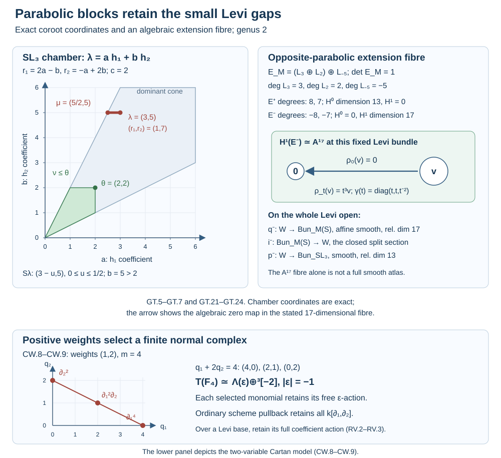
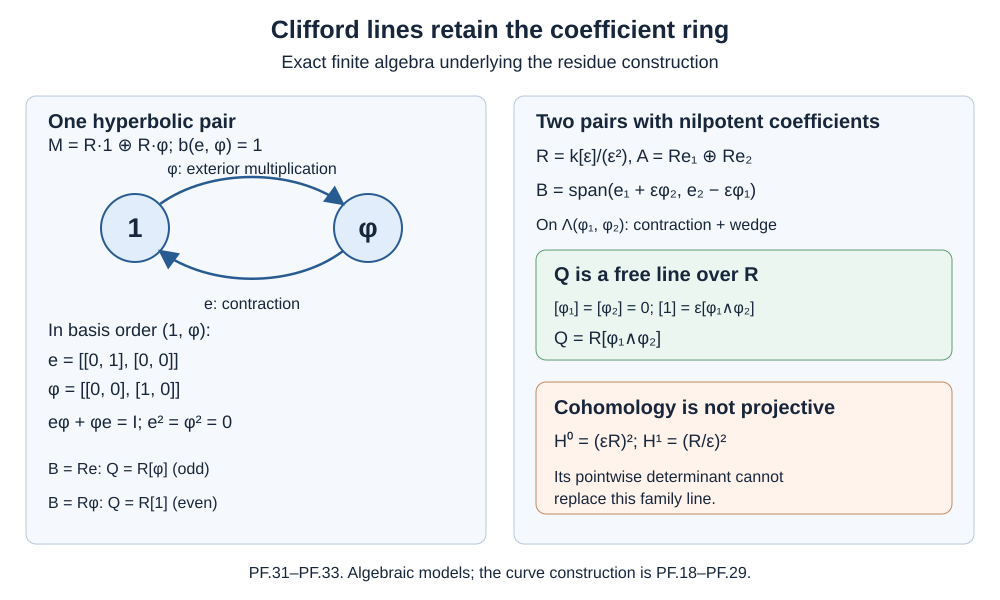
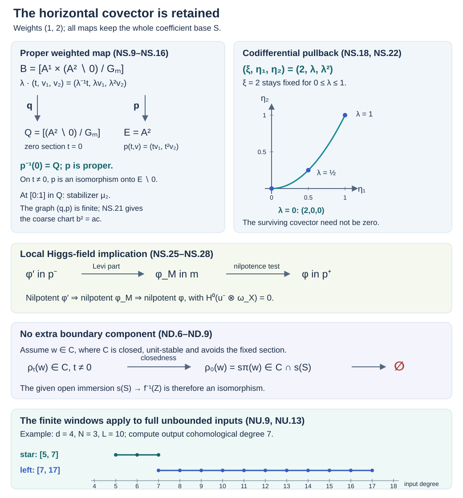
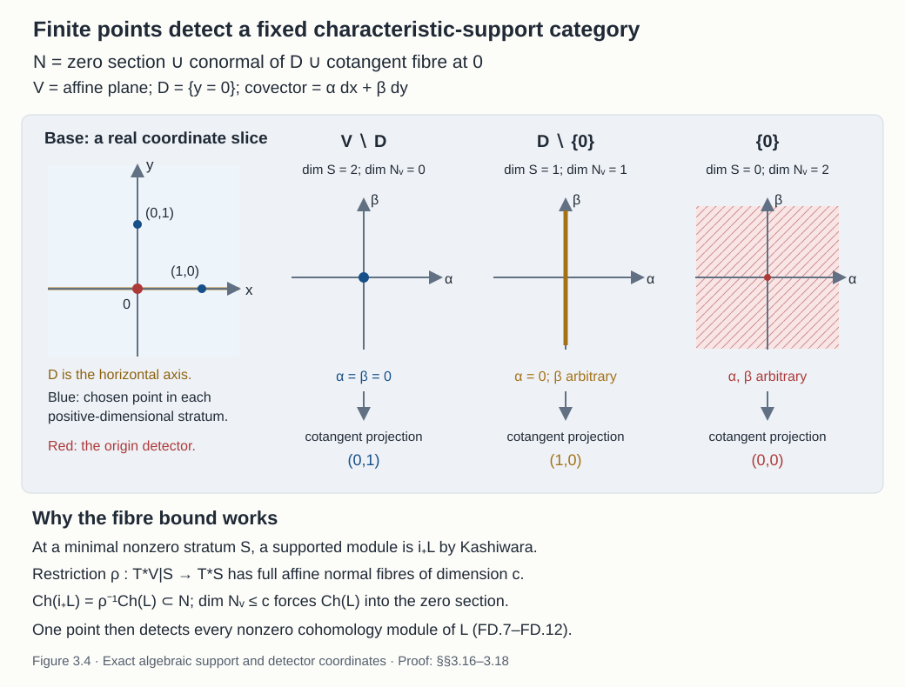
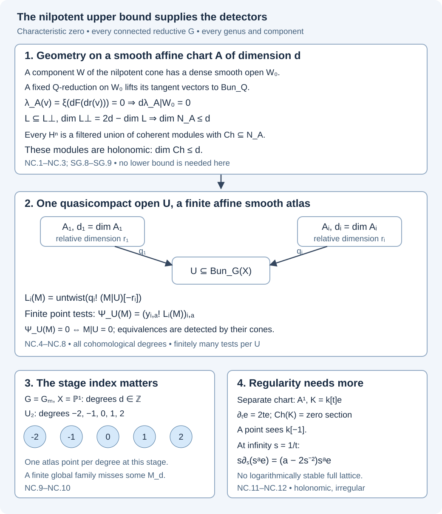

Sheaves and D-modules on Bun_G
Working draft. Public domain (CC0).
An automorphic category has to remember two kinds of geometry: how bundles vary, and how their automorphisms act. The second survives even when the space of isomorphism classes is a point. We will calculate this for \(B\mathbb G_m\), then use it to describe the entire rank-one automorphic category.
Sections 1.3–1.15 prove the truncatability, compact-generation and co-duality assertions used here. Sections 3.2–3.15 prove suitable-open nilpotent support preservation on the full unbounded category. Sections 3.16–3.19 prove finite chart-point detection under its exact support dimension bound and generation under a continuous conservative adjunction. Sections 3.20–3.22 prove the general-group nilpotent application, chartwise ind-holonomic cohomology, and stagewise detection of all unbounded objects and morphisms. Nilpotent regularity, derived tempered Satake and general Riemann–Hilbert retain the exact proof obligations listed in §9.
Our standing assumptions are those of the previous lesson: \(X\) is a smooth projective connected curve over an algebraically closed field \(k\) of characteristic zero, and \(G\) is connected reductive. Write \(Y=\operatorname{Bun}_G(X)\). Complexes have cohomological grading; \(k[1]\) lies in degree \(-1\). A DG category here is a stable, presentable, \(k\)-linear category, and its tensor product is the tensor product of presentable categories. All limits and equivalences retain the complexes of morphisms and their homotopy coherences.
We use right D-modules and exceptional pullback \(f^!\) for descent on stacks. On a smooth scheme we can convert to left D-modules by tensoring with the inverse canonical line; we use left modules for characteristic varieties and the Weyl–Spencer calculations, with their density conversion and shifts retained. In comparisons with topology, \(k_Y\) denotes the constant object in the Riemann–Hilbert normalization. Thus on a complex smooth space of dimension \(d\), \(p_Y^!k\) corresponds to the dualizing complex \(k_Y[2d]\). Shifts do not affect singular support or compactness, but we retain the shift when calculating the fibre adjunction in §5.
The background is D-modules on smooth schemes, derived descent, and compact objects in a presentable category. The D-module course and perverse-sheaf course supply the introductory material. For the full smooth-nerve construction we use the proved earlier lesson linked by title in §1.10. Sections 1.10–1.15 give the required unbounded transfer, quotient-category and finite-complement arguments. More general derived foundations outside this class retain their explicit boundaries in §9.
1. Defining the category on an unbounded stack
On a smooth finite-type scheme \(S\), \(\operatorname{Dmod}(S)\) is the unbounded derived category of quasicoherent right D-modules. The extension to a prestack is the category of crystals, expressed as a limit
\[ \operatorname{Dmod}(Y) =\lim_{(S\to Y)}\operatorname{Dmod}(S), \]
over affine schemes mapping to \(Y\), with exceptional pullback as transition functor. For an algebraic stack, smooth descent gives the equivalent description using smooth charts and their Čech nerves. An object includes identifications between its pullbacks and coherent identifications on multiple overlaps. Dropping this higher descent data changes the category.
Let \(\mathcal U(Y)\) be the poset of quasicompact open substacks. It is filtered: the union of two such opens is quasicompact. The intersections are quasicompact here because \(Y\) has affine diagonal.
Proposition 1.1. Restriction induces an equivalence
\[ \operatorname{Dmod}(Y) \simeq \lim_{U\in\mathcal U(Y)^{\mathrm{op}}} \operatorname{Dmod}(U). \tag{1.1} \]
For \(U\subset V\), the transition is \(j^!\), also denoted \(j^*\) for this open embedding.
Proof. Every point of \(Y\) has a quasicompact open neighbourhood, so the opens in question cover \(Y\). More strongly, a map from a quasicompact affine scheme \(S\) to \(Y\) factors through one of them: its image is quasicompact and is covered by finitely many such neighbourhoods; take their union.
Suppose we have a compatible family \(M_U\). For an affine map \(f:S\to Y\), choose an open \(U\) through which it factors, and define \(M_S=f^!M_U\). If two choices \(U,V\) are made, their union \(W\) identifies both answers with the pullback of \(M_W\). The space of choices is filtered, so these identifications have coherent higher compatibilities, not merely pairwise isomorphisms. The same construction for maps between affine charts supplies a crystal on \(Y\). Its restriction recovers the family.
Conversely, pullbacks of a crystal give such a family. The two constructions compose to the identity. In particular their maps on morphism complexes are equivalences:
\[ \operatorname{RHom}_Y(M,N) \simeq \lim_U\operatorname{RHom}_U(M|_U,N|_U). \]
This proves full faithfulness as well as essential surjectivity. The proof applies unchanged to a twisting gerbe pulled back to all charts. \(\square\)
This limit allows an object to have nonzero restrictions on arbitrarily unstable bundles and on infinitely many components. It does not impose finite support. Nor does the formula imply compact generation: limits of compactly generated categories need not be compactly generated.
Sections 1.3–1.15 prove the following assertions, including their geometric and categorical hypotheses. The free Drinfeld–Gaitsgory paper, Theorem 0.1.2 and Corollary 4.3.2, version 8, is further reading on these results. Under our assumptions, \(\operatorname{Dmod}(\operatorname{Bun}_G)\) is compactly generated. There is a cofinal system \(\mathcal U_{\mathrm{ct}}(Y)\) of quasicompact co-truncative opens; for them restriction has a continuous left adjoint \(j_!\). Define
\[ \operatorname{Dmod}_{\mathrm{co}}(Y) :=\mathop{\operatorname{colim}}_{U\in\mathcal U_{\mathrm{ct}}(Y)} \operatorname{Dmod}(U), \qquad\text{transition }j_* . \tag{1.2} \]
Then
\[ \operatorname{Dmod}(Y)^\vee :=\operatorname{Funct}_{\mathrm{cont}} (\operatorname{Dmod}(Y),\operatorname{Vect}) \simeq \operatorname{Dmod}_{\mathrm{co}}(Y). \tag{1.3} \]
The root blocks, cofinal opens and duality are proved in §§1.3–1.15. We compute (1.1)–(1.3) directly for a discrete stack in §6. In general, the transition functor matters: the same co-truncative system presents \(\operatorname{Dmod}(Y)\) by a colimit with \(j_!\), whereas its dual uses \(j_*\). The two extensions agree for open-and-closed components; they can differ at a boundary.
1.1. The formal compact-generation proof
Let \(C\) be a stable presentable category, and let \(r_i:C\to C_i\) be a jointly conservative family of continuous functors. Suppose each \(C_i\) has a set \(G_i\) of compact generators and \(r_i\) has a continuous left adjoint \(l_i\). Then the objects \(l_i(g)\), for \(g\in G_i\), are compact generators of \(C\).
Indeed, for a filtered diagram \(M_a\), adjunction and continuity give
\[ \operatorname{RHom}_{\mathcal C}(l_i g,\operatorname{colim}_a M_a) \simeq\operatorname{RHom}_{\mathcal C_i} (g,\operatorname{colim}_a r_iM_a) \simeq\operatorname{colim}_a \operatorname{RHom}_{\mathcal C}(l_i g,M_a). \]
Thus these objects are compact. If all their mapping complexes into \(M\) vanish, the generator property in \(C_i\) implies \(r_iM=0\) for every \(i\); conservativity then gives \(M=0\). Their localizing closure is all of \(C\): the inclusion of the localizing subcategory generated by a set admits a right adjoint; the cofiber of its counit is right orthogonal to the generating set and therefore zero. Equivalently, successively attach coproducts of shifts of the generators to kill every mapping class, take the sequential colimit, and apply the same orthogonality test. This proves the generator assertion.
For an open exhaustion the conservativity needed here is already proved by the restriction-limit argument of Proposition 1.1. If \(l_i=j_{i!}\) exists on the full category, this proof gives the precise generators \(j_{i!}G_i\). This formal lemma by itself does not construct co-truncative opens or prove the finite-type and half-twist hypotheses. Sections 1.3–1.15 establish those hypotheses for the bounded presentations and full bundle stack needed here.
One can also prove the colimit presentation directly. Assume the system of opens is directed, and every transition has continuous extension \(j_{ij!}\) with the usual restriction and composition identities. For a compatible family \(M=(M_i)\) form
\[ \operatorname{colim}_i j_{i!}M_i. \]
For a fixed \(a\), restriction to \(U_a\) agrees with \(M_a\) on the cofinal subposet of indices \(i\) containing \(a\). The counit maps give the transition arrows. Restriction preserves colimits, so its restriction is \(M_a\). Joint conservativity identifies the colimit with \(M\). Conversely, a coherent cocone of continuous functors \(T_i:C_i\to E\), compatible with \(j_{ij!}\), extends by \(M↦\operatorname{colim}_i T_iM_i\). The same restriction computation shows that this extension restricts to \(T_i\); the displayed reconstruction makes it the unique continuous extension, including natural transformations. This proves \(C\simeq \operatorname{colim}_{j_!}C_i\) through its universal property.
1.2. Why the continuous dual uses the other extensions
The formal assertion needed here is the following conditional statement. Suppose the local categories \(C_i\) are compactly generated and have specified dualities \(C_i^\vee\simeq C_i\). Suppose the restriction functor \(r_{ij}:C_j\to C_i\) is dual, under those specified pairings, to \(e_{ij}:C_i\to C_j\). Assume \(e_{ij}\) preserves compact objects. Let
\[ \mathcal E=\operatorname{colim}_{e_{ij}}\mathcal C_i. \]
Then
\[ \mathcal E^\vee\simeq\lim_{r_{ij}}\mathcal C_i, \qquad \left(\lim_{r_{ij}}\mathcal C_i\right)^\vee\simeq\mathcal E. \]
Here is the construction. Let \(D\) be the idempotent completion of the small stable colimit of the categories \(C_i^c\) and their compact-preserving transitions. Its ind-completion satisfies the universal property of \(E\): a continuous exact functor \(\operatorname{Ind}(D)\to T\) is exactly an exact functor on \(D\), and that is exactly a coherent family of exact functors on the \(C_i^c\). Extending those functors by colimits gives the coherent continuous cocones on \(C_i\). Thus \(E=\operatorname{Ind}(D)\) and is compactly generated.
For completeness, \(\operatorname{Ind}(D)\) has dual \(\operatorname{Ind}(D^op)\). The evaluation on generators \(d^op,d'\) is \(\operatorname{RHom}_D(d,d')\), extended continuously in each argument. Its coevaluation is the diagonal bimodule. The two triangle identities are the enriched Yoneda identity: tensoring a representable with the diagonal reproduces that representable; continuous extension reproduces every object. Applying the construction twice returns \(\operatorname{Ind}(D)\), so its canonical bidual map is an equivalence.
Now a continuous functional \(E\to \operatorname{Vect}\) is, by the colimit universal property, precisely a coherent family of continuous functionals \(C_i\to \operatorname{Vect}\). This identifies \(E^\vee\) with the limit of the local dual categories. Under the specified local dualities its transition is \(r_{ij}\), because it is precomposition with \(e_{ij}\). This proves the first formula; the bidual equivalence proves the second. It also proves that the dual of the \(i\)th restriction is the \(i\)th insertion into \(E\).
Apply this only after proving the local hypotheses. For D-modules the intended \(e_{ij}\) is \(j_{ij*}\), and the resulting \(E\) is \(\operatorname{Dmod}_{\mathrm{co}}(Y)\). The local dualities, the identity \((j^!)^\vee=j_*\), and the compact-preservation condition must be established in the stack formalism. They are not consequences of the existence of \(j_!\) by notation. A proof that instead dualizes the \(j_!\) diagram while calling its arrows \(j_*\) omits this issue.
The open-and-closed example in §6 verifies these conditions for a discrete union. Sections 1.3–1.15 prove them at the Harder–Narasimhan boundaries of the full bundle stack.
1.3. Root chambers and the blocks of a bounded complement
We retain the curve and group assumptions of the lesson. Put \[ c=\max(0,2g-2). \tag{GT.1} \] The root calculations will explain this bound. They also explain why one must allow the Levi bundle to vary within a bounded open: a single unstable type is too small for the contraction argument in general.
Fix a maximal torus and a Borel. Write \(\alpha_1,\ldots,\alpha_\ell\) for the simple roots and \(h_i=\alpha_i^\vee\) for the simple coroots. Let \(V=X_*(T)\otimes_{\mathbb Z}\mathbb Q\). A dominant element \(\lambda\) satisfies \(\alpha_i(\lambda)\geq0\). For a subset \(I\) of the simple roots, use the order \[ \nu\leq_I\lambda \quad\Longleftrightarrow\quad \lambda-\nu=\sum_{i\in I}a_i h_i,\qquad a_i\in\mathbb Q_{\geq0}. \tag{GT.2} \] The order with every simple root is denoted \(\leq_G\). All these comparisons are made at a fixed central degree. Integral component classes, including torsion in the coroot quotient, remain separate labels as in The moduli stack of bundles, §§3.1–3.8 and 4.8.
We need one elementary positivity fact. The principal Cartan matrix \(C_I=(\alpha_i(h_j))_{i,j\in I}\) has positive diagonal, nonpositive off-diagonal entries, and a positive diagonal symmetrizer \(D_I\) for which \(D_IC_I\) is positive definite. These are the root-basis and invariant-form identities proved in Root systems and root data, §§1–3. If \(C_Ix\geq0\) coordinatewise, then \(x\geq0\). Indeed write \(x=x^+-x^-\), with disjoint nonnegative parts. If \(x^-\ne0\), then \[ 0\leq (x^-)^TD_IC_Ix \leq -(x^-)^TD_IC_Ix^-<0. \tag{GT.3} \] The middle inequality uses the nonpositive off-diagonal entries and the disjoint supports. This contradiction proves the assertion, and in particular proves that \(C_I^{-1}\) has nonnegative entries.
Let \(\operatorname{pr}_I\lambda\) be the unique element obtained from \(\lambda\) by subtracting an \(I\)-coroot combination and setting its \(I\)-root pairings to zero. Solving \(C_Ia=(\alpha_i(\lambda))_{i\in I}\) and applying (GT.3) gives \[ \operatorname{pr}_I\lambda\leq_I\lambda,\qquad \alpha_j(\operatorname{pr}_I\lambda)\geq\alpha_j(\lambda) \quad(j\notin I). \tag{GT.4} \] The second assertion follows because \(\alpha_j(h_i)\leq0\) when \(j\ne i\). More generally, if \(\nu\leq_I\lambda\), the same calculation gives \(\alpha_j(\nu)\geq\alpha_j(\lambda)\) for \(j\notin I\). Thus an \(I\)-dominant \(\nu\leq_I\lambda\), with \(\lambda\) dominant for \(G\), is dominant for \(G\) as well.
Take a dominant cutoff \(\theta\) with \(\alpha_i(\theta)\geq c\) for every \(i\). For a type \(\lambda\not\leq_G\theta\), define \[ I_\lambda=\{i:\alpha_i(\lambda)\leq c\},\qquad S_\lambda=\{\nu\text{ dominant}:\nu\leq_{I_\lambda}\lambda\}. \tag{GT.5} \] This set has fixed projection \(\operatorname{pr}_{I_\lambda}\lambda\), is downward closed for the \(I_\lambda\)-order, and satisfies \[ \alpha_j(\nu)\geq\alpha_j(\lambda)>c \quad(\nu\in S_\lambda,\ j\notin I_\lambda). \tag{GT.6} \] It is therefore an admissible set for the parabolic with Levi roots \(I_\lambda\).
Every type in \(S_\lambda\) lies outside the cutoff. Here is the required separation proof. Suppose that \(\nu\in S_\lambda\) and \(\nu\leq_G\theta\). Then \(\theta-\lambda=\sum_j b_jh_j\), with \(b_j\geq0\) for \(j\notin I_\lambda\). For \(i\in I_\lambda\), the cutoff inequalities give \(\alpha_i(\theta-\lambda)\geq0\). Put \(v=\sum_{i\in I_\lambda}b_i h_i\). The off-diagonal Cartan signs imply \(\alpha_i(v)\geq0\) for \(i\in I_\lambda\). Apply (GT.3) to its coefficients. All \(b_i\) are nonnegative. Hence \(\lambda\leq_G\theta\), a contradiction. We have proved \[ S_\lambda\cap\{\nu:\nu\leq_G\theta\}=\varnothing. \tag{GT.7} \] This is a statement in every root system, with the central direction unchanged.
For a fixed \(I\), the set \(\{\nu\text{ dominant}:\nu\leq_I\lambda\}\) is bounded. Write \(\nu=\lambda-\sum_{i\in I}a_i h_i\). Then \(a_i\geq0\) and \(C_Ia\leq(\alpha_i(\lambda))_{i\in I}\); applying \(C_I^{-1}\) bounds every \(a_i\). The possible Harder–Narasimhan types in such a set are finite. One way to see the denominator bound is to use the fixed faithful representation from the previous lesson: its slopes have integral numerators and ranks bounded by its fixed dimension; its finitely many weights recover the rational cocharacter by a fixed rational linear system. Bounded coordinates therefore leave only finitely many types. The integral Levi labels over a rational degree have only the finite torsion ambiguity described in that lesson.
The previous lesson, §§4.8–4.10, proves that Harder–Narasimhan types are locally finite in coefficient families and that bounded loci have finite-type framed atlases. It also proves specialization in the coroot order. Consequently a downward-closed set at fixed Levi degree gives an open bounded locus in \(\operatorname{Bun}_M\). For the sets used in (GT.5), their \(G\)-locus is locally closed directly: with \(\mu=\operatorname{pr}_{I_\lambda}\lambda\), one has \(S_\lambda=\{\nu:\mu\leq_G\nu\leq_G\lambda\}\). Indeed \(\lambda-\mu\) has only \(I_\lambda\)-coroot coefficients, so the two nonnegative differences through any element of this interval can have no other coefficients. The downward bound is open and the upward bound is closed. To verify this from specialization, restrict to a bounded chart: only finitely many locally closed strata occur, so the closure of their union is the union of their closures; every specialized type is higher in the coroot order. Thus an upward-closed union is closed, and its complement is open. We use the reduced structure on the resulting locally closed locus. Denote the two loci by \(B_M(S)\) and \(Z_G(S)\), respectively. Their integral degree labels are retained. The parabolic construction below applies to these finite admissible intervals.
1.4. The root cohomology estimates, including families
Let \(P\) be the standard parabolic with Levi \(M\) and simple-root set \(I\). Write \(U^+\) for its unipotent radical, \(P^-\) for the opposite parabolic, and \(U^-\) for the radical of \(P^-\). Let \(F_M\) be a Levi bundle of dominant \(G\)-type \(\nu\), with \[ \alpha_j(\nu)>c\qquad(j\notin I). \tag{GT.8} \] We claim \[ H^1(X,\mathfrak u^+_{F_M})=0,\qquad H^0(X,(\mathfrak g/\mathfrak p)_{F_M})=0. \tag{GT.9} \] The bundle \(F_M\) itself need not be semistable.
Use its canonical Harder–Narasimhan reduction inside \(M\), proved in the previous lesson, §§4.4–4.8. Its Levi \(M_\nu\) has simple roots on which \(\nu\) vanishes. Filtering an associated representation by this reduction gives semistable \(M_\nu\)-modules with slopes equal to their central weights paired with \(\nu\). This representation statement was proved there using tensor semistability and the reductive tensor generators; it does not presume that an arbitrary faithful sum is semistable.
Each weight of \(\mathfrak u^+\) is a positive root \(\beta=\sum_i n_i\alpha_i\) with \(n_j>0\) for some \(j\notin I\). Every \(n_i\) is a nonnegative integer. Thus \[ \beta(\nu)\geq n_j\alpha_j(\nu)>c\geq2g-2. \tag{GT.10} \] Weights in one \(M_\nu\)-central summand differ by roots pairing to zero with \(\nu\), so that whole summand has this slope. A semistable bundle of slope greater than \(2g-2\) has zero \(H^1\): duality identifies that group with the dual of \(\operatorname{Hom}(E,\omega_X)\), and the slope comparison proved in the previous lesson makes this Hom zero. An exact-sequence induction through the filtration proves the first equality of (GT.9). The weights of \(\mathfrak g/\mathfrak p\) are the negatives of those roots. Their semistable graded summands have negative slope, and hence zero \(H^0\). The same induction proves the second equality.
The assertion also holds for each central vector-group quotient in either radical. In characteristic zero an invariant decomposition of the root representation splits these quotients as \(M\)-representations; alternatively their weights and the same \(M_\nu\) filtration give the identical argument. Thus every positive quotient has zero \(H^1\), and every negative quotient has zero \(H^0\).
These are coefficient-family assertions. On a noetherian affine parameter scheme, the universal finite projective cohomology complex from the previous lesson, §§1.1 and 4.1, computes these bundles with every coefficient module. When the degree-zero cohomology vanishes on every geometric fibre, its differential is fibrewise injective, hence a split injection locally; the cokernel is finite projective. When degree-one cohomology vanishes, the differential is a split surjection and its kernel is finite projective. Both conclusions survive arbitrary tensor products. Consequently \[ R\Gamma(E^-)\simeq H^1(E^-)[-1],\qquad R\Gamma(E^+)\simeq H^0(E^+) \tag{GT.11} \] for every negative and positive quotient under consideration, and the two displayed cohomology modules are finite projective with arbitrary base change. Their ranks are determined by the Euler characteristic already proved in the previous lesson. A finite-presentation model and pullback give the assertion over every ordinary coefficient algebra. This proves more than vanishings at closed bundles.
1.5. Unipotent torsors and the opposite-parabolic affine map
Choose an integral central cocharacter \(\gamma:\mathbb G_m\to Z(M)\), with zero pairing on \(I\) and positive pairing on its complement. To construct it, solve the Cartan equations with values zero on \(I\) and one off \(I\), using the inverse-matrix positivity proved in §1.3, and clear denominators. Its pairing with every positive root outside \(M\) is positive.
Filter \(U^-\) by these positive degrees for the action \[ \rho_t(u)=\gamma(t)^{-1}u\gamma(t). \tag{GT.12} \] Thus a negative root \(-\beta\) has degree \(\beta(\gamma)>0\). The filtration is finite, is preserved by \(M\), and satisfies \([U_{\geq a},U_{\geq b}]\subset U_{\geq a+b}\). The quotients are vector groups. The polynomial exponential and group law for these nilpotent root groups were proved in the previous lesson, §6.8; their finite formulas have rational coefficients and hence hold over every coefficient algebra. This also constructs the filtration and its central quotients over those algebras.
Fix a family \(F_M\) satisfying (GT.8). Passing through the central quotients constructs the stack of twisted \(U^-\)-torsors on the curve. At a quotient \(E^-\), obstruction to lifting is in \(H^2(E^-)\), which is zero on the curve with arbitrary coefficient modules. Two lifts differ by \(H^1(E^-)\), and their relative automorphisms are \(H^0(E^-)=0\). These assertions can be checked directly in a two-affine cover of the curve: vector torsors on either affine are trivial; their transition is a section on the intersection, modulo the two changes of frame. The resulting two-term Čech complex computes \(H^0\) and \(H^1\) and has no \(H^2\). The central group-extension identities make precisely this additive lifting calculation at every successive quotient.
By (GT.11), \(H^1(E^-)\) is a finite projective parameter module. The stack at each stage is therefore a torsor under its vector bundle, with no relative inertia. Such a torsor is an affine smooth scheme over the preceding stage: after a faithfully flat local trivialization it is affine space; affine-algebra and smoothness descent were proved in the previous lesson, §§7.1–7.9. The maps between trivializations are affine translations, so they glue the same scheme and retain every base change. Iterating proves that \[ q^-:\operatorname{Bun}_{P^-}\times_{\operatorname{Bun}_M}B_M(S) \longrightarrow B_M(S) \tag{GT.13} \] is schematic, affine, smooth and of finite presentation. Its split-bundle section is a closed immersion, because an affine morphism is separated. This conclusion includes arbitrary test rings and all torsor isomorphisms.
For \(U^+\), each quotient has \(H^1(E^+)=0\). The same central lifting calculation says that every torsor is locally the split torsor, and its automorphism group is a successive extension of the vector bundles \(H^0(E^+)\). They are finite projective by (GT.11). The group is smooth affine, with the polynomial group law retained from the finite filtration. Consequently the split section gives a smooth surjection \[ B_M(S)\longrightarrow \operatorname{Bun}_{P}\times_{\operatorname{Bun}_M}B_M(S). \tag{GT.14} \] Its fibres are the isomorphism torsors under this automorphism group. Thus (GT.14) is a statement about families and their inertia, not a claim that the positive-radical group has no sections.
1.6. The parabolic block inside the bundle stack
Take an admissible \(S\) with all outside root pairings greater than \(c\). The map \[ p:\operatorname{Bun}_{P}\times_{\operatorname{Bun}_M}B_M(S) \longrightarrow Z_G(S) \tag{GT.15} \] is an isomorphism. We give the properness and coefficient argument that a pointwise canonical reduction alone would omit.
First work over a field. The Harder–Narasimhan parabolic of a Levi bundle of type \(\nu\in S\) has simple roots where \(\nu\) vanishes. By (GT.8) those roots lie in \(I\). Its inverse image in \(P\) is the canonical \(G\)-parabolic: its finer Levi is semistable and every outside slope is positive. The uniqueness proved in the previous lesson therefore makes (GT.15) bijective on geometric points and on their stabilizers. Conversely the canonical \(G\)-reduction extends to \(P\), giving the Levi bundle of type \(\nu\). The rational projection and integral Levi degree are retained in both directions.
To prove properness, use the finite relative projective flag Quot scheme of the previous lesson, §§1.2 and 4.8. Choose finitely many highest-weight Plücker lines for \(G/P\), using integral multiples of the fundamental weights off \(I\); such multiples are characters of the actual group and give the closed flag embedding proved in Automorphisms, forms and parabolic subgroups, §§1–2. Their degrees depend only on the fixed projection of \(S\), so they are fixed in this Quot problem.
A specialization in this projective Quot scheme can initially give nonsaturated lines. Saturating them on the smooth curve increases their degrees by their effective torsion defects. The maximal possible degree of each highest-weight line is its pairing with the canonical type, by the slope and flag bounds of the previous lesson. At every target in \(Z_G(S)\), this maximal value is exactly its fixed projection value. Thus no positive defect is possible for any of the defining Plücker lines. They remain subbundles. Their closed incidence and tensor equations persist under specialization, so they give an actual \(P\)-reduction.
Here is the required bound on its Levi type \(\nu'\), before knowing that \(\nu'\) is \(G\)-dominant. Refine the Levi reduction by its canonical \(M\)-parabolic and lift that parabolic to \(P\). For a dominant highest weight \(\eta\) of an actual \(G\)-representation, take the highest-weight representation of this finer Levi inside the representation. Its weights differ from \(\eta\) only by roots on which \(\nu'\) is zero. The associated subbundle is semistable, by the reductive representation argument of the previous lesson, and its slope is \(\eta(\nu')\). The largest slope of the ambient \(G\)-bundle representation is \(\eta(\nu)\). Hence \(\eta(\nu')\leq\eta(\nu)\). Integral multiples of all fundamental weights, together with central characters and their negatives, test the coroot cone, so \(\nu'\leq_G\nu\). Its projection is unchanged; thus the difference is an \(I\)-coroot combination and \(\nu'\leq_I\nu\). For a simple root outside \(I\), the off-diagonal Cartan signs give \(\alpha_j(\nu')\geq\alpha_j(\nu)>c\). Within \(I\), \(\nu'\) is dominant by its definition as the Levi type. It is therefore \(G\)-dominant. Downward closure makes \(\nu'\in S\). This proves the valuative closedness of the selected reduction locus inside that projective flag Quot, and hence properness of (GT.15).
The relative tangent space of the reduction map is \(H^0(X,(\mathfrak g/\mathfrak p)_{F_P})\). The \(P\)-root filtration of this bundle has the associated \(M\)-graded bundle from (GT.9), so its \(H^0\) is zero. The cohomology argument of §1.4 retains this vanishing with arbitrary square-zero coefficient modules. Thus the represented proper reduction map is unramified. Its geometric fibres contain one point, so it is universally injective; a proper unramified universally injective map is a closed immersion. Properness and finite fibres first make it finite by the projective affine-neighbourhood argument of the previous lesson, §4.7. Over a strictly henselian local target, its finite unramified fibre is reduced, and the unique point makes that fibre exactly the residue field. The finite algebra modulo the target submodule generated by \(1\) therefore has zero residue module. Nakayama makes this quotient zero. Hence the target algebra surjects onto the finite algebra. These quotients descend and give the closed immersion.
The target \(Z_G(S)\) has its reduced locally closed structure. A closed immersion onto all of its geometric points has defining ideal contained in its nilradical, hence zero. This proves (GT.15) as an isomorphism of stacks. Its subsequent pullbacks retain all nilpotent coefficient rings. The reduced structure defines the block; arbitrary coefficient families are then maps to that block, not a separate reduced-point construction.
There is also a smooth map from the opposite-parabolic space of (GT.13) to \(\operatorname{Bun}_G\). The obstruction module for this reduction map is \(H^1(X,(\mathfrak g/\mathfrak p^-)_{F_{P^-}})\). Its root filtration has the positive bundle \(\mathfrak u^+_{F_M}\) as its associated graded. Equations (GT.9)–(GT.11) make that obstruction zero for every coefficient module. The map is of finite presentation by the reduction section scheme of the previous lesson, §1.5. Its square-zero lifting calculation therefore proves that it is smooth, with no appeal solely to a pointwise dimension count.
Finally, the map \[ B_M(S)\longrightarrow \bigl(\operatorname{Bun}_{P}\times_{\operatorname{Bun}_M}B_M(S)\bigr) \times_{\operatorname{Bun}_G} \bigl(\operatorname{Bun}_{P^-}\times_{\operatorname{Bun}_M}B_M(S)\bigr) \tag{GT.16} \] is an open immersion. An opposite pair of flags has stabilizer \(M=P\cap P^-\), including its schematic stabilizer. In cocharacter weight coordinates one parabolic preserves the upper weight filtration and the other the lower filtration; their intersection preserves every weight summand and is the Levi. The tangent map \(\mathfrak g/\mathfrak m\to\mathfrak g/\mathfrak p\oplus\mathfrak g/\mathfrak p^-\) is an isomorphism. The resulting monomorphism \(G/M\to G/P\times G/P^-\) is therefore étale and hence an open immersion; the all-ring homogeneous quotient \(G/M\) was constructed in the previous lesson, §4.7. A section of the product flag bundle has values in this open orbit exactly when its flags are opposite everywhere on \(X\). The locus in the parameter scheme where this holds is open: its complement is the proper image of the closed nonopposite locus on the curve. This proves (GT.16) on the entire parameter scheme.
1.7. The actual contraction chart
In the cocharacter grading of §1.5, formula (GT.12) multiplies every negative root coordinate by \(t^{\beta(\gamma)}\), a positive integer power. The finite polynomial group law is graded, so this defines a group endomorphism also for nonunits \(t\), over every coefficient ring. At \(t=0\) it kills \(U^-\) and retains \(M\). Applying these group endomorphisms to torsors gives an action of the multiplicative monoid \(\mathbb A^1\) on the space \(W\) in (GT.13), over \(B_M(S)\), with \[ \rho_0=i^-q^-,\qquad i^-:B_M(S)\hookrightarrow W. \tag{GT.17} \] For \(t\) invertible, the action is inner conjugation. Multiplication by \(\gamma(t)\) gives a natural isomorphism between the transformed torsor and the original one. The identity \(\gamma(ts)=\gamma(t)\gamma(s)\) proves coherence of these isomorphisms. Thus the \(\mathbb G_m\)-action is trivial as an action on the absolute stack. Its trivialization acts by the central automorphism \(\gamma(t)\) on the Levi bundle, and is not a trivialization over \(\operatorname{Bun}_M\).
Here is a precise way to pass to scheme contraction charts. Form \[ \overline W=W/\mathbb G_m,\qquad \overline B=B_M(S)/\mathbb G_m =B_M(S)\times B\mathbb G_m. \tag{GT.18} \] The relative monoid action gives an affine morphism \(\overline W\to\overline B\). The absolute coherent trivialization identifies \(\overline W\) with \(W\times B\mathbb G_m\). Let \(\psi:\overline W\to W\) be its projection and \(\varphi:W\to\overline W\) the quotient atlas. Then \(\psi\varphi\simeq\operatorname{id}_W\), and both maps are smooth and surjective.
The closed substack \(\overline B\) is \(\psi^{-1}(B_M(S))\). Indeed pull both closed substacks back along the faithfully flat atlas \(\varphi\): the first becomes the split section by the relative quotient square, and the second becomes that same section by \(\psi\varphi\simeq\operatorname{id}\). Faithfully flat descent of their ideal sheaves makes the equality valid before pullback. In particular \(\overline B\to B_M(S)\) is smooth and surjective.
Choose a smooth affine chart \(T\to B_M(S)\). Pulling the affine relative action back to \(T\) gives an affine scheme \(W_T\), a section \(T\hookrightarrow W_T\), and a nonnegative grading of its coordinate algebra, with degree-zero part \(\mathcal O_T\). The quotient diagram \[ T/\mathbb G_m\hookrightarrow W_T/\mathbb G_m \tag{GT.19} \] maps smoothly to \(\overline B\hookrightarrow\overline W\) and then to \(B_M(S)\hookrightarrow W\). Its inverse-image square is Cartesian. Combining it with (GT.14)–(GT.16) gives a diagram from (GT.19) to \[ Z_G(S)\hookrightarrow\operatorname{Bun}_G \tag{GT.20} \] whose vertical maps are smooth, the left one is surjective, and the map from the top closed substack to the inverse image of the bottom block is an open immersion. These are the geometric contraction-chart conditions. Their construction has been proved on coefficient families and all arrows.
Sections 1.10–1.14 prove that (GT.19) is truncative and transfer its compactness property to (GT.20). The proof uses the actual strong equivariant category, the full Levi-base coefficient representation and the unipotent-gerbe section. The monoid action on a scheme by itself would not supply this result: the quotient by \(\mathbb G_m\) and its derived equivariance are essential.
1.8. A rank-two chamber and its extension spaces
For \(G=SL_3\), write a cocharacter as \(a h_1+b h_2\). Its standard diagonal coordinates are \((a,-a+b,-b)\), and its simple-root pairings are \[ r_1=2a-b,\qquad r_2=-a+2b,\qquad a=(2r_1+r_2)/3,\quad b=(r_1+2r_2)/3. \tag{GT.21} \] Take \(g=2\), so \(c=2\), and take \(\theta=(a,b)=(2,2)\). The dominant cutoff consists of \(a,b\leq2\), \(b\leq2a\), and \(a\leq2b\). For \(\lambda=(3,5)\), the simple-root pairings are \((1,7)\). Thus \(I_\lambda=\{1\}\), and the admissible segment is \[ (a,b)=(3-u,5),\quad 0\leq u\leq\tfrac12;\qquad (r_1,r_2)=(1-2u,7+u). \tag{GT.22} \] It joins \(\lambda\) to its Levi projection \((5/2,5)\). The entire segment lies outside the cutoff because its \(b\)-coordinate is \(5\). This is the separation argument (GT.7) in exact coordinates.
The corresponding parabolic preserves a two-dimensional subspace. Choose line bundles \(L_3,L_2\) of degrees \(3,2\), and put \(L_{-5}=(L_3\otimes L_2)^{-1}\). The split Levi bundle is \(E_M=(L_3\oplus L_2)\oplus L_{-5}\), with determinant one. The positive-radical bundle is \(\operatorname{Hom}(L_{-5},L_3\oplus L_2)\), whose two line degrees are \(8,7\); its dual is the negative-radical bundle. Since the radicals of this maximal parabolic are abelian, their torsor calculations are already the vector calculations. Duality and Euler characteristic give \[ H^1(E^+)=0,\quad \dim H^0(E^+)=13,\qquad H^0(E^-)=0,\quad \dim H^1(E^-)=17. \tag{GT.23} \] For example the negative line degrees contribute \(9\) and \(8\) to \(H^1\). The degree-one difference between \(L_3\) and \(L_2\) is allowed inside the Levi block; the estimate concerns the two roots outside that Levi.
Choose \(\gamma(t)=\operatorname{diag}(t,t,t^{-2})\). Both negative-radical coordinates in (GT.12) have weight \(3\). Thus the fibre of the affine map \(q^-\) at this fixed Levi bundle is the actual extension space \[ H^1(E^-)\simeq\mathbb A^{17},\qquad v\longmapsto t^3v. \tag{GT.24} \] It contracts to the split extension. The positive split section is smooth with relative automorphism dimension \(13\). The opposite map to \(\operatorname{Bun}_{SL_3}\), over the full Levi open, is smooth of relative dimension \(13\). The frozen fibre \(\mathbb A^{17}\) alone is not asserted to be a smooth atlas of that bundle stack: the Levi family in (GT.19) is retained.

Figure 1. The chamber panel uses exact coroot coefficients. The red numerical admissible segment has fixed outside coefficient \(b=5\), so it misses the green cutoff \(a,b\leq2\), even though its Levi root gap is small. For the rank-two Levi bundle of degree five in this example, its actual HN types in this segment are the two endpoints: the rank-one slopes \(3,2\), and the semistable rank-two slope \(5/2\). The upper right panel shows the algebraic zero map in the stated \(17\)-dimensional extension fibre, with the full Levi-base maps and dimensions from (GT.21)–(GT.24). The lower lattice is the separate two-variable Cartan calculation of §1.11: positivity selects three derivative monomials, each retaining its free exterior-algebra operator; it is not a plot of the \(17\)-dimensional fibre. Over a Levi base their full coefficient representation is retained by (RV.2)–(RV.3). Proof locators are (GT.5)–(GT.7), (GT.21)–(GT.24), (CW.6)–(CW.9) and (RV.2)–(RV.3). Free human-source reading for the root-chart construction is Drinfeld–Gaitsgory, Compact generation of the category of D-modules on the stack of G-bundles on a curve, §§9–11; for the Cartan-complex formalism, Pandžić, A simple proof of Bernstein–Lunts equivalence, §1. The proofs used here are given in the text and the earlier programme lessons named above.
Exercise 1.A. Prove the separation (GT.7) for a nonsimply laced root system. Which positivity assertion must replace a picture?
Solution 1.A. Its principal Cartan matrix need not be symmetric. Multiply by its positive diagonal symmetrizer. Its off-diagonal entries stay nonpositive and its quadratic form is positive definite. Splitting a coefficient vector into disjoint positive and negative parts gives exactly (GT.3). Applying this to the \(I_\lambda\)-coefficients of \(\theta-\lambda\) proves they are nonnegative. The other coefficients were already nonnegative, so \(\lambda\leq_G\theta\), the required contradiction. The proof uses neither equality of root lengths nor a planar diagram.
Exercise 1.B. In the \(SL_3\) example compute the projection endpoint, both root degrees, the two extension dimensions and the contraction weights. Explain why the small Levi gap does not spoil (GT.23).
Solution 1.B. Setting \(r_1=1-2u=0\) gives \(u=1/2\), hence endpoint \((5/2,5)\). The outside positive root degrees are \(r_2=7\) and \(r_1+r_2=8\). Their \(H^0\) dimensions in genus two are \(7-1=6\) and \(8-1=7\), while their duals have \(H^1\) dimensions \(7+1=8\) and \(8+1=9\). These give \(13\) and \(17\). Conjugation by \(\gamma(t)^{-1}\) multiplies either lower-left entry by \(t^3\). The root of the Levi has degree one, but it is not a weight of either radical. The estimate follows from the outside roots, whose degrees exceed \(2g-2=2\).
1.9. A cofinal quasicompact exhaustion
For a dominant rational \(\theta\), at its fixed central degree define \[ U_\theta=\{P:\operatorname{HN}(P)\leq_G\theta\}. \tag{GT.25} \] Retain an integral component label if desired. The preceding specialization argument makes this locus open. It is quasicompact by the faithful framed atlas of the previous lesson. Here is how its numerical hypotheses are verified. For a dominant highest weight \(\eta\), a canonical reduction filters its representation bundle into semistable central-weight pieces, and its largest slope is \(\eta(\operatorname{HN}(P))\). Since \(\eta(h_i)\geq0\), (GT.25) bounds this slope by \(\eta(\theta)\). Apply the same statement to the dual representation to bound the smallest slope below. A fixed faithful sum therefore has uniformly bounded extremal slopes and fixed rank and degree in each of the finitely many integral components over this central degree. The finite-type Quot atlas and affine reduction section scheme in the previous lesson, §§1.1–1.6 and 4.10, apply. Its smooth image is all of \(U_\theta\), proving quasicompactness.
These opens are cofinal among quasicompact opens of \(\operatorname{Bun}_G\) after finite unions over central degrees. A quasicompact open meets only finitely many components of the discrete component group, and its finite-type charts have only finitely many Harder–Narasimhan types. For each central degree, choose one dominant rational \(\theta\) above all those types and satisfying \[ \alpha_i(\theta)\geq c\quad\text{for every simple root }i. \tag{GT.26} \] Such a \(\theta\) exists: solve \(C a=\mathbf1\) on each semisimple factor. Positivity of \(C^{-1}\) gives a strictly dominant element \(\zeta=\sum_i a_i h_i\) with every \(\alpha_i(\zeta)=1\). In an irreducible factor every \(a_i>0\), since otherwise the nonpositive off-diagonal entries in that row could not sum to \(1\). Add a sufficiently large positive multiple of \(\zeta\) to the fixed central element. Its coroot coefficients dominate the finitely many types, and its root pairings satisfy (GT.26). This proves the cofinality in every genus.
For two such cutoffs at one central degree with \(\theta\leq_G\theta'\), only finitely many types occur in \[ U_{\theta'}\setminus U_\theta. \tag{GT.27} \] Each type \(\lambda\) in this difference lies in a block \(Z_G(S_\lambda)\) constructed in §§1.3–1.7. By (GT.7), that block avoids \(U_\theta\). Its intersection with \(U_{\theta'}\) has the same contraction charts, as follows. Restrict the Levi open to types \(\nu\leq_G\theta'\), and pull the affine map \(q^-\) back to this smaller open. Every opposite extension over it maps into \(U_{\theta'}\): the monoid family (GT.17) has constant bundle type away from zero and type \(\nu\) at zero, so the proved specialization inequality bounds its original type above by \(\nu\). The restricted affine map retains its monoid action and split section. Equations (GT.14)–(GT.16) retain smoothness, surjectivity and the open inverse-image condition. Thus the bounded complement is covered by finitely many blocks whose geometric contraction conditions have been proved. This supplies the geometric input for the finite-recollement D-module argument; it does not assume that truncativity of one stratum follows merely from its slope.
If \(G\) is a torus, the root set is empty. The component theorem and boundedness result of the previous lesson give quasicompact open-and-closed degree components. Finite unions of them are the required cofinal opens. For a general reductive group the central directions and the finite torsion labels are carried by the finite unions above. The positive and negative root estimates use only the derived root system; no central adjoint direction is assigned a spurious positive weight.
Exercise 1.C. Why can a root cutoff at one central degree not exhaust \(\operatorname{Bun}_{\mathbb G_m}\)? How does the cofinality proof correct this for every reductive group?
Solution 1.C. There are no roots, so the root inequalities say nothing about the integral degree of a line bundle. A cutoff at one central degree sees only that degree component. A quasicompact open meets finitely many open-and-closed components, so their finite union contains it. For a reductive group first retain its finitely many component labels, then choose a sufficiently dominant semisimple cutoff at each of their central degrees. The finite union contains the original open and is quasicompact. Torsion in the component group changes the component label, not the rational root inequalities.
1.10. Smooth pullback and the unipotent-gerbe section
We now work in the full unbounded derived category. A compact object is an object whose mapping-complex functor commutes with filtered colimits. All limits of categories and mapping complexes below are homotopy limits. Our scheme convention is that a smooth map of relative dimension \(r\) has \(f^!=f^\natural[r]\), where \(f^\natural\) is ordinary flat pullback of left D-modules. Strong smooth descent, including its higher maps, is proved in D-modules on stacks, ind-schemes and the de Rham prestack, §§1–2. We use that descent construction, rather than the derived category of the ordinary equivariant heart.
Smooth transfer lemma. For a schematic quasicompact smooth map \(f:Y'\to Y\) between smooth stacks with affine diagonal, of constant relative dimension \(r\), there is an adjunction \[ f^!\dashv f_{\mathrm{dR},*}[-2r]. \tag{CC.1} \] The functor on the right preserves colimits. Consequently \(f^!\) preserves compact objects. Locally constant relative dimensions are handled on the finitely many open and closed pieces of a quasicompact source.
We give the transfer calculation and its unbounded justification. On an affine product chart \(Y'=Y\times\mathbb A^r\), put \(B=\mathcal D_Y\otimes_k\mathcal D_{\mathbb A^r}\). The \((B,\mathcal D_Y)\)-bimodule for \(f^\natural\) is \(\mathcal O_{\mathbb A^r}\otimes_k\mathcal D_Y\). It has the finite free relative Spencer resolution: in degree \(-j\) its term is \(B\otimes\bigwedge^j k^r\), and the differential uses right multiplication by the commuting vertical derivatives. Exactness follows from the regular sequence of their symbols in the order-associated graded ring, followed by induction on order. Applying Hom gives the relative de Rham cochain complex in degrees \(0,\ldots,r\). Differential-operator direct image is this complex shifted by \([r]\). Tensor–Hom adjunction thus gives \[ \operatorname{RHom}_{Y'}(f^\natural M[-r],N) \simeq \operatorname{RHom}_{Y}(M,f_{\mathrm{dR},*}N). \tag{CC.2} \] Replacing \(M\) by \(M[2r]\) proves (CC.1). Smooth étale coordinates give the same relative Spencer resolution with its intrinsic exterior-power and bracket differential. Its chain-rule transition maps identify the displayed adjunctions on overlaps.
For a nonaffine source over an affine target, a finite affine cover and its intersection cover compute the direct image of each quasi-coherent Spencer term. The affine-diagonal hypothesis makes these intersections affine; it need not make the diagonal a closed immersion. The finite Čech complex and the finite Spencer complex use only finite sums, cones and shifts. They therefore commute with arbitrary colimits, and have a cohomological bound independent of the input complex. No boundedness of \(M\) or \(N\) is needed: a semifree resolution of \(M\) proves (CC.2) first on free cells, then on their sums and realizations; the finite Spencer calculation computes the other variable on an arbitrary complex. We have not replaced an infinite product totalization by a direct sum.
On a smooth chart of the target stack, schematicity makes the base change of \(f\) a scheme map. The relative Spencer and Čech construction just given defines the direct image on that chart. The smooth base-change comparisons are the chain-rule comparisons of these same transfer complexes. They identify their units and counits and commute with composition. Strong descent therefore glues the functors, the unit and the counit, and their triangle identities. Their chartwise colimit compatibility proves colimit compatibility on the stack, since chart pullback is conservative and preserves colimits. Finally (CC.1) gives, for a compact \(F\), \[ \operatorname{RHom}_{Y'}(f^!F,\mathop{\mathrm{colim}}_a N_a) \simeq \mathop{\mathrm{colim}}_a \operatorname{RHom}_{Y'}(f^!F,N_a). \tag{CC.3} \] This proves compact preservation by this smooth pullback. It does not assert that arbitrary smooth pullback reflects compactness.
Unipotent-gerbe lemma. Let \(S\) be a smooth stack and \(N\to S\) a smooth group scheme whose underlying scheme is a finite-rank vector bundle, with the zero section as its identity. For the neutral gerbe \(q:B_SN\to S\) and its section \(s:S\to B_SN\), there are mutually inverse equivalences \[ q^!: \mathrm{Dmod}(S)\ \simeq\ \mathrm{Dmod}(B_SN):s^!. \tag{CC.4} \] The statement concerns the full derived descent category and arbitrary coefficient complexes.
First let \(v:E\to S\) be a vector bundle of rank \(n\). In a local vector-bundle trivialization, its relative de Rham complex decomposes by total polynomial degree, counting a fibre differential as degree one. Contraction with the fibre Euler field \(e\) satisfies \[ d_{E/S}\iota_e+\iota_e d_{E/S}=m\,\operatorname{id} \quad\text{on total degree }m. \tag{CC.5} \] For \(m>0\), division by \(m\) gives a contraction. Total degree zero is exactly \(\mathcal O_S\) in degree zero. Euler contraction is intrinsic under linear changes of fibre coordinates, so these calculations glue. The augmentation from \(\mathcal O_S\) is a quasi-isomorphism to the pushed-forward relative de Rham complex. Together with (CC.2) and the projection formula, this gives \[ \operatorname{RHom}_{E}(v^!A,v^!B) \simeq\operatorname{RHom}_{S}(A,B). \tag{CC.6} \] For clarity about shifts, \(v_{\mathrm{dR},*}v^!B\simeq B[2n]\), and the right adjoint of \(v^!\) is \(v_{\mathrm{dR},*}[-2n]\). Their composite is the identity. Formula (CC.6) would have the wrong shift if ordinary flat pullback were used in place of the smooth de Rham normalization. The relative complex is finite in exterior degree and the contraction is coefficientwise, so the argument also holds for unbounded \(A,B\).
The Čech nerve of the section \(s\) has level \(p\) equal to \(N^p_S\); all its face and degeneracy maps are over \(S\). Its structural map \(v_p:N^p_S\to S\) is a vector-bundle map as a morphism of schemes, independently of whether the group law of \(N\) is commutative. By (CC.6), \(v_p^!\) is fully faithful. Every cartesian descent object on this nerve has its level \(p\) identified with \(v_p^!\) of its level-zero object, by pulling along a vertex. The same observation holds for maps and all higher homotopies. We may therefore restrict every level to this fully faithful image. Under \(v_p^!\), all transition functors become the identity on \(\mathrm{Dmod}(S)\), with the coherent identifications supplied by composition of !-pullbacks. The homotopy limit of this constant diagram over the contractible simplex category is \(\mathrm{Dmod}(S)\). This proves both essential surjectivity and full faithfulness of (CC.4). The identity \(q\circ s=\operatorname{id}\) identifies its two inverse functors. This proof takes a limit of the full nerve; it does not truncate the nerve to the ordinary equivariant heart.
Apply this to \(Z=Z_G(S)\), with the notation \(S\) for the admissible set distinguished from its Levi stack \(B_M(S)\). Equations (GT.9)–(GT.14) show that every positive unipotent torsor is locally trivial and that its automorphism group on a fixed Levi bundle is \(N=H^0(X,U^+_{F_M})\). The finite characteristic-zero exponential and logarithm of the preceding lesson identify the underlying scheme of \(U^+_{F_M}\) with \(\mathfrak u^+_{F_M}\). These polynomial maps commute with taking sections over the curve. By (GT.11), their section scheme is the vector bundle \(H^0(X,\mathfrak u^+_{F_M})\), with arbitrary base change. Thus \(\operatorname{Bun}_P^S\to B_M(S)\) is the neutral gerbe \(B_{B_M(S)}N\). Using the isomorphism (GT.15), the split-bundle map \[ f_Z:B_M(S)\longrightarrow Z_G(S) \quad\text{has }\quad f_Z^!: \mathrm{Dmod}(Z_G(S))\simeq\mathrm{Dmod}(B_M(S)). \tag{CC.7} \] In particular its pullback preserves and reflects compact objects. This conclusion uses the unipotent-gerbe structure, not smooth surjectivity alone.
Transfer to the root block. Let \(f_Y:W\to Y\) be the opposite-parabolic smooth map of §1.6, restricted to a bounded ambient open \(Y\), and let \(i_S:B_M(S)\hookrightarrow W\) be the split section. Its composite is the block inclusion \(i_Z:Z_G(S)\hookrightarrow Y\) after \(f_Z\). Suppose that the contraction calculation proves that \(i_S^!\) preserves compact objects. For any compact \(F\in\mathrm{Dmod}(Y)\), (CC.3) makes \(f_Y^!F\) compact. Functoriality of !-pullback gives \[ f_Z^!i_Z^!F\simeq i_S^!f_Y^!F. \tag{CC.8} \] The right side is compact by the stated hypothesis; (CC.7) reflects compactness, so \(i_Z^!F\) is compact. This is the exact descent argument needed for the root blocks. The remaining hypothesis is a statement about the full derived category on \(W\); an attracting monoid on its scheme atlas alone would not prove it.
Exercise 1.D. Explain why smooth surjectivity cannot replace (CC.7). Use the smooth atlas \(\mathrm{pt}\to B\mathbb G_m\).
Solution 1.D. The point-quotient calculation in D-modules on stacks, ind-schemes and the de Rham prestack, §5, identifies the category on \(B\mathbb G_m\) with modules over \(A=\Lambda(\epsilon)\), \(|\epsilon|=-1\). The constant object corresponds, up to the fixed normalization shift, to the augmentation module \(k\). Its atlas pullback is a one-dimensional perfect complex. Nevertheless the resolution \(\bigoplus_{j\geq0}Ae_j\), \(|e_j|=-2j\), \(de_j=\epsilon e_{j-1}\), gives \(\operatorname{Ext}^*_A(k,k)=k[c]\) with \(|c|=2\). A finite cell \(A\)-module has bounded self-Hom; so does a retract of one. The unbounded polynomial self-Ext proves that \(k\) is not compact. Thus this smooth atlas pulls a noncompact object to a compact object. In (CC.7), the vector-bundle de Rham contraction makes pullback an equivalence, which is the additional reason compactness can be reflected there.
1.11. The weighted Weyl calculation
The following algebraic calculation isolates what the derived multiplicative-group direction does at the contracted point. It includes the degree-minus-one operator; replacing its module category by the ordinary equivariant heart would lose the compact objects that the calculation produces.
Let \(D_r\) be the Weyl algebra on \(x_1,\ldots,x_r,\partial_1,\ldots,\partial_r\), with \([\partial_i,x_j]=\delta_{ij}\). Fix positive integers \(n_1,\ldots,n_r\), put \(\deg x_i=n_i\), \(\deg\partial_i=-n_i\), and set \[ E=\sum_i n_i x_i\partial_i,\qquad N=\sum_i n_i. \tag{CW.1} \] A Cartan complex in this calculation is a complex of graded left \(D_r\)-modules, with a grading-preserving \(D_r\)-linear operator \(\epsilon\) of cohomological degree \(-1\), satisfying \[ \epsilon^2=0,\qquad d\epsilon+\epsilon d=Q, \qquad Q(v)=mv-Ev\quad(v\text{ of grading }m). \tag{CW.2} \] The operator \(Q\) is \(D_r\)-linear: \([E,a]=(\deg a)a\) for a homogeneous Weyl operator \(a\). Morphisms respect the grading and \(\epsilon\), and quasi-isomorphisms are detected on the underlying complex. Denote the resulting derived category by \(\mathcal C_r\).
For \(m\in\mathbb Z\), let \(P_m\) be a free graded Weyl module with generator of grading \(m\). Its free Cartan extension \(F_m\) has terms \(P_m\epsilon\) in degree \(-1\) and \(P_m\) in degree zero, with \[ d(a\epsilon)=a(m-E),\qquad \epsilon(a)=a\epsilon,\qquad \epsilon(a\epsilon)=0. \tag{CW.3} \] Here \(a(m-E)\) means right multiplication in the free Weyl module. Its grading-difference operator is precisely \(m-R_E\), so (CW.2) holds in both degrees.
A morphism from \(F_m\) to a Cartan complex is determined by the image of its generator. The image of the degree-minus-one generator is then forced by \(\epsilon\), and (CW.2) supplies its differential. This gives, with the usual graded signs, \[ \operatorname{RHom}_{\mathcal C_r}(F_m,M)\simeq M_m. \tag{CW.4} \] The ordinary mapping complex already computes the derived one here: for an acyclic \(M\), each grading summand \(M_m\) is acyclic. Thus \(F_m\) is projective for quasi-isomorphisms, and (CW.4) proves its compactness. The family \((F_m)_{m\in\mathbb Z}\) detects zero objects, so it generates \(\mathcal C_r\).
We also need the finite cell consequence, rather than just detection. Attach sums of shifted \(F_m\)'s to represent all homogeneous cohomology classes of an object, and then attach cells to kill the cohomology of the mapping cone. Repeating this gives a semifree complex mapping by a quasi-isomorphism to that object: every cone class is killed at the next stage, and filtered colimits of complexes of vector spaces are exact. Each cell boundary involves finitely many earlier cells, since a map from a free cell is specified by one element of a direct sum. At any fixed stage its full set of boundary ancestors is finite. The semifree complex is therefore the filtered colimit of its finite subcomplexes closed under cell boundaries. If the object is compact, its identity factors through one such finite cell complex. It is a retract of that complex. Conversely finite cells and their retracts are compact by (CW.4). We have proved the compact-object description used below.
For \(r=0\), (CW.2) reads \(d\epsilon+\epsilon d=m\) in grading \(m\). A nonzero grading has the contraction \(\epsilon/m\), hence is acyclic. Grading zero is the category of modules over \[ A=\Lambda(\epsilon),\qquad |\epsilon|=-1,\qquad d\epsilon=0. \tag{CW.5} \] Thus \(\mathcal C_0\simeq A\text{-}\mathrm{mod}\). This is also the point-quotient category proved in §5 of D-modules on stacks, ind-schemes and the de Rham prestack.
We now construct the normal Koszul functor, including its Cartan operator. The delta module is \(\Delta=D_r/\sum_iD_rx_i\), with generator of grading \(-N\). Its grading operator equals the action of \(E\): on the generator, \(E=-N\), and each derivative lowers both operators by \(n_i\). Give \(\Delta\) the zero \(\epsilon\)-operator. Resolve it by the finite free Koszul complex \(K_\Delta\) on right multiplication by the \(x_i\). A wedge basis \(e_J\) lies in degree \(-|J|\) and has generator grading \(-N+\sum_{j\in J}n_j\). Write \[ d_K(ae_J)=\sum_i a x_i\,\iota_i(e_J),\qquad \epsilon_K(ae_J)=-\sum_i n_i a\partial_i\,e_i\wedge e_J. \tag{CW.6} \] The exterior signs give \(\epsilon_K^2=0\). Using \(\iota_i(e_j\wedge -)+e_j\wedge\iota_i=\delta_{ij}\) and \(\partial_jx_i-x_i\partial_j=\delta_{ij}\), we obtain \[ (d_K\epsilon_K+\epsilon_Kd_K)(ae_J) =a\left(-E-N+\sum_{j\in J}n_j\right)e_J. \tag{CW.7} \] This is exactly \(Q\) on that free summand. Thus the Koszul resolution itself is a Cartan complex, and its augmentation to \(\Delta\) respects \(\epsilon\). Its exactness follows directly from PBW: it is the Koszul resolution of the right-coordinate generators in the free left Weyl module, or from their regular symbols followed by induction on order.
For \(M\in\mathcal C_r\), use the full graded Hom complex \(\operatorname{Hom}_{D_r}(K_\Delta,M)\), with operator \(\epsilon(f)=\epsilon_Mf-(-1)^{|f|}f\epsilon_K\). The two Weyl-moment terms cancel because \(f\) is \(D_r\)-linear. The remaining commutator with its differential is the grading operator on Hom. Hence it is an object of \(\mathcal C_0\). Taking its grading-zero summand gives a functor \(T:\mathcal C_r\to A\text{-}\mathrm{mod}\). The finite free Koszul resolution makes this functor exact, colimit preserving, and invariant under quasi-isomorphisms, even on unbounded complexes.
Compute \(T(F_m)\). The Koszul cochain complex of left multiplication by the \(x_i\) on a free Weyl module has cohomology only in degree \(r\). Its quotient there is \(D_r/\sum_i x_iD_r\), which has PBW basis \(\partial_1^{q_1}\cdots\partial_r^{q_r}\), \(q_i\geq0\). Notice the side of the ideal: this quotient uses \(x_iD_r\), whereas \(\Delta\) uses \(D_rx_i\). In the quotient, right multiplication by \(E\) has eigenvalue \(\sum_i n_iq_i\), since \(\partial^q x_i\partial_i\equiv q_i\partial^q\) modulo \(\sum_jx_jD_r\). The top Koszul source generator has grading zero. Thus Hom grading zero selects precisely \[ Q_m=\left\{q\in\mathbb Z_{\geq0}^r: \sum_i n_iq_i=m\right\}. \tag{CW.8} \] On these basis elements the differential from (CW.3) is zero. The operator induced by \(\epsilon_M\) remains the free degree-minus-one operator. The precomposition term involving \(\epsilon_K\) lowers Koszul cochain degree, so vanishes in the top cohomology projection. That projection respects both the differential and \(\epsilon\); it is a quasi-isomorphism because the Koszul complex has only this cohomology. Consequently \[ T(F_m)\simeq\bigoplus_{q\in Q_m} A[-r]. \tag{CW.9} \] Positivity of every \(n_i\) makes \(Q_m\) finite, and it is empty if \(m<0\). Formula (CW.9) and the finite cell description therefore prove that \(T\) preserves all compact objects of \(\mathcal C_r\). The answer is a finite sum of free \(A\)-modules. Replacing it by two copies of the augmentation in consecutive degrees would erase its \(\epsilon\)-action and give an incorrect compactness conclusion.
For the frozen \(17\)-dimensional extension fibre in §1.8, all weights are \(3\). Here \(Q_m\) is empty unless \(m=3d\) for an integer \(d\geq0\), and then \[ |Q_{3d}|=\binom{d+16}{16}. \tag{CW.10} \] Indeed the tuple \(q\) is a decomposition of \(d\) into \(17\) nonnegative parts: insert \(16\) separators among \(d\) marks, giving the displayed binomial coefficient. In particular \(T(F_0)=A[-17]\), \(T(F_3)=A^{\oplus17}[-17]\), and \(T(F_{-3})=0\). The grading-zero functor has retained finitely many derivative monomials in each of these cases.
The corresponding ordinary scheme calculation, without the group grading and Cartan operator, retains the entire polynomial space \(k[\partial_1,\ldots,\partial_r][-r]\) when applied to the free Weyl module. For \(r>0\) this is an infinite-dimensional complex on a point and is not compact. This explains the categorical distinction in §1.7. Sections 1.12–1.14 identify (CW.9) with the strong smooth-descent normal functor and carry the full Levi-base equivariance through the calculation; the fibre calculation alone is not the complete root-block argument.
The algebraic calculation also supplies its own contraction adjunction. Define \[ \Pi^!_{\mathrm{alg}}(L)=k[x_1,\ldots,x_r]\otimes_k L[r] \quad\text{from }A\text{-}\mathrm{mod}\text{ to }\mathcal C_r. \tag{CW.11} \] The variables have their stated gradings, the Weyl operators act on the polynomial factor, and the point-module factor has grading zero. The shifted differential is \((-1)^r d_L\) and the shifted Cartan operator is \((-1)^r\epsilon_L\). Both obey (CW.2), since the grading and Euler operators agree on polynomials. This functor preserves colimits.
For each \(m\), pair the finite derivative space indexed by \(Q_m\) with polynomials of weighted degree \(m\) by \[ \langle\partial^q,x^p\rangle =\left.\partial^q x^p\right|_{x=0} =q_1!\cdots q_r!\,\delta_{q,p}. \tag{CW.12} \] This is a perfect pairing in characteristic zero. Right multiplication by \(x_i\) on the derivative quotient lowers \(q_i\) with coefficient \(q_i\); it is adjoint to multiplication by \(x_i\) on polynomials. Right multiplication by \(\partial_i\) raises \(q_i\); it is adjoint to differentiation of polynomials. Thus (CW.12) respects every Weyl operator and its compositions.
Using (CW.4) and (CW.9), the pairing gives \[ \operatorname{RHom}_A(TF_m,L) \simeq\operatorname{RHom}_{\mathcal C_r} (F_m,\Pi^!_{\mathrm{alg}}L), \qquad T\dashv\Pi^!_{\mathrm{alg}}. \tag{CW.13} \] Here is why the first isomorphisms give the entire adjunction. A derived morphism between free Cartan cells is represented in (CW.4) by a homogeneous Weyl element, or by such an element times its degree-minus-one free generator. The first kind respects (CW.12) by the coordinate and derivative checks just given. For the second kind, precomposition acts by \((-1)^j\epsilon_L\) on a degree-\(j\) mapping complex. The shift in (CW.11) contributes \((-1)^r\); the identification of a Hom out of a degree-\(r\) normal generator with the shifted coefficient complex contributes \((-1)^{rj}\). These are exactly the graded tensor–Hom signs, so this second kind also respects the isomorphism. The differential is right multiplication by \(m-E\), already respected by the pairing. Hence the isomorphisms are natural on the full DG subcategory of the free cells, not merely on their degree-zero maps. Extending along their sums, cones and semifree realizations gives the isomorphism for every object. Both sides convert colimits in that object into limits of mapping complexes; the cell-generation proof above therefore gives the full unbounded adjunction.
Its counit \(T\Pi^!_{\mathrm{alg}}L\to L\) is an isomorphism. The coordinate Koszul complex on polynomials has only its top cohomology, the evaluation quotient at zero. Its degree \(r\) cancels the shift \([r]\) in (CW.11). Under that top-cochain identification, both the coefficient differential and \(\epsilon\) have the factor \((-1)^r\); multiplying a degree-\(j\) coefficient by \((-1)^{rj}\) identifies them with the differential and operator of \(L\). This also identifies the counit with evaluation. Thus the algebraic proof supplies the adjunction and the normalization as well as compactness. The next sections supply the geometric comparison and full Levi-base extension used in (GT.20).
Exercise 1.E. Take \(r=2\), weights \((1,2)\), and \(m=4\). Determine \(T(F_4)\), and explain what changes if the second weight is zero.
Solution 1.E. The nonnegative solutions of \(q_1+2q_2=4\) are \((4,0),(2,1),(0,2)\). Thus \(T(F_4)=A^{\oplus3}[-2]\), including each free \(\epsilon\)-action. If the second weight is zero, the solutions are \((4,q_2)\) for all \(q_2\geq0\). The same PBW calculation then gives an infinite sum of shifted free \(A\)-modules, which is not compact: its identity does not factor through any finite subsum. Strict positivity is exactly the hypothesis that prevents this failure.
1.12. Strong equivariance and the Spencer comparison
Let a smooth affine algebraic group \(H\) act on a smooth quasicompact scheme \(Z\) with affine diagonal. Write \(\mathfrak h=\operatorname{Lie}H\) and \(\sigma:\mathfrak h\to\Theta_Z\) for the infinitesimal action. A weakly equivariant D-complex has a rational \(H\)-action compatible with the differential operators. Its infinitesimal action \(\nu_\xi\) need not be their moment action. For left modules the moment is \(\sigma(\xi)\); for right modules it is \(-R_{\sigma(\xi)}\). In either convention their difference \(Q_\xi\) is D-linear. A Cartan D-complex additionally has D-linear operators \(\epsilon_\xi\) of degree \(-1\), equivariant in \(\xi\), with \[ [d,\epsilon_\xi]=Q_\xi,\qquad \epsilon_\xi\epsilon_\zeta+\epsilon_\zeta\epsilon_\xi=0, \qquad [Q_\xi,\epsilon_\zeta]=\epsilon_{[\xi,\zeta]}. \tag{SC.1} \] The last relation follows as well by differentiating \(H\)-equivariance and using D-linearity. Quasi-isomorphisms are detected on the underlying D-complex.
Comparison theorem. The DG localization of Cartan D-complexes on \(Z\) is the full strong descent category \[ \mathrm{Dmod}([Z/H]). \tag{SC.2} \] The comparison holds on unbounded complexes and on mapping complexes. It is compatible with commuting group actions, equivariant smooth pullback and closed transfer. We prove the comparison using the de Rham differential algebra with its Spencer weak equivalences. It does not require the ring of operators to be projective over \(U(\mathfrak h)\).
We normalize its underlying atlas complex as \(q^!M[-\dim H]\), where \(q:Z\to[Z/H]\) is the smooth atlas. This is the normalized pullback of the earlier smooth-descent theorem. The raw right Spencer form model below carries its ordinary chart-dimension shifts; these are adjusted to this normalization in the comparison. For an equivariant map with the same group on both charts, the group shift is the same on source and target. The Cartesian atlas square and !-base change therefore identify its geometric pullback with scheme !-pullback on the Cartan complexes. In particular a smooth scheme map of relative dimension \(r\) uses \([r]\), not unshifted form pullback. This normalization is retained in (SC.11).
First describe the equivariant differential-form model. The graded algebra of forms on \(H\) is \(\mathcal O_H\otimes\bigwedge\mathfrak h^*\), using invariant forms. Its multiplication pullback is the coproduct of the group object \(H_\Omega=(H,\Omega_H^\bullet)\). Its infinitesimal DG Lie algebra has the two copies of \(\mathfrak h\), in degrees zero and minus one: \[ d\iota_\xi=L_\xi,\quad [L_\xi,L_\zeta]=L_{[\xi,\zeta]},\quad [L_\xi,\iota_\zeta]=\iota_{[\xi,\zeta]},\quad [\iota_\xi,\iota_\zeta]=0. \tag{SC.3} \] An \(H_\Omega\)-equivariant \(\Omega_Z\)-complex is a rational \(H\)-equivariant complex \(F\) with operators \(\iota_\xi\) satisfying \[ [d_F,\iota_\xi]=\nu_\xi, \qquad \iota_\xi(\alpha f) =\iota_{\sigma(\xi)}(\alpha)f +(-1)^{|\alpha|}\alpha\iota_\xi(f). \tag{SC.4} \] Its odd operators anticommute and transform by the adjoint action. These conditions are exactly the groupoid descent equations. Indeed an isomorphism between action pullback and projection pullback on \(H\times Z\) has, in exterior degree zero, the rational \(H\)-action. In invariant-form coordinates its coefficients of degree one are the contractions. Multiplication in two independent sets of odd variables makes the contractions anticommute and determines every higher coefficient by their products. The finite exterior exponential, together with the rational action, reconstructs the isomorphism. The group product identifies these coefficients by the adjoint transformation; its unit and associative product give all the groupoid coherences. Finally differentiating the isomorphism gives (SC.4); the invariant-form equation \(d\theta=-\tfrac12[\theta,\theta]\) gives the brackets in (SC.3). Conversely those equations make the reconstructed isomorphism commute with the differential and group product. The construction is polynomial in the odd variables and uses the actual rational group action, so it holds on the group scheme, not just on its points.
The smooth-descent reconstruction proved in D-modules on stacks, ind-schemes and the de Rham prestack, §§1–2, now identifies the localization of these global equivariant form complexes with the category defined by the full action nerve. The weak equivalences in this assertion are the Spencer D-cohomology equivalences defined below. Recall the precise unbounded part of that reconstruction: after a faithfully flat covering pullback, inserting the distinguished vertex contracts the augmented Čech complex; hence its unit and counit induce isomorphisms on D-module cohomology before pullback. For normalized bounded-below truncations the nerve calculation computes the reconstruction. For an unbounded D-complex, take their compatible homotopy limit on each affine chart. Complexes of modules are complete for this truncation limit, and the covering contraction respects the truncations. Mapping complexes are limits with the same coherent maps. This gives the unbounded comparison, including its products; it is not a replacement of an infinite totalization by a direct sum. Under (SC.4), it is precisely the global form-complex construction appearing in that earlier proof.
We next prove the equivariant Spencer equivalence explicitly. Use right modules for its formulas and set \[ R_Z=\Omega_Z^\bullet\otimes_{\mathcal O_Z}\mathcal D_Z, \quad d_R(\alpha\otimes a) =d\alpha\otimes a+ \sum_i dx_i\wedge\alpha\otimes\partial_i a \tag{SC.5} \] in étale coordinates. The chain rule makes this an intrinsic \((\Omega_Z,\mathcal D_Z)\)-bimodule. The expression is the de Rham differential of the left regular operator module; its right operator action commutes with that differential. Let \(\iota^R_\xi\) contract the form factor by \(\sigma(\xi)\). Cartan's coordinate identity gives \[ [d_R,\iota^R_\xi]=\nu^R_\xi+R_{\sigma(\xi)}. \tag{SC.6} \] For example, for a coordinate vector field the commutator acts by left multiplication by its derivative, whereas the rational infinitesimal action on the operator factor is its adjoint action. Their difference is right multiplication. The same computation for a general vector field includes its action on forms and yields (SC.6). Thus \(R_Z\) is itself a right Cartan complex for the group action.
Define the adjoint DG functors \[ \mathsf D(F)=F\otimes_{\Omega_Z}R_Z, \qquad \mathsf\Omega(M)= \mathcal Hom_{\mathcal D_Z}(R_Z,M). \tag{SC.7} \] The tensor carries the diagonal contraction. On its representatives \(f\otimes a\), with \(a\) in degree-zero forms, the contraction is just \(\iota_\xi f\otimes a\). The Leibniz term in (SC.4) and contraction on \(R_Z\) make this formula well defined on the balanced tensor. Its commutator with the differential is the rational infinitesimal action plus right multiplication by \(\sigma(\xi)\), exactly \(Q_\xi\) for a right module. It is D-linear. On Hom the contraction is \[ \iota_\xi(f)=\epsilon^M_\xi f -(-1)^{|f|}f\iota^R_\xi. \tag{SC.8} \] Here the moment terms cancel by right D-linearity of \(f\), leaving its rational infinitesimal action. Precomposition with the form action supplies the Leibniz rule in (SC.4). Anticommutation and group equivariance follow on both functors from their diagonal tensor and Hom formulas. Thus (SC.7) are adjoint between the two equivariant DG categories, with equivariant evaluation and coevaluation maps.
The counit \(\mathsf D\mathsf\Omega(M)\to M\) is a quasi-isomorphism for every unbounded complex \(M\). We verify this without a convergence assumption on its cohomology. Locally its terms have the form \(M^a\otimes\bigwedge^b\Theta_Z\otimes\mathcal D_Z\), in degree \(a-b\). Filter by exterior degree plus operator order, using the submodules \[ V_j^i=\sum_{a-b=i,\ b+c\leq j} M^a\otimes\bigwedge^b\Theta_Z \otimes\mathcal D_Z^{\leq c}. \tag{SC.9} \] These are increasing subcomplexes. The piece \(V_0\) maps identically to \(M\). The associated graded in positive total degree \(j\) is its coefficient complex tensored with the homogeneous Koszul strand \[ \bigoplus_{b=0}^{\min(j,\dim Z)} \bigwedge^b\Theta_Z\otimes \operatorname{Sym}^{j-b}\Theta_Z, \qquad d=\sum_i p_i\iota_i. \tag{SC.10} \] The homotopy \(h=\sum_i e_i\wedge\partial/\partial p_i\) satisfies \(dh+hd=j\). Division by \(j\) contracts the strand. This is invariant under linear coordinate changes, and the tensor-complex signs make the contraction anticommute with the coefficient differential. Thus it works for an arbitrary coefficient complex, even without O-flatness or a cohomological bound. Each \(V_j/V_0\) is acyclic by finite induction on its filtration. The filtration is exhaustive and filtered colimits of quasi-coherent modules are exact, so its union proves the counit assertion. The PBW filtration and its homotopy are natural under \(H\); the quasi-isomorphism is the equivariant counit itself.
Declare a map of form complexes to be a D-equivalence when \(\mathsf D\) sends it to a quasi-isomorphism. The unit \(F\to\mathsf\Omega\mathsf D F\) is a D-equivalence by the counit just proved and the adjunction triangle identity. The Hom functor in (SC.7) preserves ordinary quasi-isomorphisms locally: its exterior degree is finite and its operator-module terms are locally finite free. Consequently both functors descend to the DG localizations. Their unit and counit are equivalences there, so they are inverse equivalences of DG categories, including all mapping complexes. Together with the preceding strong form-complex descent, this proves (SC.2).
Tensoring a right module by \(\omega_Z^{-1}\) converts to the left convention. The rational action on the canonical line cancels the divergence term in the right moment action, so \(Q_\xi\) becomes \(\nu_\xi-\sigma(\xi)\). This recovers exactly (CW.2) for the weighted multiplicative-group action. Every construction above is natural for group-scheme products and their commuting actions. Pullback and closed transfer use the same Spencer bimodules, with their tensor–Hom contraction operators, so the comparison respects these functors and their shifts.
In particular let \(i:B\mathbb G_m\hookrightarrow[\mathbb A^r/\mathbb G_m]\) be the zero section for the positive weights of §1.11, and let \(\pi\) be the projection to \(B\mathbb G_m\). The comparison identifies the two categories with \(\mathcal C_0\) and \(\mathcal C_r\), and \[ i^!\longleftrightarrow T, \qquad \pi^!\longleftrightarrow\Pi^!_{\mathrm{alg}}, \qquad i^!\dashv\pi^!. \tag{SC.11} \] To check the first identification on the full derived category, closed pushforward of a point module \(L\) is \(\Delta\otimes L\). Its density gives the delta generator weight \(-N\). Resolve \(\Delta\) by the Cartan Koszul resolution (CW.6). For the free point module \(A\), a projective Cartan resolution of \(\Delta\otimes A\) is obtained by freely adjoining the odd operator to that weak Koszul complex. Its differential is \(d_K+Q_K\partial_\tau\) and its odd operator is multiplication by \(\tau\). Conjugating by \(1+\epsilon_K\partial_\tau\) changes these into \(d_K\) and \(\epsilon_K+\tau\): the identities are \([d_K,\epsilon_K]=Q_K\), \(\partial_\tau^2=0\), and \(\partial_\tau\tau+\tau\partial_\tau=1\). Augmentation then maps to \(\Delta\otimes A\) by a quasi-isomorphism. The free-extension adjunction computes Hom out of this resolution as the grading-zero complex \(\mathcal Hom_{D_r}(K_\Delta,M)\), with induced odd operator \(\epsilon_Mf-(-1)^{|f|}f\epsilon_K\). That is the functor \(T\). Resolving an arbitrary \(A\)-module by free cells proves the full closed adjunction and the identification of \(i^!\). Smooth pullback to affine space is polynomial pullback shifted by \([r]\), with the same shift on the odd operator, giving the second identification. Formula (CW.13) now proves the geometric adjunction in (SC.11). Since \(\pi^!\) is continuous, \(i^!\) preserves compact objects. The zero substack is therefore truncative.
Free human-source reading for this comparison is Beilinson–Drinfeld, Quantization of Hitchin's integrable system and Hecke eigensheaves, §§7.2.1–7.2.9 and 7.6.3–7.6.11. The formulas and the unbounded filtration proof needed here have been given above; the full smooth-descent reconstruction is the proved earlier programme result explicitly linked in this section.
Exercise 1.F. Explain why replacing D-equivalences of form complexes by their ordinary cohomology equivalences would change this construction. Where does the proof keep unbounded coefficients under control?
Solution 1.F. Over affine space the ordinary de Rham algebra has only the field as its cohomology. Its ordinary derived DG-module category therefore cannot retain the Weyl module category. A form complex here is tested after the Spencer functor \(\mathsf D\); the unit is inverted by that test, not by a declaration about ordinary de Rham cohomology. The counit proof tensors an explicitly contractible, finite-exterior Koszul strand with each arbitrary coefficient complex. It then uses finite induction and an exact filtered colimit. It never asks a spectral sequence of an unbounded coefficient complex to converge. The separate smooth-nerve comparison uses the earlier chartwise truncation limits with their products.
1.13. Compact generators and duality on the bounded presentations
The bounded framed presentations needed here have frame group \(GL_a\), possibly with extra multiplicative groups for line frames. We prove the categorical assertions for these presentations; the group whose bundles are parametrized remains any connected reductive \(G\).
We first prove the representation fact used in the argument. Every finite-dimensional rational \(GL_a\)-representation in characteristic zero is semisimple. Here is an algebraic proof with the needed exactness consequence. On \(V^{\otimes b}\), \(V=k^a\), the image of the symmetric-group algebra is semisimple: averaging by \(1/b!\) splits every subrepresentation. Its commutant is therefore a product of matrix algebras. Under \(\operatorname{End}(V^{\otimes b})=\operatorname{End}(V)^{\otimes b}\), that commutant is the space of symmetric tensors. Polarization in characteristic zero shows that it is spanned by \(A^{\otimes b}\) for matrices \(A\). Invertible matrices suffice, since any linear functional vanishing on their powers is a polynomial vanishing on the dense open \(GL_a\). Consequently \[ \operatorname{span}\{g^{\otimes b}:g\in GL_a\} =\operatorname{End}_{k[S_b]}(V^{\otimes b}). \tag{AF.1} \] The action algebra is semisimple, so \(V^{\otimes b}\) is a semisimple \(GL_a\)-module.
For an arbitrary finite rational representation, multiply its matrix coefficients by a sufficiently large determinant power to make them polynomial. Decompose by the scalar-centre weights. Each resulting coefficient space is homogeneous of some nonnegative degree \(b\). The coaction embeds the representation in finitely many copies of the degree-\(b\) polynomial functions on matrices; evaluation at the identity makes this embedding injective. Such polynomial functions are a direct summand of the tensor powers of finitely many standard or dual-standard copies, by the symmetrizing projector. They are semisimple by (AF.1). Untwisting the determinant proves the assertion. Additional multiplicative groups are handled by their integer-weight decompositions. Thus finite rational representations of \(H=GL_a\times\mathbb G_m^s\) are semisimple.
Every vector in an arbitrary rational representation belongs to a finite-dimensional subrepresentation. An invariant vector in a quotient therefore lifts through a finite semisimple subrepresentation of the source: choose a lift, take its finite orbit span, and split the resulting surjection onto its image. Invariants are exact. For a finite representation \(W\), \(\operatorname{Hom}_H(W,-)\) is consequently exact and commutes with filtered colimits. The latter follows also directly from its finitely many coefficient equations. A nonzero rational representation has a nonzero map from a finite one, so these Hom functors detect zero.
Let \(Z\) now be smooth and quasiaffine, with an \(H\)-action. The finite affine Čech calculation makes \(R\Gamma(Z,-)\) on quasi-coherent complexes continuous and of finite cohomological dimension. It is conservative. Indeed embed \(Z\) as an open in an affine scheme \(C\), as in the definition of quasiaffineness. The quasi-coherent derived open direct image is fully faithful, and restriction of that direct image recovers the original complex. On the affine scheme, derived global sections are conservative. Hence \(R\Gamma(Z,M)=0\) implies \(M=0\), also for an unbounded complex. The ambient affine scheme need not be smooth for this argument about quasi-coherent complexes.
In the weakly equivariant derived D-module category define \(P_E=\mathcal D_Z\otimes_{\mathcal O_Z}E\) for an \(H\)-linearized finite-rank vector bundle \(E\). The PBW filtration makes operator induction O-flat. Induction–forgetful adjunction and the finite affine-cover calculation therefore give \[ \operatorname{RHom}_{\mathrm{weak},H}(P_E,M) =R\Gamma(Z,E^*\otimes_{\mathcal O_Z}M)^H. \tag{AF.2} \] This is a derived assertion: induction is exact, and its right adjoint preserves injectives; the right side uses derived sheaf global sections. Exact rational invariants then compute equivariant Hom. Equivariant resolutions can be formed by the affine group coaction followed by ordinary sheaf resolutions; exactness of invariants removes the group-resolution cohomology. The finite Čech bound supplies the unbounded extension. Thus neither a stable affine cover nor exact degree-zero global sections is assumed. Formula (AF.2) proves compactness of \(P_E\). Taking \(E=\mathcal O_Z\otimes W\) for all finite rational representations \(W\) gives compact generators of the weak category, by the conservativity just proved and the representation detection property.
Pass to the strong category by freely adjoining the Cartan operators. Let \(N(\mathfrak h)\) be the enveloping DG algebra of the cone Lie algebra (SC.3), with even generators \(Q_\xi\), odd generators \(\epsilon_\xi\), and \(d\epsilon_\xi=Q_\xi\). PBW gives its finite exterior description as a graded right \(U(\mathfrak h)\)-module. A weak complex \(P\) is a left \(U(\mathfrak h)\)-module through its difference action \(Q\). Set \[ \mathcal F(P)=N(\mathfrak h)\otimes_{U(\mathfrak h)}P. \tag{AF.3} \] The rational action is diagonal, using the adjoint action on \(N\). The operator action is on \(P\), commuting with \(Q\). The left even \(N\)-action is the rational infinitesimal action minus the operator moment action on this tensor: commuting an even generator past a PBW exterior monomial supplies its adjoint action, and its action on \(P\) supplies \(Q_P\). Thus (AF.3) is a Cartan complex. It is left adjoint to forgetting the odd operators.
This adjunction descends to the full derived categories. In fact \(N\) is graded finite free as a right enveloping-algebra module. Filtering its underlying complex by exterior degree gives a finite filtration with quotients equal to finite exterior powers of \(\mathfrak h\) tensored with \(P\). Thus it sends acyclic \(P\)'s to acyclic complexes, with no bound on the coefficients. Forgetting the odd operators also preserves quasi-isomorphisms and colimits. The adjunction unit and counit consequently descend to the DG localizations. By (AF.2), the strong objects \[ \mathcal F(P_{\mathcal O_Z\otimes W}) \quad(W\text{ finite rational }H\text{-representation}) \tag{AF.4} \] are compact. They detect zero by adjunction and the weak generator property. The finite cell argument of §1.11 therefore proves that all compact objects are retracts of finite cells in these generators. This proves compact generation of \(\mathrm{Dmod}([Z/H])\), using (SC.2).
We prove duality on these compact objects rather than infer it from their atlas coherence. On a smooth scheme of dimension \(d\), the dual of a perfect left operator complex is \(\omega_Z^{-1}\otimes\mathcal Hom_{\mathcal D_Z}(M,\mathcal D_Z)[d]\). Its double dual is the original complex by evaluation on finite projective modules and their finite cones and retracts. On the Hom before the density conversion, give the odd operator by \(\epsilon_\xi(f)=-(-1)^{|f|}f\epsilon^M_\xi\). The rational action is the contragredient action together with the adjoint action on the coefficient operators. Its difference from the right moment is \(-fQ^M_\xi\): the left coefficient moment cancels by D-linearity of \(f\). This proves the Cartan differential identity on the dual. Anticommutation and rational equivariance follow from the same Hom formula. Density conversion and the shift give the normalized left dual.
Here is the calculation on an induced generator. Complementary exterior powers give \[ (\bigwedge\mathfrak h)^* =\bigwedge\mathfrak h\otimes \det(\mathfrak h)^*[-\dim H]. \tag{AF.5} \] In the enveloping differential, transposition of an even coefficient action makes it the contragredient difference action; transposition of its bracket terms contributes the trace of \(\operatorname{ad}\xi\). For \(\mathfrak{gl}_a\) this trace is zero: left multiplication on matrix space has trace \(a\operatorname{tr}\xi\), and right multiplication has the same trace. The extra torus factors have zero bracket. Pairing complementary wedges now identifies the transposed exterior differential with that of (AF.3). The differential-operator transpose changes a vector field to its negative and includes the divergence on the density line. This changes \(E\) to \(E^*\otimes\omega_Z^{-1}\). Consequently, including both dimension shifts, \[ \mathbb D_{[Z/H]}\mathcal F(P_E) \simeq\mathcal F(P_{E^*\otimes\omega_Z^{-1}}) \otimes\det(\mathfrak h)^*[d-\dim H]. \tag{AF.6} \] The formula uses the finite exterior pairing, so it applies to the actual differential and odd operators. The determinant line is retained; for the frame groups its rational action is trivial, since \(\mathfrak{gl}_a=V\otimes V^*\) has adjoint determinant one and the tori act trivially on their Lie algebras. No chosen volume is needed.
To relate this to intrinsic stack duality, recall the atlas normalization from §1.12. Smooth duality on perfect complexes is checked by the relative Spencer resolution: the trivial relative connection is self-dual, and reversing its finite exterior resolution cancels its density and dimension factors. Thus \[ \mathbb D_Z(q^!M[-\dim H]) \simeq q^!(\mathbb D_{[Z/H]}M)[-\dim H]. \tag{AF.7} \] Equivalently duality of \(q^!\) differs by \([-2\dim H]\) before normalizing. This explains both the scheme shift and group shift in (AF.6). The same finite transfer calculation makes the dual complexes and their comparisons agree on every overlap of two presentations, with composition comparisons from tensor–Hom adjunction. Hence the construction descends with all higher maps.
The right side of (AF.6) is compact by (AF.2)–(AF.3), since its coefficient is again a finite-rank linearized vector bundle. Exactness and double-dual evaluation now show that duality is an anti-equivalence on the full compact subcategory. A compact generator has a bounded, locally perfect underlying operator complex, since its exterior degree is finite; finite cells and retracts retain that property, so all duals just used are defined.
For completeness, a compactly generated category \(\mathcal C\) has continuous dual \(\operatorname{Ind}((\mathcal C^c)^{\mathrm{op}})\). Choose its small DG category of compact generators. The free-module bar resolution identifies \(\mathcal C\) with modules over that DG category: evaluate mapping complexes on the generators and reconstruct by their coend tensor; the unit holds on free cells and their realizations, and conservativity proves the counit. A continuous functor to complexes is then specified by its values on the generators and their DG maps, and its extension is the same coend. These are precisely modules over the opposite DG category. Finite cell objects and their retracts give the asserted Ind description. Applying the anti-equivalence just proved gives \[ \mathrm{Dmod}([Z/H])^\vee\simeq\mathrm{Dmod}([Z/H]). \tag{AF.8} \] Its pairing, on a compact first argument, is \(\operatorname{RHom}(\mathbb D F,M)\), extended continuously to all first arguments.
Finally a smooth quasiprojective scheme \(Z_0\) with an \(H\)-linearized ample line has a quasiaffine line-frame presentation. Take a sufficiently large power whose sections give a locally closed projective embedding, and enlarge a finite such linear system to its finite rational \(H\)-orbit span. This retains the embedding and makes it equivariant. The nonzero vectors in the inverse ample line form the cone over that locally closed embedding, an open subset of its affine cone closure. Thus their scheme \(Z\) is quasiaffine and \[ [Z_0/H]\simeq[Z/(H\times\mathbb G_m)]. \tag{AF.9} \] The additional multiplicative group acts freely on the line frame, so this is an equivalence on all coefficient families. Applying (AF.4) and (AF.8) to the right side proves compact generation and self-duality for the left side.
These hypotheses hold for every bounded bundle open used here. The faithful framed Quot construction in The moduli stack of bundles, §§1.2–1.5, gives a smooth scheme of frames and reductive reductions over an open of a projective Quot scheme, with frame group \(GL_a\). The reduction scheme is affine of finite presentation over that open. Pullback of its Plücker ample line is ample along this affine map and is frame-linearized. One can verify ampleness directly: a coherent generating module for an affine finite-type algebra is generated after ample twists on the base, giving a closed embedding in a finite sum of such line bundles. Its pullback ample twists generate all coherent sheaves. Thus the reduction scheme is quasiprojective and has the linearized ample line required in (AF.9). A quasicompact open of it retains that ample line. The same argument covers a smooth locally closed block: its preimage in the framed presentation is a smooth locally closed scheme with the restricted linearized ample line. A bounded bundle open meets only finitely many integral component and degree labels; use finitely many such presentations and the open-and-closed component decomposition if the frame rank varies. The preceding arguments give the claimed compact generators and duality for every bounded \(G\)- and Levi-bundle open, in every genus. The framing group here is \(GL_a\); it does not replace or restrict the connected reductive bundle group \(G\).
Exercise 1.G. For one variable of weight \(n>0\), compute the dual of \(F_m\) from (AF.6). Check it on the cyclic Weyl module presentations when \(n=1\) and \(m=0\).
Solution 1.G. The chart has dimension one and the group dimension one, so the total shift is zero. The inverse canonical line has weight \(-n\); the dual input weight is therefore \(-m-n\). Thus \(\mathbb D F_m=F_{-m-n}\). For \(n=1,m=0\), the underlying two-term free resolution has cokernel \(D_1/D_1(x\partial)\). Formal transposition sends \(x\partial\) to \(-\partial x\); dualizing the resolution, with the scheme dimension shift, gives \(D_1/D_1(\partial x)\). Its generator has weight \(-1\), exactly the cokernel of \(F_{-1}\). This checks the density weight and both dimension shifts, not just the ungraded module.
1.14. Contraction over the full Levi base
Let \(S\) be one of the bounded smooth stack presentations of §1.13. Let \(q:W\to S\) be a smooth affine morphism of finite presentation with a section \(i:S\hookrightarrow W\), and an \(\mathbb A^1\)-action over \(S\) whose zero map is \(iq\). We first prove contraction on its quotient by the action of \(\mathbb G_m\). This quotient keeps the full group action on the base.
Choose the line-frame presentation \(S=[Z/H]\) in (AF.9), with \(Z\) quasiaffine and \(H=GL_a\times\mathbb G_m^s\). Write \(W_Z=\operatorname{Spec}_Z\mathcal A\). The monoid action gives a nonnegative grading, with \(\mathcal A_0=\mathcal O_Z\); its augmentation is the section. Indeed the pullback of the zero map sends a function to its degree-zero coefficient and equals pullback along \(iq\). This proves the equality of degree-zero functions with functions from the base, not just their equality on geometric fibres.
There is an equivariant closed embedding in a positively weighted affine space over \(Z\). To construct it, choose finitely many coherent homogeneous generating modules of \(\mathcal A\) in positive degrees. They exist because the algebra is of finite presentation and its grading is nonnegative with the specified degree zero. Each needed degree module is coherent: a finite collection of positive generators has only finitely many monomials of a fixed degree. On a quasiaffine scheme every quasi-coherent sheaf is generated by its global sections, by open direct image into an affine scheme. Quasicompactness selects finitely many sections generating these coherent modules. Enlarge their spans to their finite rational \(H\)-orbit spans; the linearization gives a rational action on global sections. Thus, for a finite coordinate representation \(B=\bigoplus_{n>0}B_n\), \[ \mathcal O_Z\otimes\operatorname{Sym}(B)\twoheadrightarrow\mathcal A, \qquad W_Z\hookrightarrow Y:=Z\times B^*. \tag{RV.1} \] Here the contracting multiplicative group acts on a coordinate in \(B_n\) with weight \(n\); its action commutes with \(H\). The zero section of \(Y\) pulls back to the section of \(W_Z\), scheme-theoretically, since quotienting \(\mathcal A\) by these positive generators leaves \(\mathcal A_0\).
Put \(r=\dim B\). Compact generators on \([Y/(H\times\mathbb G_m)]\) are, by (AF.4), the strong inductions from free weak modules with finite \(H\)-coefficient \(V\) and contracting-group weight \(m\). The normal Koszul calculation of §1.11 now gives \[ i_Y^!\mathcal F_{\mathfrak h\oplus k} (\mathcal D_Y\otimes V\otimes\chi^m) \simeq \mathcal F_{\mathfrak h\oplus k} (\mathcal D_Z\otimes V\otimes S_m\otimes\chi^0)[-r], \tag{RV.2} \] where \[ S_m= \bigoplus_{\sum n d_n=m,\ d_n\geq0} \bigotimes_{n>0}\operatorname{Sym}^{d_n}(B_n^*). \tag{RV.3} \] These are finite-dimensional \(H\)-representations; if \(m<0\) the sum is zero. The contracting-group odd operator on the right is still free. We verify the base-group part of this formula explicitly.
Induction by the commuting Lie cones \(\mathfrak h\) and \(k\) is induction by their direct sum: their odd generators anticommute and their even generators commute. Use the relative delta Koszul resolution for the normal coordinates. Its delta density is \(\det B^{-1}\); its top Koszul term has the compensating \(\det B\), so the top source generator has trivial \(H\)-character. The positive-group calculation consequently selects the derivative space (RV.3). For an infinitesimal \(\xi\in\mathfrak h\) acting on the normal coordinates with matrix \(b_{ij}\), its normal moment is \(\sum b_{ij}x_j\partial_i\). Its normal Koszul homotopy is \(-\sum b_{ij}R_{\partial_i}e_j\wedge\). This is (CW.6) with the diagonal matrix replaced by the actual action matrix. Its commutator with the Koszul differential is the normal difference action, with the density trace and exterior trace cancelling at the top term.
In the top quotient, right multiplication by that normal moment sends a derivative monomial to \(\sum b_{ij}q_j\partial^{q-e_j+e_i}\). Its negative is exactly the infinitesimal action on \(\operatorname{Sym}(B^*)\). The weak difference action therefore becomes the difference action on \(\mathcal D_Z\otimes V\otimes S_m\). The bracket terms in the Lie-cone differential are unchanged. Projection to top normal cohomology kills precomposition by each normal Koszul homotopy, which lowers normal cochain degree; the odd operators on the induced module remain. This proves (RV.2) with the full base Lie differential, rational action and odd operators. The calculation is intrinsic in the normal representation \(B\), so it glues on every chart of \(Z\). We have computed the image of global generators, rather than tested compactness separately on those charts.
The right side of (RV.2) is compact by (AF.2)–(AF.4), including its finite coefficient representation and free odd operator. Finite cells and retracts prove that \(i_Y^!\) preserves every compact object. Thus the zero section in this quotient of \(Y\) is truncative.
Pass from \(Y\) to \(W_Z\) using the closed embedding (RV.1). Closed direct image preserves compact objects: it is left adjoint to the continuous normal !-functor, computed by its finite Spencer–Koszul transfer. For a compact object \(F\) on \([W_Z/(H\times\mathbb G_m)]\), its closed direct image is therefore compact on the ambient quotient. Proper closed base change in the zero-section square identifies its normal pullback with \(i^!F\), since that square is scheme-theoretically Cartesian. This base change is the closed transfer calculation proved in Adjunctions, base change and the projection formula, §§1–2; its normal complexes are finite, so it applies to unbounded coefficients and passes to the Cartan operators by (SC.7)–(SC.8). It follows that \[ S/\mathbb G_m\hookrightarrow W/\mathbb G_m \quad\text{is truncative}. \tag{RV.4} \] All bases and all their frame actions have been retained.
Now suppose the \(\mathbb G_m\)-action on the absolute stack \(W\) is coherently trivial, as for the opposite-parabolic space of §1.7. There is an equivalence \(W/\mathbb G_m\simeq W\times B\mathbb G_m\). The closed substack \(S/\mathbb G_m\) becomes \(S\times B\mathbb G_m\) under the induced restriction of that equivalence, by the ideal-sheaf descent in §1.7. Use this induced equivalence on the substack: its identification with the relative quotient can include the central line-torsor twist, and need not be its untwisted projection to the Levi base.
For any of these finite-type presentations, the point-quotient calculation gives \[ \mathrm{Dmod}(T\times B\mathbb G_m) \simeq \mathrm{Dmod}(T)\otimes A\text{-}\mathrm{mod}, \qquad A=\Lambda(\tau),\quad |\tau|=-1. \tag{RV.5} \] Here is the comparison on the full category. In a Cartan presentation, the additional group acts trivially on the chart, so its moment is zero. Its nonzero integer weights contract by \(\epsilon/m\); weight zero is an additional anticommuting odd operator with zero differential. This is the category of \(A\)-modules in the original DG model. Its free-module bar resolution gives (RV.5): evaluation on free \(A\)-objects and their realizations gives the unit, and the conservative underlying-object functor gives the counit. The atlas normalization is additive in the two group dimensions, so it agrees with the external-product normalization, and uses the same compact free point object in source and target.
In the internal module category let \(L_A(M)=A\otimes M\) and let \(U_A\) forget the operator. There are adjunctions \[ L_A\dashv U_A\dashv\operatorname{Hom}_k(A,-). \tag{RV.6} \] The first right adjoint is continuous. The second right adjoint is continuous as well, because \(A\) is a bounded finite-dimensional complex. Thus both \(L_A\) and \(U_A\) preserve compact objects. This uses the free object of the point-quotient category and its finite underlying complex, not the noncompact augmentation object.
Take a compact \(F\) on \(W\). Its free \(A\)-extension on the product is compact. By (RV.4), its pullback to the closed product substack is compact. Product compatibility of the finite normal transfer makes that pullback \(L_A(i^!F)\). Forgetting the odd operator keeps it compact and gives \[ U_A L_A(i^!F)=i^!F\oplus(i^!F)[1]. \tag{RV.7} \] The first summand is a retract, hence compact. This proves that the actual split section \(S\hookrightarrow W\) is truncative. It is not an inference of compactness from an arbitrary smooth atlas.
Apply this to the full opposite-parabolic affine family \(W\to B_M(S)\), including the bounded open restriction of §1.9. Its affine smooth map, positive graded monoid action and coherent absolute trivialization were proved in (GT.13)–(GT.19). The base presentations satisfy §1.13. Consequently (RV.7) supplies exactly the missing hypothesis of (CC.8). The split unipotent-gerbe equivalence (CC.7) and smooth compact-preserving map (CC.3) now prove \[ Z_G(S)\hookrightarrow\operatorname{Bun}_G \quad\text{is truncative on every bounded ambient open.} \tag{RV.8} \] The admissible sets, radical cohomology and chart maps used here were proved for every connected reductive characteristic-zero group, every genus and every coefficient family. The proof has retained the Levi family throughout, including its automorphisms and derived equivariance.
Exercise 1.H. Let two independent multiplicative groups act on \(\mathbb A^2\): a base group scales both coordinates with weight one, and the contracting group also scales both with weight one. For an induced generator with base-group coefficient weight \(a\) and contracting weight \(2\), compute the zero-section image for \(a=2\) and for \(a=0\).
Solution 1.H. The selected derivative monomials are \(\partial_1^2,\partial_1\partial_2,\partial_2^2\). Each has base-group weight \(-2\), so its coefficient after the normal functor has base weight \(a-2\). For \(a=2\), both point moments vanish and the image is three copies of the free module \(\Lambda(\epsilon_{\mathrm{base}},\tau)[-2]\). For \(a=0\), the point differential satisfies \([d,\epsilon_{\mathrm{base}}]=-2\); division by \(-2\) contracts the entire image, so it is zero. Counting the three monomials without their base action would miss this distinction. Both images are compact, as required by (RV.2).
1.15. Finite complements, extension and the global dual
We supply the categorical assembly. All quasicompact ambient opens below are the finite-type smooth bundle presentations of §1.13, or their quasicompact open subsets. Their categories are compactly generated and self-dual by that section. A boundary need not be smooth; the closed-support argument below takes place in its smooth ambient category.
For an open immersion \(j:U\hookrightarrow Y\), restriction has the continuous right adjoint \(j_*\). It is fully faithful. The finite affine Čech calculation constructs it on every chart and proves continuity also on unbounded complexes, as in (CC.1)–(CC.2). For the closed complement \(Z\), define the support functor by \[ \Gamma_ZF\longrightarrow F\longrightarrow j_*j^*F. \tag{FT.1} \] On an affine chart this is the local cohomology complex computed by the finite localization Čech complex of generators of the closed ideal. Its differentials and localizations respect differential operators; smooth descent glues it on the stack. It depends only on the closed support and is continuous. Its image is the kernel of restriction to \(U\). For an object \(T\) in that kernel, adjunction gives \(\operatorname{RHom}(T,j_*N)=0\), so (FT.1) identifies \(\Gamma_Z\) as right adjoint to the inclusion of the closed-supported category. That inclusion is fully faithful and continuous and preserves compact objects, since its right adjoint is continuous. It reflects compact objects as well: compute their mapping complexes in the ambient category after applying the fully faithful, colimit-preserving inclusion.
For a smooth closed substack, this is \(i_*i^!\). The coordinate proof of this assertion is Kashiwara's equivalence in Kashiwara's equivalence and D-modules on singular spaces, §§1–3, and the localization calculation in Adjunctions, base change and the projection formula, §1. Their derived extension here is unbounded: the normal Koszul complex has finite width, and on supported cohomology its only cohomology is the degree-zero Kashiwara inverse. The finite filtration then identifies the unit and counit on arbitrary coefficient complexes. We therefore have the stated support functor whenever using a smooth root block. For a singular union we can continue to use (FT.1) in the same ambient category, without assigning it a ring of operators on its singular coordinate ring.
Compactness is local on a finite Zariski open cover in these categories. For two opens \(Y=U\cup V\), descent gives the finite mapping-complex fibre \[ \operatorname{RHom}_{Y}(M,N) =\operatorname{fib}\left( \operatorname{RHom}_{U}(M_U,N_U)\oplus \operatorname{RHom}_{V}(M_V,N_V) \longrightarrow\operatorname{RHom}_{U\cap V}(M,N) \right). \tag{FT.2} \] Restriction preserves compact objects because its right adjoint is continuous. If both \(M_U,M_V\) are compact, their intersection restrictions are too. Filtered colimits of complexes commute with the finite fibre in (FT.2), so \(M\) is compact. Finite induction proves the assertion for any finite cover. The affine diagonal ensures that all intersections used here are quasicompact. This proof concerns a finite open cover, not an arbitrary smooth covering.
For a closed \(Z\subset Y\), the following are equivalent: \[ \Gamma_Z\text{ preserves compact objects}; \qquad j_*\text{ preserves compact objects}. \tag{FT.3} \] If the first holds, (FT.1) makes \(j_*j^*F\) compact for every compact \(F\) on \(Y\). The restrictions of compact generators of \(Y\) generate the category on \(U\): their mapping complexes into \(M\) test \(j_*M\), and \(j_*\) is fully faithful. These restrictions are compact. The finite cell description therefore says that every compact object on \(U\) is obtained by finite cones and retracts from such restrictions. Applying \(j_*\) proves its compact preservation. The converse follows at once from (FT.1). In particular a smooth closed truncative block, whose \(i^!\) preserves compactness, has this property by closed direct image.
The properties used here pass to an open restriction of the ambient stack. Indeed compact objects of that open are finite cells and retracts of restrictions of ambient compact objects, by the same generator argument. Support functors commute with open restriction by their finite localization complex. For a locally closed smooth block, !-pullback also commutes with the open square, and open restriction on the block preserves compactness. This proves open base change of the root-block truncativity property for every compact object, rather than only for those visibly extended from the ambient stack.
We next prove the finite-union assertion needed for the HN cuts. Suppose \(Z_0\subset Z\subset Y\) are closed, \(\Gamma_{Z_0}\) preserves compactness on \(Y\), and the support functor of \(Z-Z_0\) preserves compactness on \(Y-Z_0\). Then \(\Gamma_Z\) preserves compactness. By (FT.3), the open direct image from \(Y-Z_0\) preserves compact objects. Localization applied to \(\Gamma_ZF\) gives \[ \Gamma_{Z_0}F\longrightarrow\Gamma_ZF \longrightarrow j_* \Gamma_{Z-Z_0}(j^*F),\qquad j:Y-Z_0\hookrightarrow Y. \tag{FT.4} \] The first identification uses \(\Gamma_{Z_0}\Gamma_Z=\Gamma_{Z_0}\): their adjunction characterization on objects supported on \(Z_0\) proves this by Yoneda. Open restriction gives the last term. If \(F\) is compact, both end terms are compact by the hypotheses and (FT.3); hence the middle term is compact.
Now let a closed \(Z\) be covered by finitely many locally closed truncative root blocks \(Z_1,\ldots,Z_b\). For each \(Z_i\) take the open complement of \(\overline Z_i-Z_i\); there \(Z_i\) is closed. These opens, together with \(Y-Z\), form a finite open cover of \(Y\). They are quasicompact, since the bounded ambient stack is Noetherian. On the open belonging to \(Z_i\), its complement in \(Z\) is covered by the other \(b-1\) blocks, restricted to the open complement of \(Z_i\). Open base change retains their truncativity. Induction on \(b\), followed by (FT.4), proves compact preservation by \(\Gamma_Z\) on each such open. Formula (FT.2) then proves it on \(Y\). This proves the finite-union assertion even when the closed union is singular.
Use the exhaustion (GT.25)–(GT.27). Choose dominant \(\theta\) with \(\alpha_i(\theta)\geq c=\max(0,2g-2)\), at the chosen central and integral labels. For any larger dominant cut \(\theta'\), the complement \(U_{\theta'}-U_\theta\) has finitely many HN types. Section 1.9 covers it by the admissible root blocks, restricted to that larger cut. Their truncativity is (RV.8). The preceding finite-union proof and (FT.3) therefore give \[ (U_\theta\hookrightarrow U_{\theta'})_* \text{ preserves compact objects}. \tag{FT.5} \] These cuts are cofinal among quasicompact opens. This is the geometric and categorical truncatability assertion, with its central labels retained.
For such a pair of bounded opens, define on compact objects \[ j_!F=\mathbb D_{U_{\theta'}}j_*\, \mathbb D_{U_\theta}F. \tag{FT.6} \] It is compact by (FT.5) and §1.13. Extend continuously from compact objects by their Ind presentation. To prove the adjunction, first let \(F,M\) be compact. Anti-duality, the ordinary open adjunction and compatibility of duality with restriction give \[ \operatorname{RHom}(j_!F,M) =\operatorname{RHom}(\mathbb D M,j_*\mathbb D F) =\operatorname{RHom}(j^*\mathbb D M,\mathbb D F) =\operatorname{RHom}(F,j^*M). \tag{FT.7} \] For compact \(F\), both sides preserve colimits in \(M\), so the generator property extends the equality to all \(M\). For arbitrary \(F\), both sides send its colimits to limits, proving the adjunction on the full unbounded categories. Also \(j^*j_!=\operatorname{id}\), first by dualizing \(j^*j_*\) on compact objects and then by continuity. Thus \(j_!\) is fully faithful. For nested cuts, their composite !-extensions represent the same mapping-complex functor; Yoneda supplies their coherent composition identifications.
Let \(\mathcal I\) be the filtered cofinal poset of these cuts, including finite unions of central components. Set \(\mathcal C=\mathrm{Dmod}(\operatorname{Bun}_G)\) and \(\mathcal C_i=\mathrm{Dmod}(U_i)\). Proposition 1.1 already proved \(\mathcal C=\lim_i\mathcal C_i\) by restriction. A left adjoint \(l_i\) to its global restriction is now constructed, not assumed. For \(j\geq i\), give \(l_iF\) the component \[ (l_iF)|_{U_j}=j_{ij!}F. \tag{FT.8} \] For any other index, choose a later one containing it and \(i\), and restrict this extension. The full-faithfulness and composition identities just proved make the answer independent of the later choice, including higher comparisons. These components therefore define an object of the restriction limit. Their colimit compatibility proves continuity of \(l_i\): colimits in that limit are computed componentwise, as is verified by the universal mapping property and the commutation of limits of mapping complexes. Finally \[ \operatorname{RHom}_{\mathcal C}(l_iF,M) =\lim_{j\geq i}\operatorname{RHom}_{\mathcal C_j} (j_{ij!}F,M_j) =\operatorname{RHom}_{\mathcal C_i}(F,M_i). \tag{FT.9} \] The last diagram is coherently constant by the adjunctions. This proves the global left adjoint on all D-modules. Its existence is precisely the co-truncative property of the open \(U_i\).
Each \(\mathcal C_i\) has the compact generators of §1.13. Restriction is continuous and jointly conservative. The formal proof in §1.1, now with all its geometric hypotheses established, gives the compact generators \[ \{l_iG:\ i\in\mathcal I, G\text{ one of the generators of }\mathcal C_i\} \quad\text{of }\mathrm{Dmod}(\operatorname{Bun}_G). \tag{FT.10} \] This proves compact generation for the full unbounded bundle stack, not for a single bounded component.
We also prove the stated co-duality. For an open restriction \(r_{ij}:\mathcal C_j\to\mathcal C_i\), finite-stage duality identifies its continuous dual with \(j_{ij*}\). Test this on a compact \(F\in\mathcal C_j\) and any \(M\in\mathcal C_i\): \[ \langle r_{ij}F,M\rangle_i =\operatorname{RHom}_i(r_{ij}\mathbb D_jF,M) =\operatorname{RHom}_j(\mathbb D_jF,j_{ij*}M) =\langle F,j_{ij*}M\rangle_j. \tag{FT.11} \] This is an equality of the pairings on their compact generators, natural in all DG maps. Their continuous extensions give the equality of the dual functors.
Put \(\mathcal E=\operatorname{colim}_{i,j_{ij*}}\mathcal C_i\). By (FT.5) the transition functors preserve compact objects; they are fully faithful as open direct images. Their small compact DG subcategories therefore have a filtered union, with its finite cones and idempotents. The Ind category of this union is \(\mathcal E\): a continuous functor out of it is exactly a compatible collection of continuous functors out of the stages, as follows from the free-module bar presentation. In particular \(\mathcal E\) is compactly generated. Continuous functors from a colimit to complexes are the compatible limit of the stage functors, including their mapping complexes. Using (FT.11) and finite-stage self-duality gives \(\mathcal E^\vee=\lim_i\mathcal C_i=\mathcal C\). The double-dual identification for compactly generated categories follows from the same small-DG-module description used in (AF.8). Consequently \[ \mathrm{Dmod}(\operatorname{Bun}_G)^\vee \simeq\operatorname{colim}_{i,j_{ij*}}\mathrm{Dmod}(U_i) =\mathrm{Dmod}_{\mathrm{co}}(\operatorname{Bun}_G). \tag{FT.12} \] This proves (1.3) with its actual \(*\)-transition maps. It does not identify that colimit with the colimit using \(!\)-extensions.
The normalized half-root constructed in §§2.2–2.9 gives the same statements for the half-twisted category. Locally its operator algebra is conjugated by that root line; tensoring with its inverse is the Morita untwisting. On overlaps the actual root-line transition functions make these conjugations satisfy the cocycle, and on an open they restrict to the same transition functions. Thus the untwisting equivalences commute with every restriction and with their uniquely characterized left and right adjoints. Transport the compact-object dualities through these equivalences. Equivalently, the neutralized root gerbe has its prescribed sign sector of the finite group \(\mu_2\); averaging makes that sector a copy of complexes, and its sign character is its own dual. Hence the finite-stage dualities and their restriction comparisons give \[ \mathrm{Dmod}_{1/2}(\operatorname{Bun}_G)^\vee \simeq\mathrm{Dmod}_{1/2,\mathrm{co}}(\operatorname{Bun}_G). \tag{FT.13} \] A choice of root trivializes the twisting gerbe; the proof of §§2.2–2.9 retains the determinant normalization and all coefficient families. No claim about an arbitrary unrelated twisting gerbe is needed.
If the root system is empty, each integral torus degree component is itself quasicompact; finite unions of them give the required cuts, and their open-and-closed extensions satisfy the same adjunctions. For a general reductive group, §1.9 already retained the central and torsion labels and finite unions of their bounded cuts. Hence (FT.5)–(FT.13) apply in every genus, with every connected component included. The formal compact-generation and co-duality calculations at the start of this lesson now have the complete truncatability, finite-presentation-category and half-root hypotheses they require.
Exercise 1.I. Why does the finite Zariski-cover assertion (FT.2) not imply compactness from an infinite cover by open points? Give an example and compare it with Exercise 1.D.
Solution 1.I. On the discrete stack \(\mathbb Z\), take the family with one copy of \(k\) at every point. Every point restriction is compact. The family is the filtered colimit of its finite-support subfamilies. If it were compact, its identity would factor through one of those finite-support objects, which is impossible at a point outside that support. Formula (FT.2) uses a finite mapping-complex fibre; an infinite-cover mapping limit need not commute with filtered colimits. Exercise 1.D gives a different failure: a single smooth atlas of \(B\mathbb G_m\) pulls a noncompact object to a compact one. The root-block proof used the special unipotent-gerbe equivalence, while the finite-union proof used only the genuinely finite Zariski argument.
2. The half twist and its local meaning
The tangent complex at a bundle \(P\) is \(R\Gamma(X,\operatorname{ad}(P))[1]\). For a perfect complex \(V\), \(\det(V[1])=\det(V)^{-1}\) and \(\det(V^\vee)=\det(V)^{-1}\). Consequently the determinant of the cotangent complex, namely the canonical line of the stack, has fibre
\[ \omega_Y|_P=\det R\Gamma(X,\operatorname{ad}(P)). \]
Following GLC I, §1.1.1, use the normalized line
\[ \mathcal D|_P =\det R\Gamma(X,\operatorname{ad}(P)) \otimes \det R\Gamma(X,\mathfrak g\otimes\mathcal O_X)^{-1}. \tag{2.1} \]
It differs from \(\omega_Y\) by a constant line and is trivialized at the trivial bundle.
The root gerbe \(\sqrt{\mathcal D}\to Y\) assigns to \(S\to Y\) pairs \((L,\phi:L^{\otimes2}\simeq\mathcal D|_S)\). Its band is \(\mu_2\). Define
\[ \operatorname{Dmod}_{1/2}(Y) =\operatorname{Dmod}(\sqrt{\mathcal D})_{\mathrm{sign}}, \tag{2.2} \]
where the band acts through its nontrivial character. The definition exists whether or not a global square root has been selected.
To see the differential operators in this definition, choose local frames of \(\mathcal D\) with coordinate transitions \(g_{ab}\), and local roots \(h_{ab}\) satisfying \(h_{ab}^2=g_{ab}\). If local sections of a root satisfy \(f_a=h_{ab}f_b\), an operator changes by conjugation:
\[ D_a=h_{ab}D_bh_{ab}^{-1},\qquad h_{ab}\partial h_{ab}^{-1} =\partial-\frac12\,\partial\log(g_{ab}). \tag{2.3} \]
On a triple overlap the product of the \(h\)'s is a constant sign. Conjugation by that sign is the identity, so the sheaf of twisted differential operators glues. The sign remains in the descent of modules; the gerbe records it. This distinguishes the existence of the twisted category from the existence of a chosen global root line.
A global root neutralizes the gerbe and gives an equivalence with the untwisted category. In local operator language, \(M\mapsto L\otimes M\) is an equivalence from ordinary D-modules to modules for the differential operators acting on \(L\). This does not assert that \(L\) has an ordinary flat connection: the operators themselves have changed.
For this particular stack, §§2.2–2.8 construct a root of (2.1) after choosing a theta characteristic on \(X\), an invariant adjoint form and a scalar whose square is minus one. This proves the assertion used in GLC I §1.1.2 for every connected reductive \(G\). The free Beilinson–Drinfeld draft, §§4.2–4.4, especially equation (209), PDF pp.163–164, gives further reading on the Clifford half-form construction. The proof below includes coefficient families, the normalized determinant comparison and the central adjoint summand.
The twist is retained even after choosing an untwisting equivalence. GLC I §1.1, the remark following (1.1), explains its compatibility with the usual dual-group representation category in Hecke functors. Changing the root can change the chosen identification with ordinary D-modules; it does not change the definition (2.2).
2.1. The finite Pfaffian calculation and its family obligation
The finite-dimensional core of the Pfaffian construction has an equally precise scope. Let \(E\) be a vector bundle, and let \(a:E\to E^\vee\) be skew-symmetric. For the two-term complex \(K=[E\to E^\vee]\) in degrees zero and one,
\[ \det K=\det E\otimes(\det E^\vee)^{-1} =(\det E)^{\otimes2}. \]
Thus \(\det E\) is a square root for this presentation. Stabilizing by an acyclic skew block supplies its Pfaffian trivialization: if the block is \(F\to F^\vee\) with invertible alternating form, its top exterior power gives the canonical trivialization of \(\det F\); it squares to the corresponding determinant trivialization. Basis changes transform the top exterior form by the determinant, so this statement is independent of the chosen basis. Composition of orthogonal changes preserves these identifications. This proves the algebraic compatibility for such finite presentations.
This finite calculation alone does not produce a line on \(\operatorname{Bun}_G\). Sections 2.2–2.8 construct finite residue representatives of \(R\Gamma(X,\operatorname{ad}(P)\otimes \kappa)\) in families, use actual Clifford reduction maps to prove their transition cocycle, and establish the determinant comparison
\[ \frac{\det R\Gamma(X,\operatorname{ad}(P)\otimes\kappa)} {\det R\Gamma(X,\mathfrak g\otimes\kappa)} \simeq \frac{\det R\Gamma(X,\operatorname{ad}(P))} {\det R\Gamma(X,\mathfrak g\otimes\mathcal O_X)}. \]
The quotient notation means tensoring by the inverse constant line. Pointwise cohomology determinants alone do not give this family identity or its descent. The proof in §§2.2–2.8 supplies both, and the normalized Pfaffian ratio squares to (2.1), with a canonical trivialization at the trivial bundle. Formula (2.3) continues to describe the local twisted operators. The global construction includes the connected reductive case by cancelling its constant central adjoint summand.
2.2. Clifford modules over coefficient rings
We fix a theta characteristic \((\kappa,\kappa^2\simeq\omega_X)\) and a scalar \(i\in k\) with \(i^2=-1\). The scalar is part of the square identification below. First we construct the finite algebra that will make the line in families. All rings in the construction are \(k\)-algebras; in particular \(2\) is invertible.
Let \(W\) be a finite projective module with a nondegenerate symmetric form \(b\), and let \(A\subset W\) be a Lagrangian subbundle. Thus \(A=A^\perp\) and \(W/A\) is projective. Locally \(W=A\oplus A^\vee\) as an orthogonal hyperbolic module. Indeed choose any splitting of \(W\to A^\vee\). Its restriction has a symmetric matrix \(c\); subtract half that matrix, viewed as a map into \(A\), to make the complementary submodule isotropic. This argument works over rings with nilpotents.
Define the Clifford algebra by \[ \mathrm{Cl}(W,b)=T(W)/(uv+vu-b(u,v)),\qquad u^2=\tfrac12b(u,u). \tag{PF.1} \] It is graded by parity, with \(W\) odd. In dual hyperbolic bases \(e_j,\phi_j\), its relations are \[ e_j e_l+e_l e_j=0,\quad \phi_j\phi_l+\phi_l\phi_j=0,\quad e_j\phi_l+\phi_l e_j=\delta_{jl}. \tag{PF.2} \] They put every word into a linear combination of ordered square-free words. These words are independent. Act on \(\Lambda A^\vee\), with \(e_j\) contraction and \(\phi_j\) exterior multiplication. The commuting operators \(\phi_je_j\) project onto wedges containing \(\phi_j\); \(1-\phi_je_j\) project onto the others. Products of these projections select any single exterior basis vector. Composing with exterior multiplication and contraction gives every matrix unit, with coefficient \(1\) or \(-1\). Thus the Clifford algebra surjects onto the matrix algebra of the \(2^{\operatorname{rk}A}\)-dimensional exterior module. Both have at most the same number \(2^{2\operatorname{rk}A}\) of the ordered generators. The matrix units make those generators independent and prove \[ \mathrm{Cl}(W,b)\simeq \mathcal E nd(\Lambda A^\vee). \tag{PF.3} \] This also proves the PBW filtration identity \(\operatorname{gr}\mathrm{Cl}(W)=\Lambda W\). Every assertion is an identity of modules and matrices over the coefficient ring.
For two Lagrangian subbundles \(A,B\subset W\), take the actual quotient \[ Q_b(A,B)= \mathrm{Cl}(W,b)/(B\,\mathrm{Cl}(W,b)+\mathrm{Cl}(W,b)\,A), \qquad \mathrm{Pf}_b(A,B)=Q_b(A,B)^\vee. \tag{PF.4} \] The sums are respectively a right ideal and a left ideal; their sum is used only as a submodule. We prove that this quotient is a line and that it commutes with every base change.
The module \(M_A=\mathrm{Cl}(W)/\mathrm{Cl}(W)A\) is locally \(\Lambda A^\vee\), by (PF.2). It is a projective module of rank \(2^{\operatorname{rk}A}\). Use a hyperbolic basis for \(B\) as well. The resulting \(M_B\) has the same rank over the same Clifford matrix algebra. Matrix units give the elementary Morita calculation: for a module \(M\) over \(\operatorname{Mat}_d(R)\), the maps \[ R^d\otimes E_{11}M\longrightarrow M,\qquad v_j\otimes m\longmapsto E_{j1}m \tag{PF.5} \] are inverse to \(m\mapsto\sum_j v_j\otimes E_{1j}m\). Hence \(M_A=M_B\otimes\ell\) for a projective line \(\ell\), locally on the base. In \(M_B=\Lambda B^\vee\), quotienting by the contractions from \(B\) leaves exactly the top exterior degree, a projective line. Thus \(Q_b(A,B)=M_A/BM_A\) is a projective line. Locally the quotient map is a split projection; its formation commutes with arbitrary tensor products of coefficient rings. The construction is functorial for isometries of triples, so it retains their automorphisms.
The line has a parity. Over a field split a pair of Lagrangians into transverse hyperbolic pairs and coincident ones: pair complementary parts of \(A\) and \(B\), then complete their common intersection to hyperbolic pairs. A transverse one-dimensional pair has Clifford quotient generated by \(1\), of even parity. A coincident pair has quotient generated by its dual vector, of odd parity. Consequently \[ p(\mathrm{Pf}_b(A,B))=\dim(A\cap B)\pmod2. \tag{PF.6} \] On a coefficient scheme the graded projective line has locally constant parity. This proves the corresponding parity constancy even when the intersection dimension jumps; the intersection itself need not be a bundle.
2.3. The determinant pairing and its sign choice
For orthogonal sums, the relations (PF.1) identify the Clifford algebra with the graded tensor product of the two Clifford algebras. Taking the two quotients gives a canonical multiplicative isomorphism \[ \mathrm{Pf}(W_1\oplus W_2;A_1\oplus A_2,B_1\oplus B_2) \simeq\mathrm{Pf}(W_1;A_1,B_1)\otimes \mathrm{Pf}(W_2;A_2,B_2). \tag{PF.7} \] All tensor interchanges here use the sign \((-1)^{pq}\) for parities \(p,q\).
There is a particularly explicit determinant case. For a projective module \(V\) without a form, give \(V\oplus V^\vee\) its hyperbolic form. For subbundles \(A,B\subset V\), the submodules \(A\oplus\operatorname{ann}(A)\) and \(B\oplus\operatorname{ann}(B)\) are Lagrangian. Use the Clifford module \(\Lambda V\). Its vectors killed by the first Lagrangian form \(\det A\). Quotienting by the second leaves \(\det(V/B)\): exterior multiplication kills \(B\), and contractions kill every degree below the top degree of \(V/B\). The matrix-unit calculation of §2.2 makes their ratio independent of this particular Clifford module. It proves \[ \mathrm{Pf}(V\oplus V^\vee; A\oplus\operatorname{ann}A,B\oplus\operatorname{ann}B) \simeq \det A\otimes\det(V/B)^{-1}. \tag{PF.8} \] Use determinants as graded lines of parity equal to rank modulo \(2\). Exact sequences define their wedge identifications, with the displayed ordering and these graded interchanges. A complex has determinant \(\det K^0\otimes(\det K^1)^{-1}\). Removing an acyclic direct summand uses its differential to contract those factors; this is the determinant convention throughout this construction.
Now take \(V=W\) with form \(b\). The map \[ (v,w)\longmapsto \left(v-w,\tfrac12b(v+w,-)\right) \tag{PF.9} \] identifies \((W,b)\oplus(W,-b)\) with \(W\oplus W^\vee\), with the hyperbolic form. Substitution gives \(b(v,v')-b(w,w')\); thus this is an actual isometry over the ring. It carries \(A\oplus A\) to \(A\oplus\operatorname{ann}(A)\), and similarly for \(B\). Equations (PF.7)–(PF.9), followed by the wedge identifications for the two exact sequences in \(W\), give a determinant pairing \[ \mathrm{Pf}_b(A,B)\otimes\mathrm{Pf}_{-b}(A,B) \simeq \det[\,B\longrightarrow W/A\,]. \tag{PF.10} \] The subspace order is important: the differential is the inclusion followed by quotient. Formula (PF.8) initially gives \(\det A\otimes\det B\otimes(\det W)^{-1}\); the exact-sequence identification with the determinant on the right includes the graded interchange of the two rank-\(\operatorname{rk}A\) factors.
One can check the pairing entirely in ordered Clifford words. There is a graded anti-isomorphism from the algebra of \(-b\) to that of \(b\), \[ (v_1\cdots v_l)^\dagger =(-1)^{l(l-1)/2}v_l\cdots v_1. \tag{PF.11} \] Let \(\mathrm{top}:\mathrm{Cl}(W)\to\det W\) be the top PBW quotient. It satisfies \(\mathrm{top}(xy)=(-1)^{p(x)p(y)}\mathrm{top}(yx)\): moving a generator across a word changes its sign, and all contraction terms have lower PBW degree. With \(a_A\in\det A\), \(a_B\in\det B\), the multilinear expression \[ (a_B,x,a_A,y)\longmapsto \mathrm{top}(a_Bx\,a_Ay^\dagger) \tag{PF.12} \] descends to the two Clifford quotients in (PF.4). An extra generator from \(B\) or \(A\) meets the corresponding top wedge and kills it; the other two ideal terms are moved there by the graded top identity. To check nondegeneracy, use any exterior Clifford module \(M\). Multiplication by the top wedge \(a_A\) identifies its \(A\)-coinvariant line with its \(A\)-annihilator line: in a dual basis it contracts the top exterior vector to \(1\), with the unit sign \((-1)^{n(n-1)/2}\). The same holds for \(B\). The class of \(x\) is a map from the \(A\)-annihilator to the \(B\)-coinvariant; the class of \(y^\dagger\) is a map in the reverse direction. Their product with \(a_A,a_B\) is a rank-one endomorphism. The top PBW functional is its graded trace times the fixed exterior volume: for a diagonal matrix unit it is that volume with its parity sign, and for an off-diagonal unit it is zero, as the wedge and contraction matrices show. Thus (PF.12) pairs the two projective lines perfectly over the ring. In the doubled exterior module of (PF.9), the annihilator and coinvariant lines are exactly those in (PF.8); their ordered wedge identifications and graded interchanges give (PF.10). This is a coefficient-ring calculation; no reduced-point argument defines the pairing.
Multiplication by \(i\) is an isometry \((W,b)\to(W,-b)\), preserving both Lagrangians. It therefore identifies the two Pfaffian lines in (PF.10). We obtain \[ c_i:\mathrm{Pf}_b(A,B)^{\otimes2} \simeq\det[\,B\longrightarrow W/A\,]. \tag{PF.13} \] Replacing \(i\) by \(-i\) changes this square identification by \((-1)^p\), where \(p\) is (PF.6): the extra automorphism is \(-1\) on \(W\), which acts by parity on the Clifford quotient. Thus the choice of \(i\) is retained explicitly.
2.4. Removing an isotropic submodule
Suppose \(U\subset A\) is a subbundle and \(U\cap B=0\) on every geometric fibre. Pairing with \(U\) gives a surjection \(B\to U^\vee\). Indeed its dual has kernel \(U\cap B^\perp=U\cap B=0\); the full-rank minors make the surjection split locally over any coefficient ring. Put \[ \bar W=U^\perp/U,\qquad \bar A=A/U,\qquad \bar B=B\cap U^\perp. \tag{PF.14} \] The last submodule injects into \(\bar W\), since \(B\cap U=0\), and both \(\bar A,\bar B\) are Lagrangian. All three modules are projective. Locally choose a splitting of \(B\to U^\vee\) inside \(B\). Its image \(U'\) is isotropic and pairs perfectly with \(U\). It gives an orthogonal decomposition \[ (W;A,B)=(U\oplus U';U,U')\ \oplus\ (\bar W;\bar A,\bar B). \tag{PF.15} \] The first triple is transverse.
The Clifford map itself provides a choice-independent reduction. In the subalgebra generated by \(U^\perp\), the elements of \(U\) are killed in the quotient (PF.4). Hence its inclusion in \(\mathrm{Cl}(W)\) induces \[ Q_{\bar b}(\bar A,\bar B)\longrightarrow Q_b(A,B). \tag{PF.16} \] In the decomposition (PF.15), the transverse quotient is canonically generated by the class of \(1\); (PF.16) tensors with that class. It is an isomorphism. This also proves its validity over nilpotent rings, without requiring the field decomposition of §2.2. The map was defined by algebra inclusions, so changing the splitting does not change it.
Successive reductions compose: for \(U\subset U_1\subset A\), both composites in (PF.16) are induced by the same inclusion of their common Clifford subalgebra. This proves the cocycle, rather than choosing signs on each overlap.
The determinant pairing (PF.10) respects this reduction. First check a transverse factor with dual bases \(e_1,\ldots,e_d\) of \(U\) and \(\phi_1,\ldots,\phi_d\) of \(U'\). Its Clifford quotient is generated by \(1\). In the doubled exterior calculation (PF.8), this generator corresponds to the ratio of the \(e\)-volume in \(U\) and in \(W/U'\). The exact sequence starting with \(U'\) orders the full volume as \(\phi_1,\ldots,\phi_d,e_1,\ldots,e_d\), giving the sign \((-1)^{d^2}=(-1)^d\). The interchange that converts this ratio to \(\det[U'\to W/U]\) gives the same sign. They cancel. The inclusion \(U'\to W/U\) identifies the two \(\phi\)-volumes, so the determinant contraction is \(1\), exactly the square of the distinguished Clifford class. For the remaining factor, use (PF.15), (PF.8) and their ordered exterior bases. The signs from the factor interchanges are the same graded interchanges as in \[ \det A=\det U\otimes\det\bar A,\quad \det B=\det\bar B\otimes\det U^\vee,\quad \det W=\det U\otimes\det\bar W\otimes\det U^\vee. \tag{PF.17} \] Thus their cancellation is the determinant contraction of the acyclic transverse factor, with the convention of §2.3. This checks the pairing as a multilinear exterior identity. One may do one hyperbolic pair at a time using \(e\phi+\phi e=1\); associativity and the graded tensor rule give every rank. The same inclusion commutes with scalar multiplication by \(i\), so the square identification (PF.13) also respects reductions.
2.5. Finite residue models on the curve
Let \(V\) be a vector bundle on \(X\times S\) with a perfect symmetric pairing \(V\otimes V\to\omega_X\), and let its rank be \(r\). Such a bundle has degree \(r(g-1)\) on every fibre, since its determinant squared is \(\omega_X^r\). Thus its Euler characteristic is zero. Fix \(x\in X(k)\) and work first on a noetherian affine part of \(S\). For \(D=mx\), choose \(m\) large enough that \[ H^1(V_s(D))=0,\qquad H^0(V_s(-D))=0 \quad\text{on every geometric fibre}. \tag{PF.18} \] Relative Serre generation and vanishing, and the universal cohomology complex proved in The moduli stack of bundles, §§1.1 and 4.1, supply the first condition uniformly. Projective duality there gives the second, because \(V^\vee\otimes\omega_X\simeq V\). The two-term cohomology complex has a fibrewise-surjective differential for \(V(D)\), hence a locally split surjective differential. It follows that \(H^0(V(D))\) is projective and commutes with every coefficient change, and that both vanishings in (PF.18) hold with arbitrary coefficient modules. Its rank is \(rm\).
Define \[ W_D=H^0(V(D)/V(-D)),\quad A_D=H^0(V/V(-D)),\quad B_D=H^0(V(D)). \tag{PF.19} \] The first two sheaves are supported on the fixed divisor, so their section modules are projective of ranks \(2rm\) and \(rm\), with all-base-change compatibility. The second vanishing in (PF.18) embeds \(B_D\) in \(W_D\). The symmetric form followed by residue gives a form on \(W_D\).
This form is perfect over the coefficient ring. On the formal disc choose a parameter \(t\), a bundle frame and a differential frame. The finite module has modes \(t^{-m},\ldots,t^{m-1}\) in each of its \(r\) coordinates. The residue of \(t^a u\) paired with \(t^b v\) is the coefficient of \(t^{-1}dt\) in their product form. Its matrix is block triangular along the antidiagonal \(a+b=-1\); that antidiagonal has the invertible constant Gram matrix. Thus the determinant is a unit. Frames and the calculation are available locally over \(S\); formal lifting of frames and its coefficient compatibility were proved in the previous lesson, §§7.6–7.9.
The residue coefficient is independent of its parameter. In characteristic zero, every Laurent differential except \(t^{-1}dt\) is a formal derivative, by integrating each mode with its nonzero integer denominator. Thus differentials modulo derivatives form the line generated by \(dt/t\). If \(u=t a(t)\) is another parameter, then \(du/u=dt/t+da/a\). The second term is the derivative of the formal logarithm of \(a(t)/a(0)\), and has residue zero. This proves parameter independence over \(k\) and over every coefficient algebra; all series used here converge in the formal \(t\)-adic sense.
We give the global residue argument needed to make \(B_D\) isotropic. Over \(k\), choose a nonconstant rational function on the smooth curve. Its local DVRs extend it to a morphism \(f:X\to\mathbb P^1\). It is finite: fibres of a nonconstant curve morphism are finite; choose a projective hyperplane avoiding the finitely many points of a fibre and remove the proper image of its intersection. The remaining projective scheme is affine over that base open, and its coordinate algebra is finite by projective coherent finiteness. These opens prove finiteness. The finite modules on the DVRs of \(\mathbb P^1\) are torsion-free, hence free, so \(f\) is finite flat. Its function-field extension is separable in characteristic zero.
Trace a rational differential through this extension. Locally the completions split into the branches above a point: idempotents of the finite residue algebra lift successively in the complete algebra, and each completed smooth DVR is \(k[[u]]\). In a branch its parameter satisfies \(z=u^e v(u)\), with \(v\) a unit. Choose its constant \(e\)-th root and solve its formal \(e\)-th root recursively, using invertibility of \(e\); a change of \(u\) makes \(z=u^e\). In the basis \(1,u,\ldots,u^{e-1}\), the field trace of \(u^j\) is zero unless \(e\mid j\), and is then \(e u^j\). This follows either by its cyclic multiplication matrix or by its \(e\) root-of-unity conjugates. As \(du=u^{1-e}dz/e\), extracting the coefficient of \(z^{-1}dz\) gives \[ \operatorname{Res}_{z}\operatorname{Tr}_f(\eta) =\sum_{p\mid z}\operatorname{Res}_p(\eta). \tag{PF.20} \] Matrix trace commutes with completion, so this computation is the trace of the original differential. On \(\mathbb P^1\), partial fractions show that a simple finite pole of residue \(c\) contributes residue \(-c\) at infinity; every higher pole and polynomial term has total residue zero. Apply that calculation to \(\operatorname{Tr}_f(\eta)\) and use (PF.20). It proves the global sum-of-residues theorem on \(X\).
For the fixed curve over an arbitrary \(k\)-algebra \(R\), sections of \(\omega_X(2D)\) are its finite \(k\)-vector space of sections tensored with \(R\). This follows directly by tensoring the finite affine Čech complex over the field. Residue is \(R\)-linear, so its sum is zero on those sections too. In particular the pairing of two sections of \(V(D)\) has zero residue sum. Hence \(B_D\) is isotropic. Regular sections have no residue, so \(A_D\) is isotropic as well. Both have half the rank of the perfect module \(W_D\); their fibre Lagrangian property and the full-rank minors give \(A_D=A_D^\perp\) and \(B_D=B_D^\perp\) over the entire coefficient ring.
The exact sequence \(0\to V\to V(D)\to V(D)/V\to0\), with (PF.18), gives the universal perfect representative \[ R\Gamma(X_S,V)\simeq [\,B_D\longrightarrow W_D/A_D\,] \quad\text{in degrees }0,1. \tag{PF.21} \] It retains all coefficient modules, not just field cohomology.
2.6. Independence of the residue cutoff and descent
If \(D\leq D'\) are both admissible divisors, the larger residue space contains \[ U=H^0(V(-D)/V(-D'))\subset A_{D'},\qquad U^\perp/U=W_D. \tag{PF.22} \] The equality follows from the finite Laurent modes of the residue pairing; no completion introduces a new finite polar part. Moreover \(U\cap B_{D'}=0\), since such an intersection would be a section of \(V(-D)\). Reducing by \(U\) in (PF.14) gives exactly \((W_D,A_D,B_D)\). The inclusion of Clifford algebras in (PF.16) therefore gives a canonical identification between their Pfaffian lines.
The cohomology representative (PF.21) changes by the acyclic transverse complex described in (PF.15). Equations (PF.10), (PF.13) and (PF.17) prove that its determinant and square identifications agree. For three cutoffs the comparison maps compose, by the actual Clifford inclusions in (PF.16). For incomparable cutoffs use a common larger cutoff; composition makes the answer independent of that larger choice.
Cover the parameter scheme by opens on which an admissible \(m\) exists. The comparisons just proved satisfy the descent cocycle, and define a line \(\mathrm{Pf}(V)\) with \[ \mathrm{Pf}(V)\otimes\mathrm{Pf}(V^{-}) \simeq\det R\Gamma(X_S,V),\qquad c_i:\mathrm{Pf}(V)^2\simeq\det R\Gamma(X_S,V). \tag{PF.23} \] Here \(V^{-}\) has the negative form. Every quotient, reduction and cohomology comparison used above commutes with arbitrary base change. A family over a general ring and its finite presentation descend locally to a noetherian model; pulling back the construction there proves the same assertions over that ring. Independence of the model follows by passage to a common finitely generated model and the comparisons. Isometries act on the Clifford quotients and commute with the cutoffs, so all arrows descend too. This proves a line on the stack of these bundles, not merely a rule for geometric points.
2.7. The normalized determinant comparison
Let \(E\) have rank \(r\) and a specified determinant identification with the constant line \(\det E_0\), where \(E_0=\mathcal O_X\otimes W_0\) for a fixed vector space \(W_0\) of dimension \(r\). For a fixed line \(L\) on \(X\), write \[ \mathcal D_L(E)=\det R\Gamma(E\otimes L) \otimes\det R\Gamma(E_0\otimes L)^{-1}. \tag{PF.24} \] We prove the family comparison without using a determinant-pairing theorem as an input. For a point \(y\), the short exact sequence for one positive modification gives \[ \frac{\det R\Gamma(E\otimes L(y))} {\det R\Gamma(E\otimes L)} =\det E_y\otimes\bigl(L(y)|_y\bigr)^{\otimes r}. \tag{PF.25} \] It follows by applying the determinant to the cohomology triangle and to its rank-\(r\) quotient at \(y\); the formula is an identity of line bundles over the coefficient base. The same quotient for \(E_0\) has exactly the same determinant, by the specified determinant identification. Dividing the two identities cancels those constants: \[ \mathcal D_{L(y)}(E)\simeq\mathcal D_L(E). \tag{PF.26} \] A negative modification is its inverse. A meromorphic section of \(L\) expresses it as \(\mathcal O(D_L)\). Apply (PF.26) to its finite positive and negative point terms, starting with \(\mathcal O\). This constructs \[ \mathcal D_L(E)\simeq\mathcal D_{\mathcal O}(E). \tag{PF.27} \] Changes in the order of the modifications have the same exterior permutations in numerator and denominator, so they cancel. A change of the meromorphic section multiplies by a rational function. Write it on a formal disc as \(t^a u(t)\), with \(u(0)\) a unit. The valuation factor changes the filtration by one-point quotients, already accounted for in (PF.26). On a quotient of length \(m\), multiplication by \(u(t)\) has a triangular matrix with \(m\) diagonal copies of \(u(0)I_r\), so its determinant is \(u(0)^{rm}\) for both \(E\) and \(E_0\). A change of bundle frame contributes the determinant of its transition matrix to each graded quotient; these determinants agree by the specified identification \(\det E\simeq\det E_0\). Thus every local determinant factor cancels. Away from the divisor the rational multiplication is an isomorphism of the two lattices; the exact-sequence determinant maps glue precisely these local quotient factors. Its normalized change is therefore the identity. The same calculation applies after every coefficient base change, using the formal-disc gluing in the previous lesson, §§7.1–7.3. This proves the independence and functoriality of (PF.27), including its value at \(E=E_0\). At that value numerator and denominator cancel canonically.
All cohomology determinants here are determinants of the universal finite complexes, and all point quotients are finite projective. Exact-sequence determinant identities can be checked in split bases and then descend; the divisor calculations therefore hold over rings with nilpotents. This proves the family determinant comparison required in §2.1.
2.8. The global half root for connected reductive groups
Choose a \(G\)-invariant nondegenerate symmetric form on \(\mathfrak g\). Such a form exists for every connected reductive group in our characteristic-zero setting: use the Killing form on its semisimple derived algebra and any nondegenerate form on its centre. The direct decomposition and its invariance were proved in the previous lesson, §§2.3 and 4.6. The same lesson proves \(\det\operatorname{Ad}=1\). Thus the determinant of \(\operatorname{ad}(P)\) is canonically the constant line \(\det\mathfrak g\), in every family.
The bundle \(V_P=\operatorname{ad}(P)\otimes\kappa\) has a perfect symmetric \(\omega_X\)-valued form. The construction of §§2.2–2.6 applies to every \(G\)-bundle family and every bundle isomorphism. Set \[ \mathcal L_{\kappa,i}|_P= \mathrm{Pf}(\operatorname{ad}(P)\otimes\kappa) \otimes\mathrm{Pf}(\mathfrak g\otimes\kappa)^{-1}. \tag{PF.28} \] The denominator is a constant line; its pullback to every parameter scheme is retained. Form the ratio with graded duality and the graded tensor interchanges already specified. In particular the square map on an inverse line is the dual square map with those interchanges. For a line of parity \(q\), its coefficient includes \((-1)^q\) relative to the ordinary ungraded inverse coefficient; this cancels the \((-1)^q\) from commuting the two middle factors in the square of that line divided by itself. Thus the ratio at the trivial bundle has the identity square map under its evaluation trivialization. Equation (PF.23), followed by (PF.27) for \(L=\kappa\), gives \[ \mathcal L_{\kappa,i}^{\otimes2}\simeq\mathcal D,\qquad \mathcal L_{\kappa,i}|_{P_0}\simeq k \quad\text{with its normalized square identification}. \tag{PF.29} \] Every map used to obtain this identity has been constructed on coefficient rings and checked on arrows. Descent along the bundle-stack atlas from the previous lesson therefore produces the line on the whole \(\operatorname{Bun}_G\). For the ordinary root gerbe (2.2), forget the parity grading after forming the ratio and its square map; the resulting ordinary line has the same square identification. No simply connectedness or semisimplicity hypothesis is needed. The central adjoint summand is a constant orthogonal bundle; orthogonal multiplicativity (PF.7) cancels its Pfaffian in the ratio (PF.28). For a torus this ratio is the trivial line. For the trivial group it is the empty determinant, also trivial.
A theta characteristic exists over our algebraically closed field. Choose any line \(A\) of degree \(g-1\), for example \(\mathcal O((g-1)x)\). The line \(\omega_X\otimes A^{-2}\) has degree zero. The connected smooth Picard group \(J\), constructed in The Picard functor and the Picard scheme of a curve, §§4–7, has an étale multiplication-by-two map: its differential is \(2\) times the identity at zero and everywhere by translation. Its image is an open subgroup. The complement is the union of its other open cosets, so this subgroup is closed as well; connectedness makes it all of \(J\). Hence the specified degree-zero line has a square root \(N\), and \(\kappa=A\otimes N\) is a theta characteristic. An isomorphism \(\kappa^2\simeq\omega_X\) is part of its choice.
The parity \(p(P)=h^0(\operatorname{ad}(P)\otimes\kappa)\bmod2\) is locally constant by (PF.6) and (PF.21). The square maps for \(i\) and \(-i\) differ in (PF.29) by \[ (-1)^{p(P)-p(P_0)}. \tag{PF.30} \] Multiplication on the root line by \(i^{\,p(P)-p(P_0)}\), taking the two parity representatives in \(\{0,1\}\), identifies the two roots with their square maps; at \(P_0\) it is \(1\). This states exactly how the auxiliary scalar choice changes the root. The existence of the twisted category in (2.2) remains intrinsic, and the chosen root now supplies its global untwisting equivalence. It supplies a root of this normalized bundle determinant, not of an arbitrary line on an arbitrary stack.
2.9. Coefficient examples and the Clifford picture
For one hyperbolic pair \(W=Re\oplus R\phi\), \(b(e,\phi)=1\), fix \(A=Re\). On \(M_A=R1\oplus R\phi\) the two Clifford operators are \[ e=\begin{pmatrix}0&1\\0&0\end{pmatrix},\qquad \phi=\begin{pmatrix}0&0\\1&0\end{pmatrix},\qquad e\phi+\phi e=I. \tag{PF.31} \] For \(B=A\), the coinvariant quotient is generated by \([\phi]\), of odd parity; for \(B=R\phi\), it is generated by \([1]\), of even parity. The line exists in both cases, and its grading detects intersection parity.
Now take two hyperbolic pairs over \(R=k[\epsilon]/(\epsilon^2)\), with \(A=Re_1\oplus Re_2\), and \[ B=\operatorname{span}(e_1+\epsilon\phi_2,\ e_2-\epsilon\phi_1), \qquad B\longrightarrow W/A: \begin{pmatrix}0&-\epsilon\\ \epsilon&0\end{pmatrix}. \tag{PF.32} \] This graph is isotropic: the two mixed pairings are \(-\epsilon\) and \(\epsilon\). The operators on \(M_A=\Lambda(\phi_1,\phi_2)\) are \(\iota_1+\epsilon\,\phi_2\wedge\) and \(\iota_2-\epsilon\,\phi_1\wedge\). Their images kill \([\phi_1]\) and \([\phi_2]\) and impose \[ [1]=\epsilon[\phi_1\wedge\phi_2],\qquad Q_b(A,B)=R[\phi_1\wedge\phi_2]. \tag{PF.33} \] Indeed their values on the two-form give \(\phi_2,-\phi_1\), and their values on \(\phi_1,\phi_2\) give \(1-\epsilon\phi_1\wedge\phi_2\). These list all relations. Mapping \(1\) to \(\epsilon\), both one-forms to zero, and \(\phi_1\wedge\phi_2\) to \(1\) identifies the quotient with \(R\).
In contrast, the degree-zero and degree-one cohomology modules of the matrix in (PF.32) are \((\epsilon R)^2\) and \((R/\epsilon)^2\). Neither is projective over \(R\). Thus taking the determinant of the pointwise \(H^0\) cannot define the family root. The Clifford quotient is an actual free line even in this infinitesimal example.

Figure 2. Finite coefficients underlying the family line. The left panel shows the two basis vectors of (PF.31), with contraction \(e:\phi\mapsto1\) and exterior multiplication \(\phi:1\mapsto\phi\). The right panel shows the exact graph and relations (PF.32)–(PF.33), with \(\epsilon^2=0\). It compares the free Clifford quotient with the nonprojective cohomology modules. These are algebraic models of the finite residue construction, not sampled ranks of a geometric family. The full curve construction and descent are §§2.5–2.8. Free human-source reading for the normalized half twist is Gaitsgory–Raskin, Proof of the geometric Langlands conjecture I, §1.1; for the Clifford and residue objects, see Beilinson–Drinfeld, Quantization of Hitchin's integrable system, §§4.2–4.4.
Exercise 2.A. Verify (PF.31), and compute the quotients for the coincident and transverse one-pair Lagrangians. Why is the output a line over every coefficient ring?
Solution 2.A. The matrix products are \(e\phi=\operatorname{diag}(1,0)\) and \(\phi e=\operatorname{diag}(0,1)\); both squares are zero. In the coincident case \(eM_A=R1\), so \(M_A/eM_A=R\phi\). In the transverse case \(\phi M_A=R\phi\), so \(M_A/\phi M_A=R1\). Both are split projections onto a free rank-one module. Their duals are the Pfaffian lines, respectively odd and even. There is no field or reducedness hypothesis in these equations.
Exercise 2.B. Check all relations in the nilpotent example, and explain why the kernel of (PF.32) is not a vector bundle over \(\operatorname{Spec}R\).
Solution 2.B. On the exterior basis \(1,\phi_1,\phi_2,\phi_1\wedge\phi_2\), the first operator has values \(\epsilon\phi_2,\ 1-\epsilon\phi_1\wedge\phi_2,\ 0,\ \phi_2\). The second has values \(-\epsilon\phi_1,\ 0,\ 1-\epsilon\phi_1\wedge\phi_2,\ -\phi_1\). Their span gives exactly (PF.33); the map to \(R\) specified there proves that no further relation survives. The matrix kernel consists of pairs annihilated by \(\epsilon\), namely \((\epsilon R)^2\). Its reduction modulo \(\epsilon\) has dimension two, so a projective kernel over the local ring \(R\) would be free of rank two and have \(k\)-dimension four. The actual kernel has \(k\)-dimension two. Thus it is not projective. Its fibrewise determinant is not a line construction compatible with this coefficient base.
Exercise 2.C. In (PF.25), remove the specified constant determinant identification. What term prevents the normalized cancellation? Apply the answer to the adjoint representation of a torus.
Solution 2.C. The two point quotients leave the ratio \(\det E_y\otimes(\det E_{0,y})^{-1}\), which is a line on the parameter scheme and need not be trivial. Equality of ranks alone does not cancel it. For the adjoint representation of a torus, the entire bundle is constant, not just its determinant. Thus that ratio is canonically trivial at every point, the two Pfaffians in (PF.28) coincide, and the normalized half root is the trivial line. Its normalized square map and its value at the trivial bundle are both the identity.
Exercise 2.D. For three admissible cutoffs \(D\leq D'\leq D''\), identify the isotropic modules removed in successive comparisons and verify their cocycle. Explain why a square-root choice made independently at every geometric bundle would not prove this.
Solution 2.D. The total removed module is \(H^0(V(-D)/V(-D''))\); its submodule \(H^0(V(-D')/V(-D''))\) has quotient \(H^0(V(-D)/V(-D'))\). Both Clifford comparison composites are induced by the inclusion of the same perpendicular subalgebra into \(\mathrm{Cl}(W_{D''})\), with those isotropic generators killed. Each transverse quotient has the distinguished class \(1\), so these maps agree over every ring, including rings with nilpotents. The determinant comparison follows the same ordered exact sequence in (PF.17), and scalar multiplication by \(i\) commutes with it. Independent pointwise root choices give neither these coefficient maps nor their composition identity; they cannot replace the descent construction.
3. Singular support and what nilpotence requires
For a coherent D-module on a smooth scheme, a good filtration produces a finitely generated module over \(\operatorname{gr}\mathcal D_S=\operatorname{Sym}_{\mathcal O_S}T_S\). Its support in \(T^*S\), independent of the good filtration, is its characteristic variety. On a smooth stack this condition is tested on smooth charts and descends. For arbitrary objects, §3.12 gives the cohomological union convention and proves its Serre and colimit rules; its union need not be closed. Thus a statement about the full category does not assign a finite good filtration to every object.
For a smooth map \(f:S\to Y\), a covector on \(Y\) pulls back through \(df^*\) to one on \(S\). This is the comparison used on charts; \(T^*Y\) must retain the stack cotangent geometry computed in Lesson 2. Twisting differential operators by a line does not change their associated graded algebra or this support condition.
Proposition 3.1. A finite-rank flat connection on a smooth scheme has characteristic variety the zero section over its nonzero fibres. A lisse object on a smooth stack has singular support contained in the zero section. For the nonzero constant object on \(Y\), the support is the full zero section.
Proof. Convert to a left D-module \(E\), and take the filtration \(F_iE=0\) for \(i<0\), \(F_iE=E\) for \(i\ge0\). It is good: its associated graded is the finite-rank \(\mathcal O_S\)-module \(E\), concentrated in filtration degree zero. The principal symbol of a vector field has positive degree and acts by zero on this graded module, since the connection maps \(E\) to \(E\). All fibre-linear functions on \(T^*S\) therefore annihilate it. The support is precisely the zero section over the ordinary support of \(E\). For a flat vector bundle this is a union of connected components.
A bounded complex of connections has the same containment, by the support rule for exact triangles. The large lisse category is defined locally with the corresponding colimit closure. Smooth pullback tests the stack condition, so the containment descends. The constant connection is nonzero on every chart and every component; its support is the whole zero section. \(\square\)
The qualification about nonzero fibres is necessary: the zero object has empty singular support, and a local system supported on one open-and-closed component does not fill the other components.
For a coherent D-module the converse on a smooth scheme is also useful. If its characteristic variety lies in the zero section, a power of the positive-symbol ideal annihilates its associated graded module. That module is therefore finite over \(\mathcal O_S\), and its good filtration is bounded above locally. Hence the original module is \(\mathcal O_S\)-coherent and its D-action is an integrable connection. Such a coherent module with connection is locally free in characteristic zero. One can check this on a completed smooth local ring: commuting connection operators \(\nabla_i\) give the formal Taylor projection \[ P(m)=\sum_{\alpha\ge0} \frac{(-t)^\alpha}{\alpha!}\nabla^\alpha m . \] The series converges in the maximal-ideal topology. The commutator \([\nabla_i,t_j]=\delta_{ij}\) shows \(\nabla_iP(m)=0\) and \(P(t_im)=0\). Thus \(P\) identifies the fibre with horizontal lifts, and the inverse Taylor expansion identifies the completed module with the free module on that fibre. Faithful flatness of completion proves local freeness. Consequently coherent zero-support modules are precisely finite-rank flat connections; the large zero-support condition uses their ind and derived version.
Using a nondegenerate invariant form when we identify adjoint and coadjoint bundles, the cotangent stack consists of Higgs bundles \((P,\phi)\). Let
\[ \operatorname{Nilp}_G =\{(P,\phi):\phi\text{ is pointwise nilpotent}\} =h^{-1}(0)\subset T^*Y . \]
Nilpotence kills the central component of a Higgs field as well as its invariant polynomials in the semisimple directions. Define the full subcategory
\[ \operatorname{Dmod}_{1/2,\operatorname{Nilp}}(Y) =\{M:\operatorname{SS}(M)\subset\operatorname{Nilp}_G\}. \tag{3.1} \]
The constant object belongs to it. A general object of the full de Rham automorphic category need not: on the Picard variety of a positive-genus curve, a skyscraper D-module has the entire cotangent fibre as characteristic variety.
Regularity theorem — not yet proved. Under our characteristic-zero curve and group assumptions, (3.1) equals its subcategory obtained from ind-regular holonomic D-modules on affine charts, followed by descent. In particular its objects are locally ind-holonomic with regular singularities. The exact source is AGKRRV, Corollary 16.5.6, headed “The regular singularity property”; GLC I, §4.2.1 and its footnote states the equality and the chartwise meaning of ind-completion. The spectral-projector construction and its geometric image and generation hypotheses remain necessary for a proof of this theorem. Sections 3.16–3.19 prove finite chart-point detection and the conditional generation argument. Sections 3.20–3.22 verify the nilpotent chart dimension hypothesis and its full unbounded detection consequence; regularity still requires the spectral construction.
The word “ind” matters. An infinite direct sum of regular connections is an allowed object, with no finite-rank assertion. On an unbounded stack, one must also distinguish global compactness, chartwise constructibility, and coherent or holonomic cohomology. The explicit counterexample in §5 prevents identifying these notions.
Extension from an arbitrary open can add characteristic directions at its boundary. Sections 3.2–3.15 prove that both extensions preserve nilpotent support on a cofinal system of suitable bounded opens, including arbitrary unbounded inputs. The free AGKRRV paper, §18, “Preservation of nilpotence of singular support”, is further reading. The theorem does not assert preservation for every open.
3.2. The cotangent relation for proper direct image
We first prove a support estimate for bounded coherent D-modules. The large nilpotent category will require a further argument; no ind-completion assertion is part of this estimate.
Let \(f:V\to Z\) be a proper morphism of smooth finite-type schemes in characteristic zero. Write \[ C_f=V\times_ZT^*Z, \qquad a(v,\eta)=(v,df_v^*\eta), \qquad b(v,\eta)=(f(v),\eta). \tag{NS.1} \] For a bounded coherent complex, \(\operatorname{Ch}\) means the union of the characteristic varieties of its cohomology modules. Then \[ \operatorname{Ch}(f_{\mathrm{dR},*}M) \subset b\bigl(a^{-1}\operatorname{Ch}(M)\bigr). \tag{NS.2} \] The image on the right is closed: \(b\) is the base change of a proper morphism. The estimate also proves that the direct image is bounded and coherent. We give the argument, including the filtration step.
It suffices to treat one coherent right D-module and an affine open in \(Z\). Choose a good filtration \(F\) of \(M\), locally bounded below. Independence of good filtrations is proved in Good filtrations and the characteristic variety. We spell out the global lattice needed for this proof.
If \(K\) is a quasi-coherent sheaf on a Noetherian scheme and \(H\subset K|_U\) is coherent on a quasi-compact open, it extends to a coherent subsheaf of \(K\). First suppose the scheme is affine. Cover \(U\) by finitely many principal opens \(D(f_i)\), and lift finite generators of \(H|_{D(f_i)}\) to fractions of sections of \(K\). Multiply their numerators by a sufficiently large power of \(f_i\). The resulting sections belong to \(H\) on all of \(U\): their classes modulo \(H\) vanish on \(D(f_i)\), so are killed by powers of \(f_i\) on each chart of a finite cover of \(U\). A common exponent works. They still generate on \(D(f_i)\). The finite module generated by all these sections therefore restricts exactly to \(H\). For a general Noetherian scheme, adjoin one member of a finite affine cover at a time. The affine assertion extends the current coherent submodule across that chart with exactly the same restriction on the overlap; glue the two equal submodules there. This gives the assertion on the entire scheme.
Now choose finitely many local D-generators of \(M\). Extend the coherent \(\mathcal O\)-submodules that they generate by the preceding assertion, and take their finite sum \(F_0\). It generates \(M\) over \(\mathcal D_V\). Set \(F_pM=F_0\,F_p\mathcal D_V\), and set it to zero for negative \(p\). These are locally finite \(\mathcal O_V\)-modules, and their graded module is finite over \(\operatorname{Sym}T_V\). This supplies a global good filtration without requiring that \(V\) be affine or projective.
The transfer module is resolved by its Spencer complex. After tensoring with \(M\), its terms are \[ M\otimes_{\mathcal O_V}\bigwedge^r T_V \otimes_{\mathcal O_V}f^*\mathcal D_Z, \qquad 0\le r\le\dim V . \tag{NS.3} \] Use the total order filtration, with the exterior term shifted so that the differential has filtration degree zero. This computes the derived transfer tensor, even when \(M\) has \(\mathcal O_V\)-torsion. Indeed, before tensoring, the Spencer terms are flat left \(\mathcal D_V\)-modules. Their graded differential is the Koszul differential for \[ \xi_V-df^*\xi_Z \tag{NS.4} \] in \(\operatorname{Sym}T_V\otimes_{\mathcal O_V}f^*\operatorname{Sym}T_Z\). These form a regular sequence: successively eliminate the fibre coordinates \(\xi_V\), each of which has coefficient one. Thus the untensored complex is a resolution of the transfer module. The finite Koszul argument and the chain rule are the same ones used in Inverse images.
The associated graded of (NS.3) is the Koszul complex for (NS.4) with coefficients in \(\operatorname{gr}_F M\otimes f^*\operatorname{Sym}T_Z\). Every element of (NS.4) acts null-homotopically on this complex: wedge insertion supplies the homotopy. Its cohomology is therefore killed by the ideal of the cotangent relation. It is coherent on that relation, and its support lies in \[ a^{-1}\operatorname{Ch}(M)\subset C_f . \tag{NS.5} \] This assertion concerns cohomology, not the individual Spencer terms, which need not be finite over \(f^*\operatorname{Sym}T_Z\). To fix the derived object being pushed, put \(T=T^*V\times_V C_f\) and regard the graded coefficient module as a sheaf on \(T\). The cotangent relation gives a closed immersion \(\iota:C_f\hookrightarrow T\). The graded Koszul complex is the underlying complex of its derived restriction \(L\iota^*\). Indeed tensoring a free resolution of the coefficient module with \(\mathcal O_{C_f}\) computes this restriction, whereas resolving \(\mathcal O_{C_f}\) by the monic Koszul complex computes the same derived tensor. In (NS.6), \(\operatorname{gr}(\mathrm{Sp}_fM)\) denotes that derived restriction on \(C_f\); we do not push the individual ambient Spencer terms by a map defined only on the relation.
Push the graded complex to \(T^*Z\). Its cohomology is coherent by proper coherent direct image, proved in Coherence of higher direct images under proper morphisms, Theorem 4.1. Apply that theorem to \(b:C_f\to T^*Z\); its hypotheses hold after the affine change of base \(Z\leftarrow T^*Z\). A finite affine cover computes quasi-coherent cohomology in a fixed finite range. The Spencer length is also finite. The hypercohomology spectral sequence therefore has finitely many cohomological rows, with coherent terms supported in the closed set on the right of (NS.2).
Here is why passing back from the graded complex loses no support information. Compute the filtered pushforward by a finite Čech complex on \(V\). Its filtration is exhaustive and has a common lower bound; every filtration piece of each Spencer term is \(\mathcal O_V\)-coherent. The first page of the resulting filtration spectral sequence is \[ E_1^i=\mathcal H^i Rb_*\operatorname{gr}(\mathrm{Sp}_fM), \tag{NS.6} \] where the filtration grading is retained. The direct sum over the finite range of \(i\) is a finite graded module over \(\operatorname{Sym}T_Z\), on each affine chart of \(T^*Z\). All differentials are linear over that ring: they commute with the filtered right \(\mathcal D_Z\)-action, and a commutator lowers the order filtration.
Let \(B_r\subset E_1\) be the accumulated boundaries through page \(r\), pulled back to the first page. They form an increasing sequence of graded submodules. Noetherianity gives \(B_r=B_{r+1}=\cdots\) for some finite \(r\). Each subsequent differential has image measured by the next quotient of boundaries, so it is zero. The pages consequently stabilize at a finite stage. The common lower bound of the original filtration and this finite stabilization give an exhaustive separated induced filtration on the cohomology of the pushforward, whose graded module is \(E_\infty\). One can check convergence directly. Fix a filtration degree \(p\) and represent a class on the stable page by an approximate cycle. Each lifting correction lowers the degree of its differential. The next obstruction is precisely the corresponding later differential of the spectral sequence and vanishes after stabilization. Continue until that differential reaches the common lower bound, when it is zero. Only finitely many corrections occur for this fixed \(p\). A genuine boundary likewise has a primitive of finite filtration degree, so it appears among the accumulated boundaries and cannot survive the stable page. No completion or infinite-order boundary is introduced. The induced filtration is good, because \(E_\infty\) is a finite graded subquotient of \(E_1\). Its support is contained in the support of \(E_1\). This proves (NS.2) and coherence. The finite Čech and Spencer lengths prove boundedness.
For a bounded coherent complex, filter by its finite cohomological truncations. The one-module result, the exact-triangle support rule and the fixed amplitude bound give the same assertion for the complex. All density conventions and cohomological shifts in the right-module direct image leave characteristic varieties unchanged.
3.3. Smooth pullback and a closed embedding
Two local calculations will accompany (NS.2). If \(u:A\to Z\) is smooth, then \[ \operatorname{Ch}(u^!M) =du^*\bigl(A\times_Z\operatorname{Ch}(M)\bigr). \tag{NS.7} \] Étale locally \(u\) is a projection. Its transfer tensor is the ordinary flat \(\mathcal O\)-pullback, with the trivial connection in the additional coordinates. Filter it by the pulled-back good filtration. The graded module is the flat pullback of \(\operatorname{gr}M\), with every additional tangent symbol acting by zero. Faithful flatness gives equality of supports. This proves (NS.7), and étale descent glues it. The normalization shift in \(u^!\) does not affect support.
For a closed immersion \(i:A\hookrightarrow Z\) of smooth schemes, let \(\rho:T^*Z|_A\to T^*A\) be restriction. Then \[ \operatorname{Ch}(i_*M)=\rho^{-1}\operatorname{Ch}(M). \tag{NS.8} \] In normal coordinates the transfer module adjoins the normal derivatives freely. Give each of them order one. Its graded module is \(\operatorname{gr}M\) tensored with the polynomial ring in the normal covectors, supported over \(A\). This proves (NS.8). The underlying normal-coordinate module and its derived inverse are proved in Kashiwara's equivalence and singular spaces, §§1–3. These formulas apply to bounded coherent complexes by finite truncation.
3.4. A proper weighted blow-up
Fix positive integers \(d_1,\ldots,d_n\), with \(n>0\). Put \(E=\mathbb A^n\), and let \(\mathbb G_m\) act by \(\lambda v_i=\lambda^{d_i}v_i\). Define \[ Q=[(E\setminus0)/\mathbb G_m],\qquad B=[(\mathbb A^1_t\times(E\setminus0))/\mathbb G_m], \quad\lambda(t,v)=(\lambda^{-1}t,\lambda^{d_i}v_i). \tag{NS.9} \] The map \(q:B\to Q\) is a line bundle. Its zero section is \(Q\). There is a morphism \[ p:B\longrightarrow E,\qquad x_i=t^{d_i}v_i . \tag{NS.10} \] Outside the zero section, set \(t=1\) by the unique scaling \(\lambda=t\). Thus \(p:B\setminus Q\simeq E\setminus0\), and \(p^{-1}(0)=Q\).
Both \(Q\) and \(B\) are smooth Deligne–Mumford stacks. At \([v]\in Q\), the stabilizer is \[ \mu_{\gcd\{d_i:v_i\ne0\}}. \tag{NS.11} \] It is finite étale in characteristic zero. For \(t\ne0\) the extra weight \(-1\) makes the stabilizer trivial. More explicitly, on the chart \(v_i\ne0\), adjoin a \(d_i\)-th root and set \(v_i=1\). This gives étale quotient presentations by \(\mu_{d_i}\); the remaining coordinates and \(t\) form an affine space. The infinitesimal action is nonzero on the atlas, so the quotient is smooth.
We prove that \(p\) is proper. Let \(L\) be a common multiple of all \(d_i\). The coordinate power map \[ (v_i)\longmapsto(v_i^{L/d_i}) \tag{NS.12} \] is finite, equivariant for the weights \((d_i)\) on its source and the common weight \(L\) on its target, and preserves the complement of the origin. Its map of quotient stacks is finite representable: pulling back to the target atlas recovers the finite equivariant map of schemes. The common-weight quotient is a \(\mu_L\)-gerbe over \(\mathbb P^{n-1}\). On a standard projective chart it is \(B\mu_L\) times that chart, because taking an \(L\)-th root trivializes the torsor. The map \(B_T\mu_L\to T\) is proper: it has finite diagonal and finite presentation, and remains universally closed, as seen after its finite étale surjective atlas \(T\to B_T\mu_L\). Properness descends along these projective charts. Consequently \(Q\) is proper.
The morphism \[ (q,p):B\longrightarrow Q\times E \tag{NS.13} \] is finite representable. Pull it back to \(E\setminus0\to Q\), and work where \(v_i\) is invertible. The source algebra is generated by \(t\), with relations \(x_j=t^{d_j}v_j\); in particular \(t\) satisfies the monic equation \(t^{d_i}=x_i/v_i\). It is thus finite over the target algebra. Projection \(Q\times E\to E\) is proper, so (NS.13) proves properness of \(p\). Finiteness does not assert that (NS.13) is a closed immersion.
The coherent-pushforward argument in §3.2 also applies to this particular finite-inertia source. Here are the requisite quasi-coherent facts. On the charts just described, the coarse morphism is the quotient of an affine scheme by \(\mu_{d_i}\). Taking invariants is exact: the operator \(d_i^{-1}\sum_{\zeta\in\mu_{d_i}}\zeta\) is a projection onto invariants. The invariant algebra is Noetherian and the original algebra is finite over it. To see finiteness, choose finitely many algebra generators and use for each generator its monic orbit polynomial; bounded powers of those generators span a finite module over the invariant subalgebra. Invariants of a finite module are then finite. The same statements hold after arbitrary extension of the base field and after adjoining the cotangent coordinates of \(E\), on which the finite group acts trivially.
The coarse charts glue to a proper scheme over \(E\). An explicit construction is \[ B_{\mathrm c}=\operatorname{Proj} \bigoplus_{m\ge0}J_m z^m, \quad J_m=(x^a:\textstyle\sum_i d_i a_i\ge m). \tag{NS.14} \] The graded algebra is generated over \(k[x]\) by the finitely many \(x_i z^r\), \(1\le r\le d_i\). Indeed distribute the integer \(m\) among the available \(d_i\) units of weight for each factor of a monomial. Its Proj charts \(D_+(x_i z^{d_i})\) cover: a positive generator \(x_i z^r\) has a power divisible by \(x_i z^{d_i}\). On this chart the degree-zero monomials are exactly \(k[t,v_j:j\ne i]^{\mu_{d_i}}\), using \(x_i=t^{d_i}\), \(x_j=t^{d_j}v_j\). The equality follows by comparing the nonnegative exponent of \(t\) and the congruence \(-a+\sum_{j\ne i}d_jb_j\equiv0\pmod {d_i}\). These identifications agree on overlaps. This proves the coarse-chart construction, including separation and finite type. Properness also follows from that of \(B\): finite-group quotient charts identify the coarse topological space with the orbit space after every field extension and base change, so the image of a closed set downstairs is the image of its closed inverse image upstairs. Thus \(B_{\mathrm c}\to E\) is universally closed as well as separated and of finite type.
Exact coarse pushforward followed by proper scheme pushforward now proves coherent direct image for quasi-coherent sheaves on \(B\), with a finite cohomological bound from a finite affine cover of \(B_{\mathrm c}\). The same argument works for \(B\times_E T^*E\). Good filtrations can be chosen on \(B\). On an open chart \([V_i/\mu_{d_i}]\), apply the coherent-submodule extension argument in §3.2 to the affine scheme \(V_i\), and then take the finite sum of all its group translates. If the submodule being extended is equivariant on the open overlap, this sum restricts exactly to it. It therefore descends to the quotient chart. Adjoining these finitely many open charts and gluing their equal submodules on overlaps proves the same extension assertion on \(B\). Extend the \(\mathcal O\)-submodules generated by finite local D-generators and take their sum, exactly as in §3.2. This is a global good lattice. The Spencer calculation is étale local, so the proof of (NS.2) applies unchanged. Products with a smooth affine base \(S\) retain all these properties. In particular no coefficient of a D-module on \(S\) has been replaced by its value at a point.
3.5. A horizontal covector survives contraction
Let \(S\) be a smooth affine scheme, and let \(j:S\times(E\setminus0)\hookrightarrow S\times E\). Suppose that \(F\) is a bounded coherent D-module complex with strong \(\mathbb G_m\)-equivariance for the weighted action, trivial on \(S\). It descends to a bounded coherent complex \(A\) on \(S\times Q\). Coherence of the descended complex follows on the finite étale charts of \(Q\), where descent is just finite-group equivariance.
On the weighted line bundle, its extension across \(t=0\) is, locally on \(Q\), \[ N\boxtimes A, \qquad N=(j_{\mathbb G_m})_*\mathcal O_{\mathbb G_m} =\mathcal D_{\mathbb A^1}/ \mathcal D_{\mathbb A^1}(t\partial_t+1), \quad\operatorname{Ch}(N)=\{t\tau=0\}. \tag{NS.15} \] The displayed cyclic presentation uses left modules and generator \(t^{-1}\). Repeated multiplication by \(t\) and differentiation generate every Laurent monomial; the relation reduces the PBW monomials to exactly those Laurent monomials, proving the presentation. The order filtration gives the equation \(t\tau=0\). Tensor good filtrations over the field; their graded tensor is exact, and hence \[ \operatorname{Ch}(N\boxtimes A) =\{t\tau=0\}\times\operatorname{Ch}(A). \tag{NS.16} \] For complexes the formula follows by finite truncation and exactness of the external tensor with \(N\). In particular the slice \(t=0,\tau=0\) imposes exactly the characteristic condition on \(A\), including its base covector.
Proper pushforward by \(\mathrm{id}_S\times p\) gives \(j_*F\), since it is the identity on the punctured open and direct images compose. Thus (NS.2) proves both its bounded coherence and the implication \[ ((s,0);\xi,0)\in\operatorname{Ch}(j_*F) \ \Longrightarrow\quad \text{some }v\ne0\text{ satisfies } ((s,v);\xi,0)\in\operatorname{Ch}(F). \tag{NS.17} \] Indeed the pullback of the covector \((\xi,0)\) through the proper map has zero line and quotient components, and unchanged component \(\xi\) along \(S\). Formula (NS.16) says that \((\xi,0_Q)\) lies in \(\operatorname{Ch}(A)\). Pull it back along the smooth torsor \(E\setminus0\to Q\), using (NS.7), to obtain the covector in (NS.17).
An arbitrary covector \(((s,0);\xi,\eta_i)\) in \(\operatorname{Ch}(j_*F)\) also supplies the horizontal one in (NS.17). For \(\lambda\ne0\), equivariance and codifferential pullback at the fixed point give \[ ((s,0);\xi,\lambda^{d_i}\eta_i) \in\operatorname{Ch}(j_*F). \tag{NS.18} \] Closedness lets \(\lambda\) tend algebraically to zero. More precisely the preimage of the characteristic variety under this morphism from \(\mathbb A^1\) is closed and contains \(\mathbb G_m\), and hence contains zero. The operation in (NS.18) is the codifferential pullback, not the covariant cotangent action, whose fibre weights have the opposite sign.
This statement also holds for a smooth positively graded affine family \(W\to S\), with fixed section \(S\), whenever there is an equivariant closed immersion \(i:W\hookrightarrow S\times E\) taking that section to zero. Such an immersion was constructed in §1.14. Put \(W^\circ=W\setminus S\). Apply the ambient result to \(i_*F\) on the punctured family. A boundary covector of \(j_{W,*}F\) lifts by (NS.8) to an ambient covector. First apply (NS.18), and then (NS.17). The resulting point belongs to \(W^\circ\), since the ordinary support of \(i_*F\) is contained in \(W\). Restricting its horizontal covector by (NS.8) gives \[ (s;\xi,\eta)\in\operatorname{Ch}(j_{W,*}F)|_S \ \Longrightarrow\quad \exists w\in W^\circ_s: (w;d\pi_w^*\xi)\in\operatorname{Ch}(F), \qquad\pi:W\to S. \tag{NS.19} \] Here \(\xi\) is the restriction of the boundary covector to the fixed section. The normal covector \(\eta\) is removed by codifferential contraction; the base covector is retained throughout. All these arguments are over the whole base \(S\).

Figure 3.3. The map has weights \(1,2\). The plotted normal-covector path is the exact slice \((\xi,\eta_1,\eta_2)=(2,\lambda,\lambda^2)\), \(0\le\lambda\le1\); the base covector remains \(2\). The lower diagram records the two nilpotence implications used in §3.7, under its stated characteristic-support hypothesis. The closed-orbit panel is the contradiction proving the whole boundary inverse image in §3.9; its point in the complementary component is an assumption for contradiction. The last panel shows the exact integer windows of Exercise 3.H and (NU.13), with output degree seven and the stated atlas bounds.
3.6. Two checks of the weighted construction
Take \(d_1=1,d_2=2\). The formula is \[ p(t,v_1,v_2)=(tv_1,t^2v_2). \tag{NS.20} \] The point \([0:1]\in Q\) has stabilizer \(\mu_2\). On the atlas with \(v_2=1\), the group acts by \((t,v_1)\mapsto(-t,-v_1)\), and the coarse invariant algebra is \[ k[t,v_1]^{\mu_2} =k[a,b,c]/(b^2-ac), \quad a=t^2,\ b=tv_1,\ c=v_1^2. \tag{NS.21} \] Every invariant monomial has even total degree. If both exponents are odd, divide by \(tv_1\); if both are even, use powers of \(t^2\) and \(v_1^2\). This proves generation, and comparison of the monomial bases proves that the displayed relation is the only one. The quotient chart can therefore have a singular coarse space although the stack chart is smooth.
Over \(v=(0,1)\), (NS.13) maps \(t\) to \((0,t^2)\). Two values \(t\) and \(-t\) can have the same image after this atlas change. It is finite but is not a closed immersion. At a boundary covector \((\xi,\eta_1,\eta_2)\), the operation used in the proof is \[ (\xi,\eta_1,\eta_2) \longmapsto(\xi,\lambda\eta_1,\lambda^2\eta_2). \tag{NS.22} \] It preserves the base component exactly.
Exercise 3.A. Determine the stabilizer of \([1:0]\) and \([0:1]\) for weights \((2,3)\), and the stabilizer at a point with both coordinates nonzero. Explain why adding a nonzero line coordinate \(t\) in (NS.9) removes every stabilizer.
Solution 3.A. They are respectively \(\mu_2\), \(\mu_3\), and \(\mu_{\gcd(2,3)}=1\). A stabilizing scalar with \(t\ne0\) must satisfy \(\lambda^{-1}t=t\), and therefore \(\lambda=1\). This uses the line coordinate as well as the weighted projective coordinates.
Exercise 3.B. For weights \((1,2)\), compute the codifferential pullback at the fixed point and the covariant cotangent action. Which operation extends to \(\lambda=0\) on all covectors?
Solution 3.B. The tangent map is \(\operatorname{diag}(\lambda,\lambda^2)\), so codifferential pullback multiplies covector components by \(\lambda,\lambda^2\). The covariant cotangent action uses the inverse transpose and multiplies them by \(\lambda^{-1},\lambda^{-2}\). Only the first operation extends on all covectors to zero, where it gives the zero normal covector. A covector in an additional fixed base direction is unchanged by both operations.
Exercise 3.C. Let \(j:\mathbb A^2\setminus0\hookrightarrow\mathbb A^2\). Compute \(j_*\mathcal O_{\mathbb A^2\setminus0}\) as a complex of left D-modules. Does extension preserve zero characteristic support in this example?
Solution 3.C. Use the cover \(D(x)\cup D(y)\). The complex is \[ [\ k[x,y,x^{-1}]\oplus k[x,y,y^{-1}] \longrightarrow k[x,y,x^{-1},y^{-1}]\ ], \quad (a,b)\longmapsto b-a . \tag{NS.23} \] The kernel is \(k[x,y]\). In the cokernel only the monomials with both exponents negative remain. The class \(x^{-1}y^{-1}\) is killed by \(x\) and \(y\), and its repeated derivatives form a basis, with nonzero factorial coefficients. Hence the cokernel is \(\delta_0=\mathcal D/(\mathcal D x+\mathcal D y)\). There is no other cohomology. Consequently \[ \operatorname{Ch}(j_*\mathcal O) =0_{\mathbb A^2}\ \cup\ T^*_0\mathbb A^2 . \tag{NS.24} \] Extension has added the entire boundary cotangent fibre. This is a direct reason why a suitable-open preservation theorem needs geometric hypotheses.
3.7. The Levi part of a nilpotent covector
Here is the Lie-algebra test needed to apply (NS.19). For a parabolic \(P\subset G\) with Levi \(M\), write \(x=x_M+x_U\in\mathfrak p\). Then \[ x\text{ is nilpotent in }\mathfrak g \quad\Longleftrightarrow\quad x_M\text{ is nilpotent in }\mathfrak m . \tag{NS.25} \] Nilpotence includes vanishing of the reductive central component.
To prove the test, choose a faithful algebraic representation \(G\hookrightarrow GL(V)\). Intrinsic nilpotence is equivalent to nilpotence in this representation. For the derived algebra, this follows from preservation of Jordan decomposition in Complete reducibility: Casimir elements and Weyl's theorem, Theorem 5.1, proved there over every characteristic-zero field. The connected central torus acts diagonally: its algebraic representation is a direct sum of character spaces, as proved by the Laurent-monomial coaction calculation in §1.13. Its semisimple operator commutes with the represented semisimple and nilpotent Jordan parts of the derived algebra. The operator semisimple part is thus the image of the central component plus the intrinsic semisimple part. Faithfulness makes its vanishing equivalent to the vanishing of both components. This proves the faithful-representation criterion for a reductive algebra, including \(M\).
A central cocharacter of \(M\) gives a finite weight filtration of \(V\), on which the radical strictly raises the weights and the Levi preserves them. The existence of this integral cocharacter is proved in §1.5. In a basis ordered by these weights, \(\rho(x)\) is block triangular, with diagonal blocks the restrictions of \(\rho(x_M)\). Therefore \[ \det(T-\rho(x)) =\prod_a\det(T-\rho(x_M)|_{V_a}). \tag{NS.26} \] Its characteristic polynomial is \(T^{\dim V}\) precisely when every diagonal block has that polynomial. Over the algebraic closure this is equivalent to nilpotence, and extension of scalars detects the equality. The faithful-representation criterion proves (NS.25). For families the test is on every geometric fibre; characteristic support uses the resulting underlying closed nilpotent locus.
Now use the opposite family \(W\to S\) of §1.14. Its negative radical has a filtration with semistable graded pieces of slopes \(-\beta(\nu)\). For every outside positive root, §1.4 proves \(\beta(\nu)>\max(0,2g-2)\). Twisting by \(\omega_X\) gives \[ -\beta(\nu)+2g-2<0, \qquad H^0(X,\mathfrak u^-_{F_{P^-}}\otimes\omega_X)=0. \tag{NS.27} \] The vanishing holds also for nonsplit \(P^-\)-bundles: the radical-height filtration has the same Levi graded bundles, and the exact-sequence induction applies to every extension. The finite projective cohomology models of §1.4 show the vanishing with arbitrary coefficient modules and after every base change. Duality identifies it with the vanishing of \(H^1((\mathfrak g/\mathfrak p^-)_{F_{P^-}})\), which is the smoothness condition for the map to \(\operatorname{Bun}_G\) proved in §1.7.
At the split section a Higgs field consequently lies in \(\mathfrak p^+\otimes\omega_X\); its negative-radical component is zero. Restriction of its cotangent vector to the Levi section retains its \(\mathfrak m\)-component, say \(\phi_M\). Suppose the punctured-family complex is the smooth pullback of a bounded coherent complex with nilpotent support, and suppose the pullback of the boundary Higgs covector lies in the characteristic variety of its star extension. Formula (NS.19) supplies at some nonsplit point a covector \(\pi^*\phi_M\) in that pullback's characteristic variety. By (NS.7) it is the pullback of a nilpotent Higgs field \(\phi'\). Restriction from \(\mathfrak g^*\) to \((\mathfrak p^-)^*\) shows that \(\phi'\) annihilates \(\mathfrak u^-\), since \(\pi^*\phi_M\) does. Under the invariant form, the annihilator of \(\mathfrak u^-\) is \(\mathfrak p^-\). Thus \[ \phi'\in\mathfrak p^-\otimes\omega_X, \qquad (\phi')_M=\phi_M . \tag{NS.28} \] The first implication of (NS.25) makes \(\phi_M\) nilpotent. The reverse implication, applied to the original field in \(\mathfrak p^+\otimes\omega_X\), makes that field nilpotent. This proves the local boundary implication for the bounded coherent case in the stated good opposite-parabolic neighbourhood. Smooth charts of the Levi stack give precisely the affine bases \(S\) used above; their additional frame directions do not alter the Higgs component.
Sections 3.8–3.11 complete the bounded boundary assembly and dual-extension argument. Sections 3.12–3.15 prove the full-category passage. Regular singularities still require the spectral projector and its generation argument.
The free AGKRRV paper, §18, gives the weighted contraction geometry. Ginzburg’s Lectures on D-modules, §1.4, discusses filtered resolutions and support comparison; Schnell’s D-modules, Lecture 18, treats proper coherent direct image. The support argument and the finite-quotient case required here are proved in §§3.2–3.5.
3.8. Characteristic support and derived duality
For a smooth scheme \(A\) of dimension \(d\), the bounded coherent dual is \[ \mathbb D_A K= R\mathcal Hom_{\mathcal D_A}(K,\mathcal D_A) \otimes_{\mathcal O_A}\omega_A^{-1}[d] \tag{ND.1} \] when \(K\) is a left module; the density line changes the right output back to a left module. The finite local operator resolutions and biduality are proved in Holonomic D-modules and duality, Lemma 3.0 and equation (3.4). Their hypotheses are bounded coherent algebraic complexes, with no regular-singularity assumption. In particular every coherent module locally has a strict filtered free resolution of length at most \(2d\). We use that actual bound rather than a holonomic Ext-concentration statement.
Let \(a:T^*A\to T^*A\) send a covector to its negative. Then \[ \operatorname{Ch}(\mathbb D_A K) =a\operatorname{Ch}(K)=\operatorname{Ch}(K). \tag{ND.2} \] Here the last equality uses conicity. To prove the first containment, first take a coherent module \(K\) and its strict filtered resolution \(P^\bullet\). Filter \(\operatorname{Hom}_{\mathcal D_A}(P^\bullet,\mathcal D_A)\) by the shifts of its finite free terms. Its associated graded is \[ \operatorname{Hom}_{\operatorname{Sym}T_A} (\operatorname{gr}P^\bullet,\operatorname{Sym}T_A). \tag{ND.3} \] Every cohomology module of (ND.3) is supported on \(\operatorname{Ch}(K)\). Indeed, off that support the resolved module is zero. Its finite projective resolution is split exact there: split its last surjection onto its final projective term, remove that two-term summand, and continue. Its Hom complex is consequently exact there too. The cohomology of (ND.3) is finite, since its terms are finite over the Noetherian symbol algebra.
The filtered spectral-sequence argument of §3.2 now gives good filtrations on the dual cohomology and support contained in that graded support. There are finitely many free terms, a common lower filtration bound, and a finite first page; the accumulated-boundary stabilization used for (NS.6) applies. Formal transpose has leading symbol \[ \sigma(t_\eta P)(x,\xi)=\sigma(P)(x,-\xi). \tag{ND.4} \] For a vector field, its transpose is the negative vector field minus its divergence; the divergence has order zero. The product rule then proves (ND.4) for every operator. This gives the containment in (ND.2) after side change. Finite truncation triangles prove it for bounded coherent complexes. Apply the containment again to \(\mathbb D_AK\), and use biduality. Since \(a^2=1\), the reverse containment follows. Tensoring by any line changes neither the symbol algebra nor this calculation.
The same duality glues on a smooth stack, with the atlas normalization retained. If \(u:A\to Y\) is smooth of relative dimension \(r\), write its normalized chart object as \(u^!K[-r]\). The relevant compatibility is \[ u^!(\mathbb D_YK)[-r] \simeq\mathbb D_A\bigl(u^!K[-r]\bigr). \tag{ND.5} \] We explain the compatibility rather than treating the shift as immaterial. Étale locally a smooth map is a projection with \(r\) extra coordinates. Ordinary left-module pullback tensors with the trivial connection in those coordinates. Resolve that connection by the commuting vertical derivatives. The Koszul complex has length \(r\); its dual has only its top cohomology, the vertical density line, in degree \(r\). The inverse-density side change in (ND.1) cancels that line, and the dimension shift cancels this Koszul degree. Thus duality commutes with ordinary pullback. Since exceptional pullback is ordinary pullback shifted by \(r\), its dual has the opposite shift. Equivalently \(\mathbb D u^!=u^!\mathbb D[-2r]\), which is exactly (ND.5). For a variable tangent frame the top exterior line is the determinant of that frame, so the construction agrees on overlaps. The chain-rule transfer and its composition identify the comparison maps on iterated projections. They therefore satisfy the smooth-nerve cocycle.
Apply these comparisons to the smooth-nerve definition of D-modules from §1.12. The local bounded coherent duals give a Cartesian object; their intrinsic evaluation maps give its biduality. This defines \(\mathbb D_Y\) on objects whose normalized smooth-chart complexes are bounded coherent. This is a chartwise finiteness condition, and does not declare those objects globally compact. By (NS.7), (ND.2) and descent, it preserves the nilpotent support condition. The invariant nilpotent cone is conic and is unchanged by covector negation. The normalized half root gives the same assertions in the half-twisted category: the line side change and the sign sector of \(\mu_2\) are exactly the Morita transport of §1.15.
3.9. The whole inverse image of a boundary block
We strengthen a geometric point in the contraction diagram. In (GT.20) the fixed section maps by an open immersion into the inverse image of the locally closed block. On the open image where the block is closed, that inverse image is in fact the entire fixed section.
Work after a smooth affine Levi chart \(S\). Let \(\pi:W_S\to S\) be the positive affine contraction and \(s:S\hookrightarrow W_S\) its section. Let \(f:W_S\to V\) be the smooth bundle map, where the boundary block \(Z\subset V\) is closed. The earlier diagram proves an open immersion \[ s(S)\hookrightarrow f^{-1}(Z). \tag{ND.6} \] The section is also closed in \(W_S\). Consequently the complementary substack \(C=f^{-1}(Z)\setminus s(S)\) is closed in \(W_S\): it is the complement of the open substack (ND.6) in a closed substack. For every unit \(t\), inner conjugation gives a coherent isomorphism \(f\rho_t\simeq f\), as proved in §1.7. Both \(f^{-1}(Z)\) and the fixed section are therefore stable, so \(C\) is stable under the unit action.
Suppose \(C\) had a geometric point \(w\). The orbit map \[ \mathbb A^1\longrightarrow W_S, \qquad t\longmapsto\rho_t(w) \tag{ND.7} \] lies in \(C\) for every nonzero \(t\), and its value at zero is \(s\pi(w)\). The inverse image of the closed set \(C\) is closed and contains the dense open \(\mathbb G_m\), so it contains zero. This contradicts the definition of \(C\). Thus \(C\) has no geometric point and is empty. An open immersion with the same underlying points as its target is an isomorphism, including over nonreduced rings. Hence \[ f^{-1}(Z)=s(S) \tag{ND.8} \] as substacks, not merely as a set of bundles. This argument applies after every base change, and smooth descent gives the corresponding equality before choosing \(S\).
The same reasoning verifies the locality needed below. Let \(O\subset V\) be any open. Replace \(S\) by the open on which \(f s\) belongs to \(O\). On every fibre over that open, \(f^{-1}(O)\) is a unit-stable open containing the fixed section. If its closed complement contained a geometric point, its contracting orbit would again force the fixed point into that complement. Thus \[ W_S\big|_{(fs)^{-1}(O)}\longrightarrow O . \tag{ND.9} \] The full affine fibres remain available. The root cohomology estimates, smoothness, positive grading and equality (ND.8) survive this open base change. We can therefore apply the local support proof on ambient open restrictions without assuming that a sheaf on such an open already extends to a nilpotent sheaf on the original ambient stack.
Now let \(K\) on \(V\setminus Z\) have bounded coherent normalized chart complexes and nilpotent support. Equality (ND.8) gives the actual Cartesian open square with \(W_S\setminus s(S)\). Smooth open base change, proved by the localization complexes in Adjunctions, base change and the projection formula, §§1–2, identifies \[ f^!j_*K\simeq j_{W,*}f^!K, \qquad j:V\setminus Z\hookrightarrow V . \tag{ND.10} \] The affine chart's complex is strongly equivariant, because the coherent inner-conjugation isomorphisms act on its pullback from the bundle stack. Section 3.5 proves bounded coherence of the right side. The smooth charts over the Levi base cover \(W\), and \(W\to V\) is smooth surjective onto its image. Bounded coherence therefore descends. At a boundary Higgs covector, (NS.7) and (ND.10) supply precisely the characteristic-support hypothesis of §3.7. Its parabolic calculation makes that covector nilpotent. Off the boundary, the support is already nilpotent by the hypothesis on \(K\). We have proved \[ j_*K\text{ is chartwise bounded coherent and nilpotent} \tag{ND.11} \] for a single good boundary block, including every open restriction in (ND.9).
3.10. Finite boundary assembly and the dual extension
Take nested bounded cuts \(U_\theta\subset U_{\theta'}\) of §1.9, with \(\alpha_i(\theta)\ge\max(0,2g-2)\) for every simple root. Retain the fixed integral central and torsion labels; finite unions of such components are also allowed. Their closed difference is covered by finitely many locally closed admissible root blocks, by §§1.3 and 1.9. Each block has the smooth contraction neighbourhood of §1.7 and the stronger inverse-image equality (ND.8).
We prove star preservation by induction on the number of these blocks. The argument is local on the bounded ambient stack \(Y\). For a block \(Z_i\), choose its good neighbourhood and remove \(\overline Z_i\setminus Z_i\), so it is closed there. These neighbourhoods, together with \(Y\setminus Z\), cover \(Y\), where \(Z\) is the whole closed difference. A finite subcover exists because \(Y\) is quasicompact. On the neighbourhood of \(Z_i\), first extend from \(Y\setminus Z\) to the complement of \(Z_i\). The remaining difference is covered by the other blocks restricted to that complement. By (ND.9) they retain the single-block property. Induction gives a bounded coherent nilpotent extension to this intermediate open. Extend it once more across \(Z_i\), using (ND.11). Composition of open direct images gives the direct extension across the whole difference. Away from \(Z\) there is nothing to extend. Bounded coherence and the characteristic condition are checked on smooth charts and are local on this finite open cover. This proves \[ j_*:\operatorname{Dmod}^{b,\mathrm{coh}}_{1/2,\operatorname{Nilp}} (U_\theta) \longrightarrow \operatorname{Dmod}^{b,\mathrm{coh}}_{1/2,\operatorname{Nilp}} (U_{\theta'}). \tag{ND.12} \] The notation here means bounded coherent normalized chart complexes. It does not require global compactness on a stack, nor does it denote the full unbounded nilpotent category.
For this bounded class put \[ j_!K=\mathbb D_{U_{\theta'}} j_*\mathbb D_{U_\theta}K . \tag{ND.13} \] Equations (ND.2), (ND.5) and (ND.12) make the result bounded coherent and nilpotent. We check that it agrees with the left extension constructed in §1.15, rather than merely assigning that name to a dual complex.
On a smooth affine chart of the target and its open inverse image, a bounded coherent operator complex is compact. Its finite local free resolutions give compactness on affine opens, and the finite Zariski mapping-fibre argument (FT.2) glues compactness on a quasicompact smooth scheme. For bounded coherent test objects \(N\), biduality and the ordinary star adjunction give \[ \operatorname{RHom}(\mathbb D j_*\mathbb DK,N) \simeq\operatorname{RHom}(\mathbb DN,j_*\mathbb DK) \simeq\operatorname{RHom}(K,j^*N). \tag{ND.14} \] On these charts the source in the first Hom is coherent by (ND.12), and hence compact; \(K\) is compact on the open too. Both sides commute with colimits in \(N\). Free operator modules generate the affine categories, and their restrictions generate the categories on the quasicompact opens, by the star adjunction and its full faithfulness. Thus the equality extends from coherent tests to every chart object \(N\). These identities are natural: they are built from the intrinsic bidual evaluation and the transfer adjunction. The smooth comparison (ND.5) and open base change identify them on every term of the smooth nerve. Taking the limit of its mapping complexes proves (ND.14) for all \(N\) on the stack. This argument uses no interchange of that limit with a colimit and makes no compactness claim about \(K\) on the stack itself.
The uniqueness of a left adjoint identifies (ND.13) with the existing full extension functor when its input is in this bounded class. We have therefore proved both bounded extension assertions \[ j_*,j_!: \operatorname{Dmod}^{b,\mathrm{coh}}_{1/2,\operatorname{Nilp}}(U_\theta) \longrightarrow \operatorname{Dmod}^{b,\mathrm{coh}}_{1/2,\operatorname{Nilp}}(U_{\theta'}). \tag{ND.15} \] The cuts remain cofinal among bounded opens, with every genus and every connected reductive group included. Sections 3.12–3.15 provide the supported-heart and finite-amplitude passage to the full nilpotent category. No equivalence with the ordinary derived category of that heart, or ind-completion of globally compact holonomic objects, is used. Regular singularities remain to be proved by the spectral projector.
Exercise 3.D. In the proof of (ND.8), can a nonempty closed unit-stable subset of \(W_S\) avoid the fixed section? Explain why the conclusion gives equality as substacks, including nonreduced test rings.
Solution 3.D. A geometric point of such a subset would give a contracting orbit whose nonzero values lie in the subset. Closedness forces its value at zero, on the fixed section, into the subset. This is impossible. Therefore the complement of the open immersion (ND.6) has no point and is empty. The open immersion consequently has the entire target as its image and is an isomorphism. A bijection on geometric points alone would not exclude a nilpotent thickening. Here the map is already a schematic open immersion, by (GT.20); that hypothesis is essential.
Exercise 3.E. Why would finite boundary induction fail if single-block preservation were known only for restrictions of objects already defined on the original larger open? Locate the remedy in the proof.
Solution 3.E. The intermediate extension is an object on a smaller complement; it need not have a nilpotent extension to the larger open where the original block was constructed. Applying a theorem only to restrictions of such extensions would assume the result being proved. Equation (ND.9) retains the entire positive affine family over the smaller fixed-section base, and the local proof (ND.10)–(ND.11) applies to every bounded coherent nilpotent object on that smaller complement. This supplies the induction hypothesis without a circular extension assumption.
3.11. The finite cohomological window
Here is the exact categorical step that a full support-preservation proof must use. Let \(T:\mathcal C\to\mathcal E\) be an exact functor of stable categories with t-structures. Suppose there are integers \(A\le B\) such that \[ T(\mathcal C^{\ge0})\subset\mathcal E^{\ge A}, \qquad T(\mathcal C^{\le0})\subset\mathcal E^{\le B}. \tag{NW.1} \] These hypotheses concern arbitrary objects in the two aisles. A bound only on the heart is not being substituted for them. For every \(M\in\mathcal C\) and integer \(n\), its image cohomology is determined by a finite window: \[ H^n(T M) \simeq H^n\!\left(T\, \tau_{[n-B,n-A]}M\right). \tag{NW.2} \] The isomorphism means the two natural comparisons through the lower truncation; it does not require a map from that finite window to \(M\) in an arbitrarily chosen direction.
Indeed, apply \(T\) to the triangle with lower term \(\tau_{\le n-B-1}M\). The image of that lower term lies in \(\mathcal E^{\le n-1}\), by (NW.1), so both its degree-\(n\) and degree-\(n+1\) cohomology vanish. Thus \(H^n(TM)\) equals \(H^n(T\tau_{\ge n-B}M)\). Now truncate this last input above \(n-A\). The discarded term lies in \(\mathcal C^{\ge n-A+1}\), so its image lies in \(\mathcal E^{\ge n+1}\). Its degree-\(n-1\) and degree-\(n\) cohomology vanish. The remaining input is exactly the window in (NW.2). The two long exact sequences prove the assertion. There is no exchange of \(T\) with an infinite Postnikov limit.
For a quasicompact open immersion of our bounded stacks, the star functor has such a bound on the entire D-module category. Choose finitely many smooth affine charts of the target. In each chart the inverse image of the source is a quasicompact open, covered by finitely many principal opens. If at most \(N\) principal opens are required, its alternating localization complex has cohomological degrees \(0,\ldots,N-1\). Each localization is flat and exact on every underlying operator complex. Consequently, for all complexes and all integers \(a,b\), \[ j_*(\mathcal C^{\ge a})\subset\mathcal E^{\ge a}, \qquad j_*(\mathcal C^{\le b})\subset\mathcal E^{\le b+N-1}. \tag{NW.3} \] Take the maximum \(N\) over the finite atlas. The normalized smooth pullbacks are t-exact and jointly conservative, and open base change identifies their star images with these localization complexes. This proves (NW.3) on the stack. The finite complex also commutes with colimits; none of these assertions imposes a boundedness condition on its input.
To turn (ND.15) into the full nilpotent theorem, one must still verify the precise supported-heart criterion and approximation on the strong stack category, and the full lower cohomological bound for the left extension. If every supported heart object is a filtered colimit of bounded coherent supported objects, continuity first gives preservation on that heart. If the support condition is detected on all cohomology objects, (NW.2) then gives preservation on every object for a functor satisfying (NW.1): a finite window has a finite Postnikov filtration, and exactness and the Serre support rule retain the condition through that filtration. This is a proved implication with explicitly stated hypotheses. Sections 3.12–3.15 verify those additional stack and left-extension hypotheses and apply it to the full category.
Exercise 3.F. A functor has full cohomological amplitude \([0,2]\) in the sense of (NW.1). Which input cohomological degrees can affect \(H^5(TM)\)? Would bounds on bounded inputs alone suffice to invoke the proof?
Solution 3.F. Equation (NW.2) gives the window \([3,5]\). The proof discards tails that can be unbounded, so it requires the two full aisle bounds (NW.1). A bound verified only for bounded inputs cannot be applied to those tails without a further argument. Formula (NW.3) supplies that further argument for star extension, directly on arbitrary complexes.
The free AGKRRV paper, §18 and the appendix section on support for nonquasicompact stacks, provides further reading on suitable-open preservation and its finite-amplitude passage. Ginzburg’s Lectures on D-modules, §1.4, treats the filtered Hom construction. The duality support estimate, the whole inverse image of the block, and the finite bounded extension argument used here have been proved above.
3.12. Support on the entire D-module category
We make the large support convention of §3 precise. On a smooth affine scheme \(A\), let \(R=\Gamma(A,\mathcal D_A)\). For an arbitrary left operator module \(M\), put \[ \operatorname{SS}(M)= \bigcup_{L\subset M,\ L\text{ finite over }R} \operatorname{Ch}(L), \qquad \operatorname{SS}(K)=\bigcup_{n\in\mathbb Z} \operatorname{SS}(H^nK). \tag{NU.1} \] The first union uses genuine submodules. No filtration on the infinite module, boundedness of the complex or finite rank is required. For a coherent module its own inclusion occurs in the union, and all other terms have characteristic variety contained in its variety by the exact-sequence support rule. Thus (NU.1) gives the original characteristic variety on coherent modules. It gives the union of the cohomology characteristic varieties on bounded coherent complexes. For arbitrary complexes the union need not be closed; we retain that union rather than take its closure. This is the cohomological extension of support used for the full category in (3.1).
The Noetherian property needed here is proved in Differential operators and the Weyl algebra, §5. Every module is the filtered union of its finite submodules, and these are finitely presented. For a closed conic subset \(\Sigma\subset T^*A\), the condition \(\operatorname{SS}(M)\subset\Sigma\) is a Serre condition on all modules. To check extensions, take a finite submodule \(L\) of the middle term of a short exact sequence. Its intersection with the first term is finite by Noetherianity; its image in the third is finite too. The coherent exact-sequence rule gives \[ \operatorname{Ch}(L) =\operatorname{Ch}(L\cap M')\cup \operatorname{Ch}(\operatorname{im}(L\to M'')) \quad\text{if }0\to M'\to M\to M''\to0. \tag{NU.2} \] For a quotient, a finite submodule downstairs has finitely many lifted generators; their operator span is finite upstairs and maps onto it. The same rule proves the quotient assertion. The submodule assertion follows immediately from the union definition. These arguments prove all three Serre properties, including for infinite modules.
The condition also survives filtered colimits with arbitrary transition maps. A finite submodule \(L\) of the colimit is finitely presented, so its inclusion factors through one stage. The factor is injective: anything in its kernel maps to zero under the original inclusion. Thus its characteristic support is contained in the support of that stage. Images and quotients of finite supported modules also have the condition, so this argument applies whether the stages themselves are finite or infinite. The cohomological definition therefore defines a full stable category closed under colimits. Exact triangles give long exact sequences of cohomology and the Serre rule; filtered colimits are exact; coproducts are filtered colimits of finite coproducts. Realizations are built from coproducts and successive cofibres, so these checks include all colimits, not just sums of modules.
This convention is independent of the smooth chart. For a smooth map, normalized pullback is flat ordinary operator pullback. Any finite collection of sections of its pulled-back module is locally a finite sum of coefficients times sections downstairs. The operator span of those finitely many downstairs sections is coherent, and its smooth pullback contains that collection. The characteristic formula (NS.7), together with flatness, proves \[ \operatorname{SS}(u^\natural K) =du^*\bigl(B\times_A\operatorname{SS}(K)\bigr), \qquad u^\natural=u^![-\operatorname{reldim}(u)] \tag{NU.3} \] for all complexes. In the reverse containment every coherent downstairs submodule pulls back injectively, and its coherent characteristic formula supplies its contribution to the right side. Finite presentations allow these affine arguments to be made on a common neighbourhood; they glue on any smooth scheme. Normalized smooth pullback commutes with cohomology, so the complex statement follows as well.
Consequently common smooth refinements identify the support tests on different atlases. Use the stack cotangent embedding and the normalized smooth-descent t-structure proved in D-modules on stacks, ind-schemes and the de Rham prestack, Theorem 1.1. On a smooth stack \(Y\) and its closed conic cone \(\Sigma\), the full condition is exactly \[ \begin{gathered} K\in\operatorname{Dmod}_{\Sigma}(Y)\quad\Longleftrightarrow\quad\\ \operatorname{Ch}(L)\subset\Sigma_A \text{ for every }n\in\mathbb Z\\ \text{and every coherent }L\subset H^n(q^\natural K). \end{gathered} \tag{NU.4} \] on a smooth affine atlas \(q:A\to Y\), with the corresponding pullback cone \(\Sigma_A\). The criterion extends to every smooth chart by (NU.3), and faithful flatness detects it back on an atlas. It is therefore a criterion on the original full unbounded D-module category. The supported subcategory is stable under the cohomological truncations and is detected on its heart cohomology. We have not identified the derived category on a quotient stack with the ordinary derived category of that heart. For the half-twisted category, apply the normalized root-line Morita equivalence before this calculation; its symbol algebra and all these support tests are unchanged.
3.13. Coherent approximation in the strong quotient heart
Every heart object on one of our bounded bundle opens is a filtered union of coherent strong heart subobjects. The assertion concerns objects and subobjects on the whole quotient, with the rational group action retained. An arbitrary nonequivariant finite submodule on an atlas is not enough.
First let \(Y=[Z/H]\), where \(Z\) is the smooth quasiaffine line-frame scheme and \(H=GL_a\times\mathbb G_m^s\) of §1.13. Embed \(Z\) equivariantly as a locally closed subscheme of a finite-dimensional representation \(E\) of \(H\). Here is the finite algebra behind that choice. The affine cone closure from (AF.9) has a finitely generated algebra with a rational coaction. Enlarge its finite list of algebra generators to their finite rational orbit spans. Such spans are finite-dimensional: write the coaction of a vector as a finite sum, and coassociativity shows that the span of its finitely many coefficient vectors is itself a subrepresentation. The resulting finite representation gives the closed embedding of the cone closure into an affine representation space. Its open subscheme \(Z\) is then locally closed in that space. If \(E_0\) is the complement of the closed boundary of \(Z\) in its closure, then \[ Z\xrightarrow{i}E_0\xrightarrow{v}E, \quad i\text{ closed},\qquad v\text{ quasicompact open}, \tag{NU.5} \] are equivariant maps, and \(E_0\) is smooth as an open in \(E\).
Let \(M\) be the strong equivariant module corresponding to a heart object on \(Y\). Kashiwara pushforward \(i_*M\) is a heart module on \(E_0\). The degree-zero open pushforward \[ P=H^0(v_*i_*M) \tag{NU.6} \] is a quasi-coherent strong equivariant operator module on the affine scheme \(E\). These assertions also hold for infinite modules: the closed transfer is flat on its coefficient side, and the open pushforward is its finite localization complex. The rational action, its coaction and the infinitesimal moment identity commute with those constructions. Since open restriction is exact, \(P|_{E_0}=i_*M\). No support assertion on the added boundary in \(E\) is needed.
The space \(\Gamma(E,P)\) is a rational \(H\)-representation. This follows directly from equivariant quasi-coherent descent on an affine scheme: its action is a coaction into \(k[H]\otimes\Gamma(E,P)\). For any finite list of sections, choose the finite-dimensional rational subrepresentation \(V\) containing them, by the coefficient argument above. Its operator span \[ P_V=\mathcal D_E\,V\subset P \tag{NU.7} \] is coherent, is rationally \(H\)-stable, and satisfies the strong infinitesimal identity. Coherence follows from the Noetherian operator algebra. Stability follows because the rational action on the operators is by algebra automorphisms, and the infinitesimal identity restricts from \(P\) to this stable submodule. The collection of these spans is directed by sums and exhausts \(P\).
Restrict \(P_V\) to \(E_0\). It is a coherent strong submodule of \(i_*M\), supported on \(Z\). The exact supported inverse in Kashiwara's equivalence gives a coherent strong submodule \(M_V\subset M\). It is a genuine submodule, because that inverse is exact on supported heart modules. Restriction and the inverse commute with the filtered union: in normal coordinates the inverse is the normal-annihilator module with its density line, computed by finitely many kernels, and filtered colimits are exact. Thus \[ M=\underset{V}{\operatorname{colim}}\,M_V, \qquad M_V\subset M_W\text{ whenever }P_V\subset P_W. \tag{NU.8} \] Equivariant descent turns this into a filtered union of coherent subobjects on \([Z/H]\) itself. If \(M\) is supported in \(\Sigma\), every \(M_V\) is too, by (NU.4) and the submodule rule. We did not assume that the auxiliary module \(P\) has the support condition on all of \(E\).
The bounded bundle cuts admit these presentations, by the explicit frame construction in §1.13. At a fixed integral label a common large frame twist gives one quotient presentation; for a finite union of labels use the finite open-and-closed decomposition there. Apply (NU.8) in each of those components and take finite sums. This proves the assertion on every bounded cut in (ND.15). The half root transports the same subobjects and filtered union. The proof works in the strong descent heart, and does not discard the odd Cartan operators or higher descent maps on general complexes.
3.14. The full lower bound for left extension
We first note that coherence in §§3.5 and 3.9–3.10 did not use nilpotence. Nilpotence was needed for the characteristic implication, not for the proper weighted pushforward of \(N\boxtimes A\). Therefore both bounded extensions are chartwise bounded coherent for every bounded coherent input. The same finite boundary induction proves this statement, and the adjunction comparison (ND.14) applies once this coherence has been checked.
Fix a suitable bounded inclusion \(j:U_\theta\hookrightarrow U_{\theta'}\). Choose a finite smooth affine atlas of the target, let \(d\) bound its scheme dimensions, and let \(N\ge1\) bound the number of principal opens in the localization covers used in (NW.3). The inverse image of the source in any such chart has the same scheme dimension. For a coherent heart object \(K\), (ND.1) and the local free length bound give dual cohomology in \([-d,d]\). Star extension moves this into \([-d,d+N-1]\), by the full bound (NW.3). Applying duality once more and (ND.13) gives a bound independent of \(K\): \[ j_!K\in\operatorname{Dmod}(U_{\theta'})^{\ge-L}, \qquad L=2d+N-1. \tag{NU.9} \] All dimensions here refer to the fixed finite scheme atlas; normalized chart comparisons (ND.5) retain the stack shifts. This estimate makes no global compactness claim about a coherent heart object.
Now let \(M\) be any heart object. Its coherent union (NU.8) and continuity of the existing left adjoint \(j_!\) give the same lower bound for \(j_!M\). Filtered colimits commute with chart cohomology, so the lower aisle is closed under those colimits. For any \(M\in\operatorname{Dmod}(U_\theta)^{\ge0}\), the actual maps from upper truncations give \[ M\simeq\underset{m\ge0}{\operatorname{colim}}\, \tau_{\le m}M. \tag{NU.10} \] To verify the equality, pull to the normalized affine atlas. In each cohomological degree the filtered system stabilizes to that degree of \(M\); exactness of filtered colimits proves equality of all cohomology modules, and the conservative atlas and nondegenerate t-structure detect the equivalence. Each truncation in (NU.10) has a finite Postnikov filtration with pieces \(H^p(M)[-p]\), \(0\le p\le m\). Their left-extension images lie in degrees at least \(p-L\), hence at least \(-L\). Exactness and continuity prove the full lower-aisle bound.
For the full upper aisle use adjunction, not an approximation of an unbounded negative tail. If \(M\le0\) and \(Q\ge1\), t-exactness of open restriction and the existing adjunction give \[ \operatorname{Map}(j_!M,Q) \simeq\operatorname{Map}(M,j^*Q)=*. \tag{NU.11} \] The right t-orthogonality criterion says exactly that \(j_!M\le0\). The two proven full bounds are therefore \[ j_!(\mathcal C^{\ge0})\subset\mathcal E^{\ge-L}, \qquad j_!(\mathcal C^{\le0})\subset\mathcal E^{\le0}. \tag{NU.12} \] The star amplitude remains \([0,N-1]\), by (NW.3). These are bounds on both full aisles of the strong category, with no replacement by the ordinary derived category of its heart.
3.15. Both extensions on the full nilpotent category
Let \(M\) be a nilpotent heart object on \(U_\theta\). Its union in (NU.8) consists of coherent nilpotent subobjects. Equation (ND.15) gives nilpotent cohomology for both extensions of each of those subobjects. The two extension functors commute with colimits; star continuity follows from the finite localization complexes and left continuity follows from adjunction. Taking the filtered colimit and applying the supported-heart rules of §3.12 proves that both extensions of \(M\) have nilpotent support in every cohomological degree.
For an arbitrary unbounded nilpotent object \(K\), (NU.4) gives nilpotent heart cohomology. A finite window of \(K\) has a finite Postnikov filtration by such heart objects. Exactness of the extension functors and the Serre support rule prove nilpotent support for their images of every finite window. We can now apply (NW.2), using the two full bounds just proved. More precisely, \[ H^n(j_*K)\simeq H^n\!\left(j_*\tau_{[n-N+1,n]}K\right), \qquad H^n(j_!K)\simeq H^n\!\left(j_!\tau_{[n,n+L]}K\right). \tag{NU.13} \] The right sides have the nilpotent condition. Since this holds for every \(n\), (NU.4) proves the full result: \[ j_*,j_!: \operatorname{Dmod}_{1/2,\operatorname{Nilp}}(U_\theta) \longrightarrow \operatorname{Dmod}_{1/2,\operatorname{Nilp}}(U_{\theta'}). \tag{NU.14} \] There is no boundedness, finite-rank, global compactness or regular-singularity assumption on the input in (NU.14).
Pass to the entire bundle stack using the cofinal cuts of §1.9. For a fixed cut \(U_i\), its global left extension has component \(j_{ik!}K\) on every later cut \(U_k\), as proved in (FT.8). Its global star extension has component \(j_{ik*}K\). Open base change identifies these components under restriction. For the star adjunction, the mapping-complex limit is \[ \operatorname{RHom}_{\operatorname{Bun}_G}(F,j_{i*}K) =\lim_{k\ge i}\operatorname{RHom}_{U_k}(F_k,j_{ik*}K) =\operatorname{RHom}_{U_i}(F_i,K). \tag{NU.15} \] The diagram in the last equality is coherently constant by the open adjunction. This proves that the componentwise star extension is the global right adjoint, while (FT.9) already proves the global left adjoint. The composition comparisons are the intrinsic adjunction comparisons, so they retain all higher maps. By (NU.14) every later component is nilpotent. The stack condition is tested on these opens and then on their smooth charts, so \[ j_{i*},j_{i!}: \operatorname{Dmod}_{1/2,\operatorname{Nilp}}(U_i) \longrightarrow \operatorname{Dmod}_{1/2,\operatorname{Nilp}}(\operatorname{Bun}_G). \tag{NU.16} \] The inequalities \(\alpha_i(\theta)\ge\max(0,2g-2)\) give the cofinal suitable cuts in every genus. Integral central and torsion labels are retained; finite unions cover the full reductive stack. If there are no roots, the degree components are already bounded and open-and-closed, so their finite-union extensions add no boundary directions. This proves suitable-open preservation for every connected reductive characteristic-zero group, including tori and every component.
Regularity is still a separate theorem. No step of (NU.14)–(NU.16) proves regular singularities, identifies the spectral projector or proves the Riemann–Hilbert comparison. Those obligations retain their original scope.
Exercise 3.G. Why can the finite rational orbit span in (NU.7) be used even when the auxiliary module \(P\) is infinite-dimensional? Why is a finite nonequivariant operator span insufficient?
Solution 3.G. A rational coaction of each vector is a finite sum. Coassociativity makes its finitely many coefficient vectors span a finite subrepresentation. A finite union of those spans contains any prescribed finite list. Its operator span is finite over the operator algebra and stable under the whole rational action. A nonequivariant operator span might move outside itself under the group; it would then define no subobject on the quotient. Strong moment compatibility is inherited only after taking a stable submodule.
Exercise 3.H. Suppose the chosen atlas has \(d=4\) and its source opens require at most \(N=3\) principal charts. Give the proved left bound and the two windows controlling output degree \(7\).
Solution 3.H. Formula (NU.9) gives \(L=2\cdot4+3-1=10\). The full left amplitude is bounded by \([-10,0]\), while star has bound \([0,2]\). Thus \(H^7(j_*K)\) is controlled by input degrees \([5,7]\), and \(H^7(j_!K)\) by \([7,17]\). These are proved bounds; neither is asserted to be optimal.
Exercise 3.I. Explain why (NU.10) does not permit expressing an arbitrary negative unbounded complex as the colimit of its lower truncations. Which step handles that tail?
Solution 3.I. The maps used in (NU.10) are from upper truncations to the original object, and their degreewise cohomology stabilizes. Lower truncations have the opposite natural comparison direction. Reversing it would change the argument. The full upper-aisle bound instead comes from adjunction in (NU.11), and the finite-window proof removes either unbounded tail using the two full aisle bounds. It never commutes an extension functor with an infinite Postnikov limit.
The free AGKRRV paper, §18 and the appendix sections on singular support, gives further reading on this theorem and the cohomological union convention. Its constructible, ind-holonomic and renormalized categories must retain their stated meanings. The calculation here is on the full D-module category and its normalized strong descent heart. The spectral-projector argument needed for regularity remains to be proved.
3.16. A finite stratification adapted to characteristic support
The generation argument for a spectral projector needs test objects that detect its image. We prove the geometric detection step for the full D-module category. Let \(V\) be a smooth separated finite-type scheme, pure of dimension \(d\), over a characteristic-zero field \(k\). Let \[ N\subset T^*V\quad\text{be closed and conical},\qquad \dim N\le d. \tag{FD.1} \] Here conical means invariant under ordinary scalar multiplication in the cotangent fibres. The support convention is §3.12: every coherent submodule of every cohomology module has its characteristic variety in \(N\). No boundedness or coherence is imposed on the object being tested. Empty support is allowed. A finite disjoint union of pure-dimensional components is handled component by component.
We first construct a finite partition into smooth connected locally closed subschemes \(S_a\) such that \[ c_a=d-\dim S_a,\qquad \dim N_v\le c_a\ (v\in S_a),\qquad F_c:=\bigcup_{c_a\ge c}S_a\ \text{is closed in }V. \tag{FD.2} \] Fibre dimensions can be checked after an algebraic closure of the residue field. Smoothness refers to the reduced strata; the support condition and these dimensions concern underlying closed sets.
Here is a construction, including the required uniform fibre bound. Suppose that \(T\) is an irreducible component of the reduced closed set still to be partitioned, and write \(t=\dim T\). Work on an affine neighbourhood of its generic point, with coordinate domain \(A\), fraction field \(K\), and coordinate algebra \(B\) for \(N\) over that neighbourhood in \(T\). Cotangent bundles are affine over their base, so \(B\) is of finite type over \(A\). If \(B\otimes_AK=0\), one nonzero element of \(A\) kills its unit, and the fibres are empty on the resulting principal open.
Otherwise put \(r=\dim(B\otimes_AK)\). A component of the generic fibre comes from a component of \(\operatorname{Spec}B\) dominating \(T\). The tower of function fields gives \[ \dim(\text{that component}) =t+\operatorname{trdeg}_K(\text{its function field}), \qquad r\le d-t. \tag{FD.3} \] We used \(\dim\operatorname{Spec}B\le d\), since its underlying set lies in \(N\). Dimension equals transcendence degree for a finite-type domain by Krull dimension and Noether normalization, Theorem 4.2. The additivity in (FD.3) also follows directly: append a transcendence basis over \(K\) to one for \(K/k\); the resulting extension of the generated field is algebraic. Taking the largest component gives the formula for the possibly reducible generic fibre.
Corollary 3.2 of that same earlier lesson gives a finite algebra over a polynomial subalgebra, \[ K[z_1,\ldots,z_r]\ \longrightarrow\ B\otimes_AK. \tag{FD.4} \] Choose representatives for the \(z_i\). The finitely many algebra generators of \(B\) satisfy monic equations over this polynomial algebra. Clear the finitely many denominators in the representatives and in these equations. After inverting one nonzero \(f\in A\), we obtain a finite algebra over \(A_f[z_1,\ldots,z_r]\). Every fibre is therefore finite over a quotient of a polynomial ring in \(r\) variables over its residue field; its dimension is at most \(r\). The dimension bound is preserved under algebraic field extension. This proves the uniform inequality needed on an open subset of \(T\), rather than only at its generic point.
Intersect that open with the smooth dense open of \(T\), supplied in characteristic zero by Smooth algebras over a field and the Jacobian criterion, Corollary 3.3. Remove its intersections with the other components. To ensure the closed-filtration assertion, remove components in decreasing order of dimension: at a stage of dimension \(t\), take these disjoint smooth dense opens in all remaining \(t\)-dimensional components, leaving every smaller component in the closed remainder. Each selected open is open in that remainder, because the other components have been removed from it. After all such opens are removed, the remainder is closed and has smaller dimension. Repeat. Dimensions decrease, and each stage has finitely many components, so the construction terminates. The remainder after the strata of dimension at least \(d-c+1\) have been removed is exactly \(F_c\). This proves (FD.2). Splitting a smooth stratum into its finitely many connected components preserves the construction.
Choose one closed point in each nonempty stratum, \[ y_a:\operatorname{Spec}E_a\longrightarrow S_a, \qquad [E_a:k]<\infty. \tag{FD.5} \] The existence and the finite residue-field assertion are the weak Nullstellensatz, proved in The Nullstellensatz and Jacobson rings, Theorem 1.3 and §2. In characteristic zero these fields are separable. When \(k\) is algebraically closed, the points can all be \(k\)-rational. It would be incorrect to require a rational point on every stratum over an arbitrary characteristic-zero field.
3.17. Zero-support modules and unbounded point fibres
We record carefully the passage from finite connections to arbitrary complexes. On a smooth connected scheme \(S\), a coherent D-module of zero characteristic support is a finite-rank flat vector bundle, by the good-filtration and Taylor argument following Proposition 3.1. Thus a module \(A\) satisfying the full zero-support condition is a filtered union of such bundles: \[ A=\mathop{\operatorname{colim}}_i A_i, \qquad A_i\subset A\text{ coherent over }\mathcal D_S, \qquad A_i\text{ finite locally free over }\mathcal O_S. \tag{FD.6} \] The union is the actual union of finitely generated submodules over the Noetherian operator algebra, not a claim of global compactness. It can be checked on affine charts. Globally the coherent-extension construction used in §3.2 places any finite set of local sections in a coherent \(\mathcal O_S\)-submodule of \(A\); its \(\mathcal D_S\)-span is coherent over the locally Noetherian operator algebra and is an actual submodule of \(A\). Thus these submodules exhaust \(A\), and a nonzero \(A\) has a nonzero global one. The support Serre rule of §3.12 implies that every quotient \(A/A_i\) has the same zero-support condition. Consequently both \(A\) and \(A/A_i\) are flat over \(\mathcal O_S\): tensoring a short exact sequence of ordinary modules with (FD.6) is exact, since filtered colimits are exact and each \(A_i\) is flat.
If \(A\ne0\), choose a nonzero \(A_i\). Its locally constant rank is positive everywhere on the connected scheme \(S\). At every point \(y\) the sequence \[ 0\longrightarrow (A_i)_y\otimes\kappa(y) \longrightarrow A_y\otimes\kappa(y) \longrightarrow (A/A_i)_y\otimes\kappa(y) \longrightarrow0 \tag{FD.7} \] is exact, because the quotient is flat. Its first term is nonzero. This proves that one point detects every nonzero zero-support module on a fixed connected \(S\), including modules of infinite rank. Flatness of the quotient is essential; tensoring an arbitrary injection with a residue field would not justify this argument.
Now let \(L\) be any D-module complex on \(S\), and suppose that each \(H^n(L)\) has zero support. For a closed point \(y:\operatorname{Spec}E\to S\), with \(s=\dim S\), the left-transfer formula gives \[ y^!L\simeq \left(E\otimes^{\mathbf L}_{\mathcal O_{S,y}} \operatorname{oblv}L_y\right)[-s]. \tag{FD.8} \] The shift is the same convention as the normalized smooth pullback \(q^![-\dim(q)]\) in §1.10. In particular a connection in degree zero has point \(!\)-fibre in degree \(s\).
There is a finite justification for using (FD.8) on an unbounded complex. The regular local ring at a closed point has a regular parameter sequence of length \(s\), by Regular local rings, Theorem 1.1, with its parameter proof in Regular sequences, depth and Cohen–Macaulay modules, Theorem 6.1. Its finite Koszul complex resolves \(E\): the one-parameter complex is the injective multiplication map with its quotient in degree zero, and induction tensors it with the next such complex; regularity makes the next multiplication injective on the preceding quotient. Tensor this finite resolution with \(\operatorname{oblv}L_y\). Its spectral sequence has only \(s+1\) columns, even though its cohomological rows may be unbounded. Flatness in (FD.6) makes all higher Tor terms zero. Hence \[ H^{n+s}(y^!L) \simeq H^n(L)_y\otimes_{\mathcal O_{S,y}}E \quad(n\in\mathbb Z). \tag{FD.9} \] This is a finite-column argument for each total degree; it assumes no equivalence with an ordinary derived category of a stack heart. Equations (FD.7)–(FD.9) show that \(y^!L=0\) implies \(L=0\) on a connected zero-support stratum.
3.18. Finite points detect the full supported category
Theorem 3.18. Under (FD.1), the finite collection (FD.5), composed with the inclusions in \(V\), is jointly conservative on \(\operatorname{Dmod}_N(V)\). Explicitly, \[ M\in\operatorname{Dmod}_N(V),\qquad y_a^!M=0\text{ for all }a \quad\Longrightarrow\quad M=0. \tag{FD.10} \] It applies to every unbounded complex in the cohomological support convention of §3.12.
Proof. Suppose \(M\ne0\). The finite closed filtration (FD.2) has a least \(c\) for which \(M\) restricts nontrivially to \(W=V\setminus F_{c+1}\). Its restriction to \(V\setminus F_c\) is zero. The localization triangle therefore makes \(M|_W\) an object supported on the smooth closed subscheme \[ S=F_c\setminus F_{c+1} =\coprod_{c_a=c}S_a\ \subset W. \tag{FD.11} \] Here the components are open and closed in \(S\); equal-dimensional components only meet in the discarded lower-dimensional remainder.
Kashiwara's equivalence identifies \(M|_W\) with \(i_*L\) for an unbounded complex on \(S\). The normal-coordinate polynomial calculation and the density factor are proved in Kashiwara's equivalence and singular spaces, §§1–3. For clarity, the unbounded extension uses the same finite normal Koszul complex: on a supported module it has only its inverse-module cohomology, since a normal coordinate acts as a surjective lowering operator on the polynomial normal form. The finite-column spectral sequence thus gives \(H^n(i^!M|_W)=K_i(H^n(M|_W))\) for all \(n\). Its counit is the module reconstruction on every cohomology group, hence an equivalence. Direct image is exact. This justifies the equivalence and its cohomological use on \(M\).
Choose a component \(S_a\) on which \(L\ne0\). Let \(A\) be a coherent D-submodule of any \(H^n(L|_{S_a})\). Exactness and coherence of \(i_*\) make \(i_*A\) a coherent submodule of \(H^n(M|_W)\). Write \(\rho:T^*W|_{S_a}\to T^*S_a\) for restriction of covectors. The normal good filtration gives \[ \rho^{-1}\operatorname{Ch}(A)=\operatorname{Ch}(i_*A) \subset N|_{S_a}. \tag{FD.12} \] The fibre of \(\rho\) over a covector is an affine space of dimension \(c\). Thus the fibre dimension on the left over a base point \(v\) is \(c+\dim\operatorname{Ch}(A)_v\), whenever that fibre is nonempty. The bound (FD.2) forces \(\dim\operatorname{Ch}(A)_v\le0\). A closed cone of dimension zero in a vector space contains no nonzero vector: over an algebraic closure the scalar orbit of a nonzero vector has dimension one. Consequently \(\operatorname{Ch}(A)\) lies in the zero section. This holds for every coherent submodule and every cohomological degree of \(L|_{S_a}\).
Equation (FD.9) now implies \(y_a^!(L|_{S_a})\ne0\). Composition of inverse images identifies this with \(y_a^!M\), since \(y_a\) lies in \(W\) and \(i^!i_*\simeq\operatorname{Id}\). This contradicts the hypothesis. \(\square\)
This theorem concerns a fixed support \(N\). The points need not detect objects whose characteristic varieties lie outside that support. It asserts detection, not the existence of a left projector onto the support subcategory.

Figure 3.4. Take \(V=\mathbb A^2\), \(D=\{y=0\}\), and \(N\) the union of the zero section, the conormal bundle of \(D\), and the full cotangent fibre at the origin. The drawing shows a real coordinate slice of this algebraic example; it is not a dimension drawing of its complex total space. The strata are \(V\setminus D\), \(D\setminus\{0\}\), and \(\{0\}\), with detectors \((0,1),(1,0),(0,0)\). Writing a covector as \(\alpha\,dx+\beta\,dy\), their fibres in \(N\) are respectively \(\{(0,0)\}\), \(\{\alpha=0\}\), and all of \(\mathbb A^2_{\alpha,\beta}\). Each stratum dimension plus its fibre dimension is two. The projection and the full normal fibres are the ones used in (FD.2) and (FD.12); the zero-support point calculation is (FD.9).
3.19. From detectors to generators, and the remaining projector geometry
There are two useful extensions of the theorem. First, on a smooth stack with a finite smooth atlas, normalized atlas pullbacks are conservative by §1.10. If the induced conical support on each pure-dimensional atlas component satisfies (FD.1), apply Theorem 3.18 there. The resulting finite collection of chart pullback followed by point \(!\)-fibre functors detects all supported objects on that stack. On a chart with a chosen half line, tensoring by that line gives the operator-module equivalence of §2; it preserves characteristic support and point-fibre vanishing. Thus this detector statement applies to the half-twisted chart categories too. For a nonquasicompact stack, apply this to every member of a cofinal open exhaustion; restriction to the opens is conservative by (FT.9). Each stage has finitely many detectors. We make no additional claim that their union is locally finite as a set of intrinsic stack points.
Second, the following adjunction argument explains the generators required from an enhanced spectral projector. Let \(\mathcal B\) be a presentable stable \(k\)-linear category and suppose that \[ \begin{gathered} P:\operatorname{Dmod}(V)\rightleftarrows\mathcal B:U, \qquad P\dashv U,\\ U\text{ continuous and conservative},\qquad U(\mathcal B)\subset\operatorname{Dmod}_N(V). \end{gathered} \tag{FD.13} \] These are stated hypotheses; neither \(P\) nor its image is constructed by the detection theorem. Put \(\delta_a=(y_a)_*E_a\), with the unit connection on the finite residue field. The point map into \(V\) is closed and proper. Its delta module is coherent and bounded. Such modules are compact on the smooth quasicompact separated \(V\): the finite operator resolutions in Holonomic D-modules and duality, Lemma 3.0, compute local Hom by finite complexes of finitely generated projective operator modules. A finite affine cover computes global Hom by its finite alternating Čech complex; intersections are affine because \(V\) is separated. All these finite operations commute with filtered colimits. This proves compactness also against unbounded targets.
Adjunction now gives \[ \begin{gathered} \operatorname{RHom}_{\mathcal B}(P\delta_a,B) \simeq\operatorname{RHom}_{\operatorname{Dmod}(V)}(\delta_a,UB) \simeq y_a^!(UB),\\ \{P\delta_a\}_a\text{ are compact generators of }\mathcal B. \end{gathered} \tag{FD.14} \] For a residue field extension the last expression is regarded as a complex over \(k\); forgetting its \(E_a\)-module structure is conservative. Continuity of \(U\) and compactness of \(\delta_a\) prove compactness of \(P\delta_a\). Theorem 3.18 and conservativity of \(U\) show that an object right orthogonal to all their shifts is zero.
Here is a direct proof that this last statement gives generation. Starting from \(B_0=B\), form \(B_{m+1}\) as the cofiber of the coproduct of all maps from shifts of the finite set \(P\delta_a\) to \(B_m\). At the next stage every such map becomes null. Compactness makes maps to \(B_\infty=\operatorname{colim}_mB_m\) factor through a finite stage. The transition maps on all homotopy groups of these mapping complexes are zero, so \(B_\infty\) is right orthogonal and hence zero. Each cofiber of \(B_m\to B_{m+1}\) lies in the stable colimit closure of the \(P\delta_a\). By the octahedral triangle the same holds for the cofiber of \(B\to B_m\), and then for its colimit, the cofiber of \(B\to0\). Shifting proves that \(B\) lies in that closure. This establishes (FD.14).
For the nilpotent category on \(\operatorname{Bun}_G\), the sufficient atlas upper bound is now proved in The moduli stack of bundles, §§6.3.1–6.3.2, equations (SG.8)–(SG.9). Sections 3.20–3.22 below apply that bound to the actual cone; its lower dimension equality is unnecessary for these detectors. The enhanced spectral construction must still supply the action, \(P\dashv U\), the continuity and conservativity used in (FD.13), and the identification of its image with the prescribed support category. Finally its Hecke-colimit description must preserve the chartwise ind-regular holonomic category. The finite detection and the adjunction calculation above prove the generation step when these precise hypotheses hold; they do not establish those geometric hypotheses or regularity.
Free further reading for this construction is Arinkin–Gaitsgory–Kazhdan–Raskin–Rozenblyum–Varshavsky, The stack of local systems with restricted variation and geometric Langlands theory with nilpotent singular support, §16, “A set of generators”. The stratification, residue-field choice, flat quotient, finite-column and generation arguments required here have been supplied explicitly.
Exercise 3.J. For the plane support in Figure 3.4, verify (FD.2), give the closed filtration \(F_c\), and explain why removing the origin detector loses conservativity.
Solution 3.J. The three fibre dimensions are \(0,1,2\) and the codimensions are \(0,1,2\). Thus \(F_0=\mathbb A^2\), \(F_1=D\), \(F_2=\{0\}\), and \(F_3=\varnothing\), all closed. The delta module at the origin has characteristic variety \(T^*_0\mathbb A^2\subset N\). Its point fibres at \((0,1)\) and \((1,0)\) are zero, since it is supported at the origin, while its fibre at the origin is the coefficient field by Kashiwara's equivalence. Hence the first two detectors alone miss a nonzero supported object.
Exercise 3.K. On \(\mathbb A^1_k\), let \(M=k[t,t^{-1}]e\) with \(\partial_te=-t^{-2}e\). Prove that it is a coherent D-module with characteristic variety the union of the zero section and \(T^*_0\mathbb A^1\). Show that the detectors \(1,0\) apply, and that \(M\) is nevertheless irregular at zero.
Solution 3.K. The equation \(\partial_te=-t^{-2}e\), multiplied by \(t\), produces \(t^{-1}e\). Inductively \(\partial_t(t^{-n}e)=-nt^{-n-1}e-t^{-n-2}e\) produces every negative Laurent power. Thus \(e\) generates \(M\) over the Noetherian operator ring. The relation \((t^2\partial_t+1)e=0\) gives a surjection from \(\mathcal D/(\mathcal D(t^2\partial_t+1))\); its order filtration bounds \(\operatorname{Ch}(M)\) by \(\{t^2\xi=0\}\). Away from zero the module is a nonzero connection, so its characteristic variety contains the zero section and its closure. The module is not finite over \(k[t]\) near zero, because a finite list of Laurent polynomials has a common lower exponent bound whereas \(M\) does not. The zero-support converse following Proposition 3.1 therefore forces a nonzero vertical characteristic direction. Closed conical support then contains the entire fibre at zero, proving the asserted equality. This support has dimension one, and its strata are \(\mathbb A^1\setminus\{0\}\) and \(\{0\}\), so Theorem 3.18 applies to \(1,0\). In fact the detector at \(1\) already sees this particular \(M\).
To check irregularity directly, work over \(k((t))\). Every rank-one lattice is \(t^a k[[t]]e\): a unit multiplying its generator does not change this submodule. On \(t^ae\) the operator \(t\partial_t\) has coefficient \(a-t^{-1}\), which is not a power series. Thus no lattice is stable under logarithmic differentiation, the rank-one regular-singular condition. Detection and the half-dimensional support bound therefore do not imply regularity.
Exercise 3.L. Let \(S\) be smooth and connected, and let \(L=\bigoplus_{m\in\mathbb Z}\mathcal O_S[m]\) with its constant connections. Determine its cohomology and its point \(!\)-fibre. Identify precisely where the proof of Theorem 3.18 controls this unbounded example.
Solution 3.L. With cohomological shifts, \(H^n(L)=\mathcal O_S\) for every integer \(n\), coming from the summand with \(m=-n\). If \(y\) is a closed point of residue field \(E\) and \(s=\dim S\), then \(y^!L=\bigoplus_{m\in\mathbb Z}E[m-s]\); its cohomology is \(E\) in every degree. Each cohomology module is flat, so the finite parameter Koszul complex in (FD.8) has no higher Tor cohomology and (FD.9) applies degree by degree. On the minimal support stratum in Theorem 3.18, Kashiwara's finite normal Koszul complex gives the same control. The argument requires neither a bounded input nor a finite number of nonzero cohomology groups.
3.20. The nilpotent chart bound and holonomic cohomology
We now apply the detectors to the actual global nilpotent cone. Keep the algebraically closed characteristic-zero field, the smooth projective connected curve and an arbitrary connected reductive group from §1. Write \(Y=\operatorname{Bun}_G(X)\). If \(q:A\to Y\) is a smooth chart with \(A\) smooth affine of pure dimension \(d\), its cotangent pullback is a closed immersion into \(T^*A\). Let \[ N_A=\left(A\times_Y\operatorname{Nilp}_G\right)_{\mathrm{red}} \subset T^*A, \qquad \dim N_A\leq d. \tag{NC.1} \] Reduction does not affect a characteristic-support containment. The cone is closed and conical: the closed cotangent pullback retains the stack moment equations, and the nilpotence equations are homogeneous in the Higgs field. Its upper bound is proved in The moduli stack of bundles, §§6.3.1–6.3.2, equations (SG.8)–(SG.9).
We recall the argument to specify exactly which dimension statement is used. On a reduced irreducible component \(W\) of \(N_A\), pass to a nonempty smooth open. The generic nilpotent Higgs field has the intrinsic parabolic reduction of Lesson 2, §6.2.3; its reduction on the whole generic curve spreads to a dense open \(W_0\) by §6.2.4. Thus one fixed parabolic \(Q\) suffices on \(W_0\). Its section atlas and nilradical section scheme are constructed in §§6.3.1–6.3.2. Put \(Z=A\times_Y\operatorname{Bun}_Q\), with projection \(F:Z\to A\), and let \(r:W_0\to Z\) be the reduction. The covector annihilates the lifted parabolic deformation because the nilradical is perpendicular to the parabolic Lie algebra. Consequently \[ \left.\lambda_A\right|_{W_0}(v) =\xi\bigl(dF(dr(v))\bigr)=0, \qquad \left.d\lambda_A\right|_{W_0}=0. \tag{NC.2} \] In a cotangent coordinate chart the symplectic form is nondegenerate on a space of dimension \(2d\). An isotropic tangent subspace \(L\) satisfies \(L\subset L^\perp\) and \(\dim L^\perp=2d-\dim L\); hence \(\dim W=\dim W_0\leq d\). This proves (NC.1) component by component. Relative smoothness of the forgetful map is unnecessary: the tangent vector is lifted through the actual reduction \(r\). Neither a countable union of reduction images nor equality of dimensions is used. The lower bound needed for the full Lagrangian assertion of Lesson 2 is a separate statement.
Choose the relative dimension \(r_q\) constant on this chart. Normalize \(q^!M\) by \([-r_q]\), and use the line-twist equivalence of §2 to write its left D-module complex as \(L_A\). For \(M\) in (3.1), every coherent submodule of every \(H^n(L_A)\) has characteristic variety contained in \(N_A\). On the affine chart the operator ring is Noetherian, as used in §3.12, so each cohomology module is the filtered union of its actual finitely generated submodules. These submodules are coherent. Therefore \[ H^n(L_A)=\operatorname*{colim}_{\alpha} L_{n,\alpha}, \qquad \operatorname{Ch}(L_{n,\alpha})\subset N_A, \qquad \dim\operatorname{Ch}(L_{n,\alpha})\leq d. \tag{NC.3} \] Here the index consists of finite submodules ordered by inclusion: their sum provides an upper bound for two indices. The final inequality is exactly the definition of holonomicity in Holonomic D-modules and duality, §1, equation (1.1), including the zero module. Thus every chart cohomology module is ind-holonomic. This conclusion allows arbitrary rank and arbitrary cohomological degrees. It concerns cohomology modules; it does not identify an unbounded derived category with an ind-completion of a category of bounded complexes. Regular singularities are a further condition and are not implied by (NC.3).
3.21. Finite detectors on each bounded bundle-stack open
Let \(U\subset Y\) be any quasicompact open in the cofinal exhaustion of §1.15. Its finite-type smooth atlas can be chosen to be a finite union of smooth affine schemes \(A_i\): cover a smooth atlas by affine opens and use quasicompactness to choose finitely many whose images cover \(U\). Further split into the finitely many open-and-closed dimension components, so that both \(d_i=\dim A_i\) and the relative dimension \(r_i\) of \(q_i:A_i\to U\) are constant. The bundle-stack atlas is proved in Lesson 2, §1.5, and the conservativity of normalized smooth descent is proved here in §1.10.
Apply Theorem 3.18 to \(A_i\) and its fixed cone \(N_{A_i}\) from (NC.1). It gives finitely many closed points \(y_{i,a}\), with residue fields \(E_{i,a}\). Over the present algebraically closed field these residue fields equal \(k\). Write \(\mathsf T_i\) for the line untwisting on this chart and define \[ \begin{gathered} L_i(M)=\mathsf T_i\bigl(q_i^!(M|_U)[-r_i]\bigr),\\ \Psi_U(M)= \bigl(y_{i,a}^!L_i(M)\bigr)_{i,a} \in\prod_{i,a}\operatorname{Dmod}(\operatorname{Spec}E_{i,a}). \end{gathered} \tag{NC.4} \] The chart and point indices in this product are both finite. The normalized smooth pullback and line untwisting preserve the support condition, so each \(L_i(M)\) lies in the full category \(\operatorname{Dmod}_{N_{A_i}}(A_i)\). Theorem 3.18, applied to every chart, and normalized smooth descent give \[ \Psi_U(M)=0\quad\Longleftrightarrow\quad M|_U=0 \qquad \bigl(M\in\operatorname{Dmod}_{1/2,\operatorname{Nilp}}(Y)\bigr). \tag{NC.5} \] This is a theorem for every connected reductive group, every genus and every bundle component under our characteristic-zero assumptions. The missing lower dimension equality for the cone is not a hypothesis of it.
Detection also applies to morphisms. The support convention of §3.12 is closed under triangles, so the cone of a morphism \(f:M\to M'\) in the supported category is supported. Smooth pullback, shifts, line untwisting and point exceptional pullback are exact functors. Apply (NC.5) to that cone to obtain \[ \Psi_U(f)\text{ is an equivalence} \quad\Longleftrightarrow\quad f|_U\text{ is an equivalence}. \tag{NC.6} \] Thus it is the induced maps of complexes, rather than just their fibre dimensions, that test a morphism.
Take one such finite atlas and detector family for every open \(U_b\) of the cofinal exhaustion. Equation (FT.9) proves that restriction to these opens is conservative. Together with (NC.5)–(NC.6), it yields \[ \begin{gathered} M=0\quad\Longleftrightarrow\quad \Psi_{U_b}(M)=0\text{ for every }b,\\ f\text{ is an equivalence}\quad\Longleftrightarrow\quad \Psi_{U_b}(f)\text{ is an equivalence for every }b. \end{gathered} \tag{NC.7} \] There is no cohomological bound in these statements. Indeed the point calculation on a smooth stratum \(S\) of dimension \(s\) in the proof of Theorem 3.18 is \[ H^{n+s}(y^!L)=H^n(L)_y\otimes_{\mathcal O_{S,y}}E \qquad(n\in\mathbb Z), \tag{NC.8} \] when all the cohomology modules of \(L\) have zero support on \(S\). Their coherent submodules and quotients are flat connections by §3.17. The residue field is resolved by a Koszul complex of length \(s\), so only finitely many columns enter any total degree even for an unbounded \(L\). The flatness kills higher Tor groups, proving (NC.8) in every degree. The supported inverse image used to reach \(S\) has the same finite-column control. Checking only degree-zero fibres would discard this information.
3.22. What the detectors do and do not imply
The finite family in (NC.4) is finite for one quasicompact open; its union over the whole exhaustion need not be finite. This is already forced by the elementary bundle stack \[ X=\mathbf P^1,\qquad G=\mathbb G_m, \qquad Y\simeq\coprod_{d\in\mathbb Z}B\mathbb G_m, \qquad U_m=\coprod_{|d|\leq m}B\mathbb G_m. \tag{NC.9} \] The Picard splitting in §6 gives this equivalence on families and arrows: a degree-\(d\) line bundle on \(\mathbf P^1\) is \(\mathcal O(d)\) tensored with a line from the parameter scheme. The degree is locally constant, and a quasicompact parameter has only finitely many degree values. Thus the \(U_m\) are cofinal among quasicompact opens of this stack. For each component its atlas \(\operatorname{Spec}k\to B\mathbb G_m\) is smooth of relative dimension one; its source has dimension zero and its pulled-back nilpotent cone is the zero cotangent point. One atlas point per degree gives the detectors in (NC.4), with the normalization \([-1]\).
Let \(j_d:B\mathbb G_m\hookrightarrow Y\) be the degree component and put \[ M_d=(j_d)_*\mathbf 1_{B\mathbb G_m}\ne0, \qquad \operatorname{SS}(M_d)\subset\operatorname{Nilp}_{\mathbb G_m}. \tag{NC.10} \] The constant object has zero support by Proposition 3.1, and extension across an open-and-closed component adds no directions. Any finite collection of intrinsic points of \(Y\) lies in finitely many degrees. Choose \(d\) outside that set. All of their exceptional fibres on \(M_d\) vanish, although \(M_d\) is nonzero. This proves that one cannot replace (NC.7) by a finite set of intrinsic points for the entire bundle stack. Nor does chart detection prove global compactness of these constant objects; §5 gives the separate compactness calculation on \(B\mathbb G_m\).
Regularity also requires more than the upper bound. On the separate affine chart \(A=\mathbb A^1\), consider the rank-one left module \[ K=k[t]e,\qquad \partial_t e=2t e, \qquad \operatorname{Ch}(K)=\text{zero section of }T^*A. \tag{NC.11} \] The constant good filtration of Proposition 3.1 proves the support equality, so this is holonomic and any one point detects it. At infinity write \(s=t^{-1}\). The connection has \(\partial_s e=-2s^{-3}e\). Every full lattice in the one-dimensional space \(k((s))e\) is \(s^a k[[s]]e\), for some integer \(a\), because \(k[[s]]\) is a discrete valuation ring. Its logarithmic operator satisfies \[ s\partial_s(s^ae)=(a-2s^{-2})s^ae \notin s^a k[[s]]e. \tag{NC.12} \] No lattice is stable under this operator. This is the logarithmic-lattice obstruction to a regular singularity at infinity; the connection is therefore irregular there. Its exceptional fibre at a point is \(k[-1]\), by (NC.8). Detection of that nonzero complex gives no control of the pole in (NC.12). This example concerns a connection on an affine line; it makes no assertion that such an irregular object belongs to the bundle-stack nilpotent category.

Figure 3.5. The geometric implication is (NC.1)–(NC.3), using the parabolic-family proof (SG.8)–(SG.9) of The moduli stack of bundles. The normalized atlas and finite point tests are (NC.4)–(NC.8); the symbols \(d_i,r_i\) denote chart and relative dimensions. The bottom examples retain the actual degree components of (NC.9) and the logarithmic coefficient of (NC.12). The arrows describe implications proved above, rather than an embedding of a bundle stack into a finite-dimensional drawing. For related finite generators and the subsequent regularity argument, see the freely accessible AGKRRV paper, §§16.4–16.5.
Exercise 3.M. Let \(f:M\to M'\) be a morphism in the nilpotent category, and suppose all the maps in (NC.7) are equivalences. Prove that \(f\) is an equivalence. Explain why equality of the dimensions of the detector cohomology groups would not suffice.
Solution 3.M. The cone \(C\) has nilpotent support by the triangle rule of §3.12. Exactness gives \(\Psi_{U_b}(C)=0\) for every stage. The finite detector theorem and normalized descent give \(C|_{U_b}=0\), and (FT.9) gives \(C=0\). Hence \(f\) is an equivalence. Two one-dimensional vector spaces can have a zero map between them; their dimensions agree while that map is not an equivalence. The induced detector maps, not just dimensions of their source and target, are required.
Exercise 3.N. In (NC.9), construct a nilpotent object missed by any prescribed finite set of intrinsic points. Does this contradict the finiteness assertion on \(U_m\)?
Solution 3.N. Record the finitely many degrees of the points and choose an integer \(d\) outside them. The object \(M_d\) of (NC.10) is nonzero and nilpotent. Disjointness of the open-and-closed components makes all the prescribed fibres zero. If \(d\) belongs to \([-m,m]\), the degree-\(d\) atlas point in the finite family on \(U_m\) detects its nonzero restriction, by normalized smooth descent. If \(d\) is outside that interval, its restriction to \(U_m\) is zero. Both cases agree with (NC.5).
Exercise 3.O. Replace \(2t\) in (NC.11) by \(m t^{m-1}\), where \(m\geq2\) is an integer. Compute the support, the point exceptional fibre, and the logarithmic-lattice coefficient at infinity.
Solution 3.O. This is still a free rank-one module over \(k[t]\) with integrable connection, so its characteristic variety is the zero section by the same good filtration. Its point exceptional fibre is \(k[-1]\). Since \(\partial_s e=-m s^{-m-1}e\), the coefficient on the lattice \(s^a k[[s]]e\) is \(a-ms^{-m}\). Its negative-power term is nonzero in characteristic zero and cannot lie in \(k[[s]]\), so no full lattice is stable under \(s\partial_s\). The connection is holonomic with an irregular singularity at infinity for every such \(m\). This verifies directly the distinction needed before proving nilpotent regularity by the spectral projector.
4. Betti, constructible, and tempered categories
Now suppose \(k=\mathbb C\), and choose a coefficient field \(E\) of characteristic zero. The large Betti category consists of complexes of \(E\)-sheaves on the analytic stack, with no finite-dimensional stalk requirement. Its automorphic subcategory is
\[ \operatorname{Shv}^{\mathrm{Betti}}_{1/2,\operatorname{Nilp}}(Y) \subset\operatorname{Shv}^{\mathrm{Betti}}_{1/2}(Y). \tag{4.1} \]
Here singular support is the microlocal support on smooth analytic charts. The zero-support condition on a smooth space says that a sheaf is locally constant as a derived sheaf. “Derived” is essential on a stack: local systems include higher coherent monodromy, not just representations of its ordinary fundamental group.
There is also a chartwise ind-constructible theory: on each finite-type affine chart, ind-complete the category of bounded complexes with algebraically constructible finite-dimensional cohomology, then descend. This is the theory denoted \(\operatorname{Shv}^{\mathrm{Betti,constr}}\) in GLC I. Its nilpotent subcategory is the restricted automorphic variant. It can be smaller than the large category. Compact objects of the large category are not defined by finite-dimensional stalks; §7 gives a rank-one example.
Riemann–Hilbert, with ind-completion on charts, identifies the regular de Rham nilpotent category with this ind-constructible Betti nilpotent category for complex coefficients. It does not identify every algebraic D-module with every arbitrary topological sheaf. The precise comparison appears in GLC I §4.2.1; the large and restricted Betti variants are separated in §§3.1 and 3.6. In particular the Betti spectral stack has a restricted-variation version distinct from the entire character stack, even though they have the same field-valued local systems. Point sets cannot specify their categories of families.
Over a finite field one instead uses \(\ell\)-adic sheaves, \(\ell\ne\operatorname{char}(k)\), formed from constructible finite-type-chart categories with their ind-completions and descent. Frobenius descent supplies arithmetic trace functions. A Weil structure and a continuous étale representation are different conditions, as in Lesson 1. This paragraph specifies the sheaf theory used for motivation; it does not infer a positive-characteristic equivalence from the characteristic-zero proof.
Temperedness is another condition. Its construction uses the spherical Hecke category at a point \(x\), introduced in the Satake lesson. Derived Satake defines an anti-tempered subcategory \(\mathcal C_{\mathrm{anti},x}\) of the automorphic category \(\mathcal C\). The quotient has a fully faithful left adjoint, so it can also be realized as a full subcategory:
\[ \mathcal C_{\mathrm{temp},x} =\mathcal C/\mathcal C_{\mathrm{anti},x},\qquad u:\mathcal C_{\mathrm{temp},x}\hookrightarrow\mathcal C, \qquad u\dashv u^R . \tag{4.2} \]
We import this local Hecke construction and its point independence. Confirmed locators are Færgeman–Raskin, the conventions subsection “Tempered D-modules,” “Local formalism” and “Global setting”, and GLC I §§5.1.1 and 5.2.1. The original Arinkin–Gaitsgory §12.8.4 defines the Hecke-support condition and states point independence as a conjecture in that earlier work; the later sources establish it. The de Rham reference to “17.8.4” in GLC I §5.1.1 differs from the confirmed §12.8.4 in the consulted AG source and from GLC I’s own Betti citation.
The notation \(\operatorname{Dmod}_{1/2,\operatorname{Nilp}}(Y)_{\mathrm{temp}}\) means the intersection of (3.1) with the full-subcategory realization in (4.2). The nilpotent condition uses covectors on \(Y\); the tempered condition uses the local Hecke action and, on the spectral side, its zero singular-support part. Their supports live on different geometric objects.
For a concrete distinction take \(G=SL_2\). The zero element of \(\mathfrak{sl}_2\) is irregular: its centralizer has dimension three, greater than the rank one. Thus the constant object, whose support is the zero section, has support in the irregular part of the global nilpotent cone. The theorem in Færgeman–Raskin, Part I, “Irregular singular support on \(\operatorname{Bun}_G\),” labelled \(t:\mathrm{at}\), says objects with such support are anti-tempered. The constant object is nonzero, so it cannot also lie in the tempered image, since the quotient kills the anti-tempered category and is the identity on that image. This example uses the stated theorem; nilpotent support alone does not prove temperedness.
The full proof of geometric Langlands and its relation to the tempered quotient belong to later lessons. The constructions here specify their automorphic categories.
5. A classifying stack computed by descent
Put
\[ A=k[\epsilon]/(\epsilon^2),\qquad |\epsilon|=-1,\quad d\epsilon=0. \tag{5.1} \]
The tensor product in \(\operatorname{Spec}k\times^{\mathbf R}_{\mathbb A^1}\operatorname{Spec}k\) is derived, with both maps landing at \(0\). Resolving \(k\) over \(k[t]\) by its two-term Koszul complex gives
\[ k\otimes^{\mathbf L}_{k[t]}k\simeq A. \tag{5.2} \]
The ordinary fibre product would be a point and would lose \(\epsilon\).
Proposition 5.1. With the fibre normalization specified above,
\[ \operatorname{Dmod}(B\mathbb G_m) \simeq \operatorname{Mod}_A \simeq \operatorname{QCoh} (\operatorname{Spec}k\times^{\mathbf R}_{\mathbb A^1}\operatorname{Spec}k). \tag{5.3} \]
The constant object corresponds to the augmentation module \(k=A/(\epsilon)\); a compact generator corresponds to \(A\).
Proof. Let \(p:\operatorname{Spec}k\to B\mathbb G_m\) be the smooth atlas. Normalize its pullback \(F\) to take the ordinary fibre of a local system, so \(F(k_{B\mathbb G_m})=k\). Over \(\mathbb C\), this is \(p^![-2]\), since the atlas has relative complex dimension one. Its left adjoint \(L\) is the correspondingly shifted compact-support direct image. This normalized adjunction has the same algebraic de Rham construction over any characteristic-zero \(k\).
The smooth-descent formalism makes \(F\) conservative and colimit preserving. Thus \(Q=L(k)\) is compact, because
\[ \operatorname{RHom}(Q,M)=F(M) \]
commutes with colimits. It generates: if that complex vanishes, smooth descent gives \(M=0\).
The fibre of the atlas over itself is \(\mathbb G_m\). Exceptional base change identifies the monad \(FL\) with tensoring by its de Rham homology algebra, with multiplication induced by group multiplication. In the complex normalization its underlying complex is \(R\Gamma_c(\mathbb G_m,k)[2]\): it has \(k\) in degrees \(0,-1\). The algebraic calculation is equally explicit. The de Rham complex
\[ k[t,t^{-1}]\longrightarrow k[t,t^{-1}]\,d\log t \]
has a quasi-isomorphic subalgebra \(k\oplus k\,d\log t\), with \(d\log t\) in degree one: every nonzero Laurent mode is exact because its integer exponent is invertible in \(k\). This is a Hopf model, since multiplication pulls \(d\log t\) back to \(d\log t_1+d\log t_2\). Its homological dual is (5.1), with the Pontryagin multiplication. Hence \(FL\simeq A\otimes-\) as a monad.
The adjunction is monadic. To spell out the argument, the bar resolution of an \(A\)-module is built from free modules \(A\otimes V\). Apply \(L\) to the corresponding free diagram and take its geometric realization. Applying \(F\), which preserves that realization, recovers the module's bar resolution. Conversely the adjunction bar construction for any \(M\) maps to \(M\); applying \(F\) makes that map an equivalence, and conservativity makes it an equivalence before applying \(F\). This proves (5.3), including morphisms. The constant object has trivial group action and therefore the augmentation action; \(L(k)\) is the free module. \(\square\)
This calculation agrees with AG §11.2, the remark in “The case of a torus.” It uses D-module descent and base change, but proves the specific algebra and the formal equivalence instead of replacing \(B\mathbb G_m\) by its single isomorphism class.
5.1. The finite-cell compactness criterion
The compact-module criterion used in Proposition 5.2 can be supplied locally. A DG algebra \(A\) has a semifree resolution of every DG module: start with free cells mapping to representatives of every cohomology class, then attach free cells with chosen nullhomotopies to kill the cohomology of the mapping fiber, and repeat. The sequential union maps quasi-isomorphically to the module because every surviving fiber class is killed at a later stage. Every cell differential uses only finitely many cells from earlier stages. Consequently this semifree resolution is a filtered union of finite-cell submodules: close a finite set of cells under the finitely many differential dependencies, working down its finitely many construction stages.
A finite-cell module is compact, because \(\operatorname{RHom}_A(A,-)\) is the underlying complex functor, and shifts and finite cofibers preserve compactness. Retracts preserve compactness too. Conversely, if \(M\) is compact, replace it by the semifree resolution \(P\). The identity of \(M\simeq P\), considered as a map into the filtered colimit of the finite-cell submodules of \(P\), factors through one finite-cell module. Hence \(M\) is its retract in the derived category. This proves the criterion used in the noncompactness argument, rather than importing it under a generic prerequisite label.
Proposition 5.2. The constant object in (5.3) is coherent but not compact.
Proof. Its underlying \(A\)-module \(k\) has bounded finite-dimensional cohomology, so it is coherent. Resolve it by the semifree module
\[ P=\bigoplus_{n\ge0}Ae_n,\quad |e_n|=-2n,\quad de_0=0,\quad de_n=\epsilon e_{n-1}\ (n\ge1). \tag{5.4} \]
Its degree-zero cohomology is \(ke_0\). Every \(\epsilon e_n\) is the boundary of \(e_{n+1}\); every other \(e_n\), \(n>0\), has nonzero differential. Thus \(P\to k\) is a quasi-isomorphism.
Applying \(\operatorname{Hom}_A(-,k)\) gives one copy of \(k\) in each degree \(2n\), with zero differential. The degree-two chain map sending \(e_n\) to \(e_{n-1}\) for \(n\ge1\), and \(e_0\) to zero, generates the Yoneda products. Therefore
\[ \operatorname{Ext}^*_A(k,k)=k[u],\qquad |u|=2. \tag{5.5} \]
Compact modules over a DG algebra are the retracts of finite cell modules. For a finite cell \(A\)-module \(C\), \(\operatorname{RHom}_A(C,k)\) is bounded: start with \(\operatorname{RHom}_A(A,k)=k\), and use finite shifts, cofibres, and retracts. Equation (5.5) is unbounded, so \(k\) cannot be compact. \(\square\)
The standard heart of \(\operatorname{Mod}_A\) is \(\operatorname{Vect}_k\), since \(H^0(A)=k\). But \(\operatorname{Dmod}(B\mathbb G_m)\) is not the ordinary derived category of that heart: the latter has no positive self-extensions of \(k\), whereas (5.5) does. A connected stabilizer can be invisible in the heart while contributing higher morphisms.
6. The Picard stack and categorical support on degrees
Choose \(x\in X(k)\), and write \(J=\operatorname{Pic}^0(X)\). Rigidifying degree-zero line bundles along \(x\) gives the normalized Poincaré line bundle \(\mathcal P\) on \(X\times J\). We use the representability of the rigidified Picard functor from Lesson 2.
For \(\mathbb G_m\), \(\operatorname{ad}(P)=\mathcal O_X\) canonically for every bundle. Thus the normalized determinant line (2.1) is trivial. Using its trivial root identifies the half-twisted category with the untwisted one in the rank-one calculations.
Theorem 6.1. The chosen point yields an equivalence of stacks
\[ \operatorname{Bun}_{\mathbb G_m} \simeq J\times B\mathbb G_m\times\underline{\mathbb Z}. \tag{6.1} \]
For a family, its degree is locally constant; \(\underline{\mathbb Z}\) is the discrete scheme of all degrees.
Proof. Work on an open-and-closed part of a base \(S\) where the degree is \(d\). For a line bundle \(M\) on \(X\times S\), put
\[ M_0=M\otimes\mathcal O_X(-dx),\quad N=M_0|_{x\times S},\quad M_{\mathrm{rig}}=M_0\otimes\pi_S^*N^{-1}. \]
The last bundle has degree zero and a canonical rigidification at \(x\). It gives a unique map \(f:S\to J\) and a rigidified isomorphism \(M_{\mathrm{rig}}\simeq(1_X\times f)^*\mathcal P\). We recover
\[ M\simeq(1_X\times f)^*\mathcal P \otimes\pi_S^*N\otimes\mathcal O_X(dx). \tag{6.2} \]
Conversely \(f,N,d\) give (6.2). These constructions commute with base change. An isomorphism of line bundles preserves the degree and the rigidified Picard class and induces precisely an isomorphism of \(N\). There are no additional automorphisms of a rigidified line bundle: global invertible functions on \(X\times S\) come from \(S\), and their value at \(x\) is one. Here we use \(\pi_*\mathcal O_{X\times S}=\mathcal O_S\), with its base-change compatibility for the proper geometrically connected curve.
Thus the two constructions are inverse on arrows as well as objects, proving the equivalence. \(\square\)
The \(J\) in (6.1) is the degree-zero Picard scheme. Using the entire Picard scheme in that factor and also multiplying by \(\mathbb Z\) would count degrees twice.
Theorem 6.2. There are equivalences
\[ \begin{aligned} \operatorname{Dmod}(\operatorname{Bun}_{\mathbb G_m}) &\simeq \prod_{d\in\mathbb Z} \bigl(\operatorname{Dmod}(J)\otimes\operatorname{Mod}_A\bigr)\\ &\simeq \operatorname{Dmod}(J)\otimes \operatorname{Dmod}(B\mathbb G_m)\otimes \operatorname{Dmod}(\underline{\mathbb Z}). \end{aligned} \tag{6.3} \]
Proof. First apply the atlas argument in Proposition 5.1 with coefficients in \(\operatorname{Dmod}(J)\): pull back from \(J\times B\mathbb G_m\) to \(J\). Base change now gives the monad \(M\mapsto A\otimes M\), because the atlas fibre is the constant group \(\mathbb G_m\) over \(J\). Pullback is conservative and preserves colimits. Its bar construction identifies the category with \(A\)-modules in \(\operatorname{Dmod}(J)\), which is \(\operatorname{Dmod}(J)\otimes\operatorname{Mod}_A\).
Next, a sheaf or crystal on a disjoint union is exactly a family on its components. Proposition 1.1 applied to finite unions also gives this product, with componentwise colimits. Finally, in stable presentable categories the product \(\prod_d\mathcal C_d\) is also their categorical coproduct: every family is the coproduct of its individual component insertions. A continuous functor out of it is therefore uniquely determined by its continuous functors on the factors. The tensor product preserves this coproduct. Since \(\operatorname{Dmod}(\underline{\mathbb Z})=\prod_d\operatorname{Vect}\), this proves the second line. \(\square\)
For \(\underline{\mathbb Z}\), the quasicompact opens are the finite subsets \(F\). The limit of their restriction categories is \(\prod_{d\in\mathbb Z}\operatorname{Vect}\). The colimit in presentable categories of \(\prod_{d\in F}\operatorname{Vect}\), using zero extension, is also this category: it includes all colimits of the finite-support insertions. In particular
\[ (k)_{d\in\mathbb Z} =\mathop{\operatorname{colim}}_{F\text{ finite}} (k\text{ on }F,\ 0\text{ elsewhere}). \tag{6.4} \]
Thus \(\operatorname{Dmod}_{\mathrm{co}}(\underline{\mathbb Z})\) and \(\operatorname{Dmod}(\underline{\mathbb Z})\) are canonically equivalent in this example. Nonquasicompactness alone does not make them different.
What changes is the compact-object calculation. A family \(M=(M_d)\) is compact exactly when its support is finite and each \(M_d\) is a perfect \(k\)-complex. Necessity of componentwise perfection follows by testing diagrams in one component. For finite support it is also sufficient, since
\[ \operatorname{RHom}(M,N) =\prod_{d\in\operatorname{supp}M}\operatorname{RHom}(M_d,N_d) \]
is a finite product commuting with filtered colimits. If infinitely many \(M_d\) are nonzero, write \(M\) as the filtered colimit of its finite truncations. Compactness would make its identity factor through one of those truncations, forcing every component outside that finite set to be zero. This is a contradiction.
The continuous dual of the product category is again the product. Explicitly, a family \(V=(V_d)\) defines the continuous functional
\[ N\longmapsto\bigoplus_{d\in\mathbb Z}V_d\otimes N_d. \tag{6.5} \]
Every continuous functional has this form, by the component decomposition of \(N\). Its evaluation uses a direct sum of vector spaces, while its parameter \(V\) can have infinite support. Confusing these two levels would incorrectly turn (1.2) into a category consisting only of finite-support objects.
For \(X=\mathbb P^1\), \(J\) is a point, and (6.3) becomes \(\prod_{d\in\mathbb Z}\operatorname{Mod}_A\). An object concentrated in one degree and equal to \(A\) is compact. The constant family of augmentation modules \(k\) is not compact, both because each component fails Proposition 5.2 and because its degree support is infinite. Its singular support is nevertheless zero.
7. Rank-one Betti nilpotent sheaves, including higher monodromy
For \(\mathbb G_m\), the adjoint representation is trivial. The cotangent fibre at any line bundle is \(H^0(X,\omega_X)\), and the invariant-polynomial map is the identity in these central directions. Therefore the nilpotent cone is exactly the zero section. The Betti nilpotent category consists of derived local systems on (6.1).
For complex \(X\) of genus \(g\), the analytic Jacobian is a real torus: \(J^{\mathrm{an}}\simeq K(\mathbb Z^{2g},1)\). Its universal cover is a contractible complex vector space and its lattice is \(H_1(X,\mathbb Z)\). Also \(B\mathbb C^\times\simeq K(\mathbb Z,2)\), since \(\mathbb C^\times\) retracts onto \(S^1\). For \(R=E[\mathbb Z^{2g}]\), and \(A_E=E[\epsilon]/(\epsilon^2)\) as above, we obtain
\[ \operatorname{Shv}^{\mathrm{Betti}}_{\operatorname{Nilp}} (\operatorname{Bun}_{\mathbb G_m}) \simeq \prod_{d\in\mathbb Z}\operatorname{Mod}_{R\otimes_E A_E}. \tag{7.1} \]
Derivation. A local system on a connected homotopy type \(Z\), valued in complexes, is a module over \(C_*(\Omega Z,E)\): evaluation at a base point and its left adjoint give the loop-chain monad, with the same bar argument as §5. For \(J\), the loop components are the lattice and each component is contractible, giving \(R\). For \(B\mathbb C^\times\), loop chains give \(A_E\). The product gives their tensor product; disjoint degrees give the categorical product. The vanishing-cycles criterion for locally constant sheaves identifies these with zero singular support. This proves (7.1). It is the rank-one calculation underlying Ben-Zvi–Nadler, §4.3 “Betti class field theory”.
The ordinary fundamental group of \(B\mathbb C^\times\) is trivial, but its loop-chain algebra has \(\epsilon\). Replacing its derived local systems by representations of that fundamental group would replace \(\operatorname{Mod}_{A_E}\) by \(\operatorname{Vect}_E\) and erase (5.5).
The restricted category can be described as \(A_E\)-modules with coefficients in the ind-completion of finite-dimensional derived local systems on \(J\), one family in each degree. It is obtained by taking these ind-completions on charts before descent. For \(g>0\) it does not contain the local system corresponding to the regular \(R\)-module \(R\): at a point of \(J\) its fibre is infinite dimensional and its lattice action is not locally finite. Every vector in an ind-finite-dimensional lattice representation lies in a finite-dimensional invariant subspace; the orbit of \(1\in R\) spans all of \(R\). This demonstrates the distinction without imposing finite support on the degree family.
In contrast, \(R\otimes A_E\) is compact in the large module category in one fixed degree, since it is free of rank one over its defining algebra. It has infinite-dimensional fibre when \(g>0\). The constant object \(E\), with trivial lattice and \(\epsilon\) actions, has finite-dimensional fibre but is not compact. Indeed use the finite Koszul resolution for the augmentation of the Laurent polynomial ring \(R\), and tensor it with (5.4). Applying \(\operatorname{Hom}(-,E)\) retains the unbounded powers of \(u\) from (5.5). A perfect module has bounded such Hom, so the same contradiction proves noncompactness.
In the de Rham nilpotent category, the \(J\)-factor is the category of ind-flat connections, and the \(B\mathbb G_m\)-factor remains (5.3). Since \(J\) is proper, finite-rank connections have no boundary at infinity at which irregular singularities could occur. Riemann–Hilbert identifies this with the restricted Betti description, consistent with the imported regularity theorem. All these are rank-one computations of categories; their Hecke eigenobjects and Fourier transform are developed in the class-field-theory lessons.
8. Exercises
Exercise 8.1 — easy. For a finite-rank flat connection, compute the annihilator of its associated graded module using the filtration in Proposition 3.1. Explain exactly when “its support is the zero section” needs a qualification. Apply this to the constant object on \(Y\).
Exercise 8.2 — easy. Construct the equivalence (6.1) on families and on their automorphisms. Identify what goes wrong if \(J\) is replaced by the entire degree-graded Picard scheme.
Exercise 8.3 — medium. Compute the derived algebra in (5.2), resolve its augmentation module, and prove that the constant object of \(B\mathbb G_m\) is not compact. Explain why its coherence and the semisimplicity of the heart do not contradict this.
Exercise 8.4 — medium. Describe the large Betti nilpotent category for \(\mathbb G_m\) on a curve of genus \(g\). For \(g=0\), simplify it. For \(g>0\), produce a compact object with infinite-dimensional fibre and an object in the large category excluded from the restricted one.
Exercise 8.5 — hard. Starting from finite subsets of \(\mathbb Z\), compute the restriction limit, the zero-extension colimit in presentable categories, their compact objects, and the continuous dual. Use this to explain the role of \(\operatorname{Dmod}_{\mathrm{co}}\) without claiming that the two categories must differ on \(\underline{\mathbb Z}\).
Solutions
Solution 8.1. On a connected component where \(E\ne0\), the graded module is locally a nonzero finite-rank free module over \(\mathcal O_S\). Its annihilator in \(\operatorname{Sym}T_S\) is exactly the ideal generated by \(T_S\), because every positive-degree symbol acts by zero and no nonzero function annihilates a free module. Thus the support is that component's zero section. If the rank vanishes on a component, the graded module there is zero and its support is empty. A zero complex also has empty support; a complex of connections has support on the components where some cohomology connection is nonzero. Passing to charts proves the stack containment. The constant object is nonzero on every component of \(Y\), so its support is the entire zero section, contained in \(\operatorname{Nilp}_G\).
Solution 8.2. Degree gives a locally constant map \(d:S\to\mathbb Z\). On each degree part form \(M_0=M(-dx)\), \(N=M_0|_x\), and \(M_{\mathrm{rig}}=M_0\otimes\pi_S^*N^{-1}\). The rigidified bundle determines \(f:S\to J\). Reversing these operations gives (6.2), with a canonical isomorphism to the original \(M\). An isomorphism \(M\to M'\) induces the same \(f,d\) and an isomorphism \(N\to N'\). Conversely such an isomorphism of \(N\)'s induces one of \(M\)'s. For a fixed bundle its automorphism group is \(\mathbb G_m(S)\), since a global invertible function on \(X\times S\) is pulled back from \(S\); rigidification removes it from the \(J\)-factor and leaves it in \(B\mathbb G_m\). Thus the equivalence retains stabilizers and is functorial in \(S\). The entire Picard scheme already has a degree coordinate. Multiplying it by another \(\mathbb Z\) duplicates that coordinate instead of parameterizing line bundles once.
Solution 8.3. The free resolution of \(k\) over \(k[t]\) has generators \(1,\eta\), \(|\eta|=-1\), \(d\eta=t\). Tensor with \(k\) at \(t=0\) to get \(A\) with \(d\eta=0\) and \(\eta^2=0\); rename \(\eta=\epsilon\). The augmentation \(A\to k\) has the resolution (5.4). The differential sends \(e_n\) bijectively to the span of \(\epsilon e_{n-1}\) for \(n>0\), so only \(e_0\) survives. Its derived Hom into \(k\) has one generator in every even nonnegative degree, and the shift map on the resolution proves their products are \(u^n\). Hence \(k\) is not a finite-cell retract: otherwise that Hom would be bounded. The free module \(A\) is compact, while \(k\) is coherent with a nonzero \(H^0\) and no other cohomology. The heart is vector spaces, but (5.5) supplies morphisms absent from its ordinary derived category; coherence does not imply perfection over this derived algebra.
Solution 8.4. For a torus, every nonzero central Higgs field is non-nilpotent, so the nilpotent support condition is zero support. Formula (6.1) identifies its analytic components with \(K(\mathbb Z^{2g},1)\times K(\mathbb Z,2)\). Loop-chain descent gives precisely (7.1); the \(2g\) generators of \(R\) act as commuting invertible monodromies, and \(\epsilon\) records the higher stabilizer monodromy. For \(g=0\), \(R=E\), giving \(\prod_d\operatorname{Mod}_{A_E}\). For \(g>0\), choose one degree and the free module \(R\otimes A_E\) in it; this is compact and has infinite-dimensional fibre. It also provides an object excluded from the restricted category: its fibre contains \(1\), whose lattice orbit spans an infinite-dimensional regular representation. Ind-finite-dimensional local systems have locally finite lattice actions. The same obstruction already applies to \(R\) with augmentation action of \(A_E\). These examples change stalk size and monodromy, not the nilpotent support condition or the possibility of arbitrary degree families.
Solution 8.5. A compatible family on all finite subsets is uniquely the tuple of its restrictions to individual integers; morphisms are tuples too. This proves the restriction limit is \(\prod_d\operatorname{Vect}\). For the colimit, a compatible family of continuous functors from the finite-subset categories to any presentable stable category \(\mathcal E\) determines functors \(T_d:\operatorname{Vect}\to\mathcal E\). Their unique continuous extension to the product sends \((N_d)\mapsto\bigoplus_dT_d(N_d)\). It restricts to the prescribed finite-subset functors. This is the universal property of the presentable colimit, proving the same answer for it; the colimit contains (6.4).
A compact tuple has perfect components by testing one component. If its support were infinite, compactness applied to its finite truncations would factor its identity through one finite truncation, an impossibility on a nonzero outside component. Conversely a finite-support tuple of perfect complexes is compact because its Hom is a finite product of colimit-preserving Homs. The small category of these compact tuples contains only finite support; its ind-completion contains all tuples.
Taking \(\mathcal E=\operatorname{Vect}\) in the functor calculation yields (6.5) and computes the continuous dual. All component inclusions are open-and-closed, so \(j_!=j_*\), and the ordinary and co categories agree. For \(\operatorname{Bun}_G\), the dual still uses the co construction, with the specified \(j_*\) transitions; open boundaries need not make these equal to \(j_!\). The discrete example proves why the categorical colimit must admit infinite colimits and why compactness must be checked separately. It does not establish a counterexample to equivalence of the two categories.
9. Proof status and remaining geometric arguments
We proved the full connected-reductive truncatability, compact generation and co-duality with its actual star-transition diagram and half-twist transport, the normalized global family half root with its Clifford reductions, residue descent and determinant comparison, the quasicompact-open restriction limit, the local half-operator gluing formula, the zero-support calculation for connections, the derived \(B\mathbb G_m\) algebra and its noncompact constant object, the Picard-stack splitting on families and arrows, its D-module factorization, the discrete duality calculation, and the full rank-one Betti nilpotent category. We also proved finite point detection on the full unbounded category under the stated conical dimension bound, its half-twisted chart descent, and compact generation under the specified continuous conservative adjunction. Sections 3.20–3.22 apply the proved general nilpotent upper bound, establish ind-holonomic chart cohomology, and detect all unbounded nilpotent objects and morphisms by finite families on each bounded open. The five original exercises and the additional proof exercises have checked solutions.
The smooth strong-descent construction is supplied by the proved earlier programme lesson linked in §1.10; the specific unbounded transfer and quotient-category arguments are proved in §§1.10–1.15. Picard representability has the proof and remaining boundaries specified in Lesson 2. General descent and derived foundations beyond these proved cases remain separate obligations. The normalized square-root construction on \(\operatorname{Bun}_G\) is now proved in §§2.2–2.8 from the written earlier curve and adjoint results. Suitable-open preservation on the full unbounded category is proved in §§3.2–3.15. Nilpotent regularity, general Riemann–Hilbert, and the local tempered construction and its point independence retain the explicit unproved arguments below. We have proved the truncatability estimates and categorical consequences in §§1.3–1.15. The spectral projector and derived Satake remain unproved here. No positive-characteristic geometric Langlands equivalence is asserted.
The geometric hypotheses of the initial formal compact-generation and co-duality lemmas are proved in §§1.3–1.15. The following list records that result and the other geometric arguments within this lesson's scope:
-
Truncatability for arbitrary connected reductive \(G\) — proved here. Sections 1.3–1.9 construct the cofinal bounded opens, admissible root blocks, radical cohomology and actual opposite-parabolic contractions in every genus and coefficient family. Sections 1.10–1.14 prove strong unbounded equivariance, bounded framed-quotient compact generation and duality, and contraction retaining the Levi action. Section 1.15 handles finite singular boundary unions, both extension adjunctions, global compact generation, the star-transition co-dual and the normalized half twist. Central and torsion component labels are included.
-
Normalized global half root — proved here. Sections 2.2–2.8 construct the line and its square map over every ordinary coefficient ring, prove cutoff composition and all base changes, and normalize at the trivial bundle. The point-modification calculation proves the determinant comparison; the constant central adjoint summand gives the full connected reductive result. The explicit scalar choice and its parity change are retained in (PF.13) and (PF.30). Hecke, Levi and Whittaker compatibility of chosen normalizations are further statements, not consequences claimed by this line construction. The earlier curve, reductive-group and local-algebra arguments retain their recursive foundational boundaries.
-
Nilpotent regularity. Prove the spectral action and the Beilinson projector, identify its image with the singular-support subcategory, and prove that this image is chartwise ind-regular holonomic. The definition \(\operatorname{SS}(M)\subset \operatorname{Nilp}\) and the flat-connection calculation do not imply regular singularities for a general nilpotent covector. An irregular rank-one connection on an affine line has zero characteristic variety, so even zero characteristic variety on a nonproper chart is insufficient by itself. For the torus on the proper Picard variety the elementary argument is valid: its nilpotent cone is zero, coherent zero-support modules are flat vector bundles by the existing Taylor proof, and the proper Picard variety itself is a compactification with empty boundary. The general descent and nonabelian theorem remain separate obligations.
-
Preservation by suitable opens — proved here. Sections 3.2–3.15 prove the proper support estimate, weighted contraction and local parabolic implication, duality and whole boundary inverse image, finite HN-boundary assembly, coherent approximation in the strong quotient heart, both full cohomological amplitude bounds, the unbounded finite-window passage and global extension over the cofinal cuts. Both extensions preserve nilpotent support for every connected reductive group in every genus and component. Arbitrary opens can still add conormal directions, as Exercise 3.C shows.
-
Tempered and anti-tempered statements actually used in §4. Prove the derived spherical action, the quotient/full-subcategory realization, point independence, and the irregular-support criterion used to put the constant \(SL_2\) object in the anti-tempered category. Ordinary geometric Satake would not by itself prove any of these derived statements.
-
Riemann–Hilbert generality. The stack ind-regular comparison requires the general algebraic regular-holonomic theorem and its stack descent. These proofs remain required here. The one-dimensional quiver proof cannot be cited for every smooth affine chart.
Nilpotent regularity, tempered statements and general Riemann–Hilbert remain active proof work; suitable-open support preservation is proved. The categorical descent and recursive foundational boundaries remain active too. External references identify comparison sources; they do not replace the required programme proofs.
The source locators above are for the consulted versions. In addition to the inline references, the central rank-one comparison is AG §11.2, remark in “The case of a torus”; the large Betti definitions and torus calculation are Ben-Zvi–Nadler §§4.2–4.3. These older conjectural formulations are used for their category constructions, not presented as the current status of the theorem.
The next lesson constructs Hecke functors on these automorphic categories and formulates their coherent eigencondition. Local systems and their derived moduli will be developed later, before the spectral categories.